Improved Out-of-Distribution Detection Using Segmented Images and Prompt-Only Text Reasoning
BY
Alexander Politowicz
B.S., University of Wisconsin - Madison, 2019
THESIS
Submitted as partial fulfillment of the requirements
for the degree of Doctor of Philosophy in Computer Science
in the Graduate College of the
University of Illinois Chicago, 2026
Chicago, Illinois
Defense Committee:
Bing Liu, Chair, Advisor
Xinhua Zhang
Brian Ziebart
Elena Zheleva
Sathya Ravi
Sahisnu Mazumder, Intel AI Software Research - USA
Copyright by
Alexander Politowicz
2026
Accessibility Statement
This document is in an accessible EPUB format. A PDF version of this document is available at [URL] or can be obtained by contacting [contact details].
Dedication
This thesis is dedicated to my family. The support of my parents, sister, grandparents, and aunt helped me get through so much, and I would never have been able to accomplish this without them.
Acknowledgements
I would like to thank Professor Bing Liu for advising me through my PhD journey. His oversight and feedback taught me an invaluable amount and played a fundamental role in guiding me towards the writing of this thesis. I’ll value the lessons I learned while working with him in all my future endeavors.
My committee members, Professor Xinhua Zhang, Professor Elena Zheleva, Professor Brian Ziebart, Professor Sathya Ravi, and Doctor Sahisnu Mazumder, offered their valuable time and insight in the evaluation of this thesis and my work as members of my committee. My thanks are given for their insight, constructive comments, and support in the development of my work from proposition to completion.
I am grateful for my colleagues and lab mates: Sahisnu Mazumder, Gyuhak Kim, Sepideh Esmaeilpour, Nianzu Ma, Jiahua Chen, Zixuan Ke, Derda Kaymak, Saleh Momeni Milajerdi, Jade Qiu, and Anh Nguyen, for their constant willingness to help and insightful discussions in many a meeting. Their diverse experiences and observations provided perspective that I would never have normally considered, on top of being entertaining.
The support of my friends and family was invaluable in my journey through this PhD and the development of this thesis. Countless discussions across myriad topics gave me the professional insight, academic and scientific considerations, and mental support to carry out this task. I am forever indebted to you all. Free croissants for life.
ALP
Contributions of Authors
Chapter 5 presents a published manuscript (Politowicz et al., 2026a) for which I am the primary author. The ideation and work was predominantly conducted by me and the manuscript is written by me. My advisor Professor Bing Liu and co-author Sahisnu Mazumder contributed to the development and discussion of ideas and manuscript revisions. Sahisnu Mazumder assisted in conducting experiments.
Chapter 6 presents a manuscript currently under review (Politowicz et al., 2026b) for which I am the primary author. The ideation and work was predominantly conducted by me and the manuscript is written by me. My advisor Professor Bing Liu and co-author Sahisnu Mazumder contributed to the development and discussion of ideas and manuscript revisions. Sahisnu Mazumder assisted in conducting experiments.
List of Abbreviations
Acronyms
ATPO: Alignment-based Thresholding for Prompt-only OOD detection
CASOD: Cross-view Attention of Segmented views for OOD Detection
CVCA: Cross-View Correlation Attention
ICL: In-Context Learning
ID: In-Distribution
IST: Image Segmentation Tool
MEO: Multi-view Ensemble for OOD detection
MOD: Multi-view OOD Detection
MVCNN: Multi-View Convolutional Neural Network
OOD: Out-of-Distribution
SCOD: Selective Cross-view OOD Detection
Summary
In real-world applications, machine learning (ML) systems frequently encounter data that they have not been exposed to during training. This data, denoted as out-of-distribution (OOD) data, presents a significant problem for ML systems as it is not only ubiquitous but represents a source of failure for models unprepared to handle previously unseen data. For example, an image-processing ML model in an autonomous vehicle may not have been trained to recognize deer but it must recognize when one runs in front of the car so that emergency maneuvers can be activated. This example represents the challenge of OOD detection in real-world settings: models must be effective at recognizing OOD data with respect to previously seen, or in-distribution (ID), data but also efficient and accessible to enable usage from non-experts and on resource-limited systems.
The primary problem in OOD detection is the detection of OOD data that is very similar to ID data, termed “near-OOD” data. The features in ID data that distinguish samples across the ID data distribution are learned by the model during training. However, if these feature are not sufficiently discriminative, i.e. exclusively representative of the objects within the ID data, near-OOD data containing features similar to (or overlapping with) ID data may mislead the model and be incorrectly detected as ID. The challenge of learning or recognizing discriminative features from ID data for near-OOD detection, but efficiently and in an accessible manner for users, is still a major issue in the field.
This dissertation proposes two methods achieving state-of-the-art near-OOD detection, one in the image data domain and one in the text data domain. For image data, efficiency and accessibility are prioritized by leveraging the existence of segmented images and fast image segmentation tools to supplement any given image with additional informative “views”. These views are the segmented foreground and background of the original image and contain contextual information that assists the ML model in identifying and learning discriminative features. Through a novel feature fusion architecture utilizing cross-view correlation attention operations, a highly discriminative feature space is defined by the model conducive to near-OOD detection. Efficiency in training and testing is enabled through the use of pre-trained models, adapters, and fast segmentation models, resulting in an 81% improvement to parameter cost and a 0.09 second time cost (of which only 0.02 seconds is used for segmentation by a YOLOv5 model). Accessibility is enabled through the use of an open-use segmentation model and publicly available datasets. The proposed method, Cross-view Attention of Segmented Views for OOD Detection (CASOD) achieves state-of-the-art OOD detection performance and exhibits particular OOD detection performance increases in near-OOD settings.
For text data, the rich knowledge embedded in large language models (LLMs) inspires an investigation into whether OOD detection can be performed without any external resources and minimal user effort. Further motivated by the increasing usage of LLMs in modern technological solutions, enabling efficient and accessible LLM-based OOD detection is desirable. Through only the use of text prompts, LLMs can be induced to perform lexical and semantic alignment between the input text and provided ID-representative context for effective OOD detection without any training or usage of LLM internal components. This requires users to only provide in-context learning examples of the ID data to the LLM and process the output OOD scores, eliminating any expert knowledge, programming, or model training. Experiments across a range of near-OOD settings demonstrate that the proposed method, Alignment-based Thresholding for Prompt-only OOD detection (ATPO), significantly outperforms the only other previous prompt-only OOD detection baseline and even outperforms recent baselines that use LLM features and logits. By removing the need for training or model expertise, any user can rapidly utilize OOD detection in LLMs, establishing an efficient and accessible OOD detection solution for real-world applications.
Chapter 1 Introduction
Modern technology has rapidly embraced machine learning (ML) as a component in myriad tools, products, services, etc. The development and pervasiveness of ML has exposed it to real-world settings and the associated circumstances involved with application in realistic environments. ML models, as they are transitioned from research environments protected by curated laboratory settings, are expected to operate effectively and reliably in clinical environments of industry, medicine, public service, and other such areas Sarker (2021); Nozari et al. (2024); Bertolini et al. (2021); Deo (2015); Mohseni et al. (2021). However, this transition embodies a major problem for ML. Many ML models, methods, and techniques rely on a significant limiting assumption: data encountered during testing (i.e. in real-world settings and applications) is drawn from the same distribution as data encountered during training. This closed-world assumption entails that any given ML system learns from, and is used in, a “closed-world” of data, where all encountered samples are drawn from the same distribution.
The real-world rarely follows the closed-world assumption. Application settings frequently contain data that originates from distributions (i.e. data sources) that have not been seen during training. That is, encountered data during testing may originate from a data distribution different from that encountered during training. This setting is referred to as the open-world setting Joseph et al. (2021); Scheirer et al. (2012); Drummond and Shearer (2006). ML systems previously designed under the closed-world assumption cannot be directly applied in open-world settings, as there is no longer any guarantee that encountered testing data is from the same distribution as prepared for during training. Furthermore, an obstacle exists in the development of new systems and techniques for open-world settings. Open-world ML systems must prepare to handle the unknown data present in real-world application settings, but it is impossible to anticipate what data distribution(s) will be encountered once deployed. Training on all possible data is intractable, as it is impossible to consider the entire space of input data and expose ML models to all possible data distributions during training. In fact, existing research details that attempting to train models to understand all possible data is fruitless, as there are an infinite number of unknown classes and models cannot feasibly learn knowledge of the entire set of possible data Joseph et al. (2021); Scheirer et al. (2012). Even attempting to model the space of data outside the training data distribution is unrealistic as an impossibly large amount of data would be required to properly represent the true data distribution Zhou and Huang (2001). This presents a critical problem for ML.
The open-world problem for ML contains several tasks that revolve around handling the existence of unseen data distributions instead of attempting to learn them. One primary task focuses on the ability of ML systems to distinguish when encountered test data is from the training data distribution or not Yang et al. (2024); Sehwag et al. (2019). This is a broad and intricately complex task space. For example, an ML model is applied on a wildlife observation camera at a nature preserve. The model was previously trained to identify different species of mammals but the scientists are also interested in noting any potential new species in the area. The ML model may encounter some clear deviations from its seen-data distribution encountered during training, e.g. a bird hops across the camera. Birds have many visual features that distinguish them from mammals, including wings, small legs, feathers, and other morphological and visual differences. However, the ML model may encounter other inputs that are less clear. Perhaps the model was trained to recognize coyotes in the preserve but it captures images of a wolf. Coyotes and wolves are not only both mammals but belong to the same genus, sharing many visual features, including four legs, similar body shape, fur, etc. Preparing ML models to handle such subtle deviations in data distribution between training and testing is critical for application in real-world scenarios. This need becomes more potent when considering that there are various sub-species of coyote that may look very similar, or perhaps have never been encountered before. ML models cannot feasibly be prepared to handle these circumstances via training and yet must be able to identify when test data is arbitrarily similar to (or even overlapping with) training data.
1.1. Out-of-Distribution Detection is Critical for Open-World Application
Preparing ML systems for open-world application encapsulates a large family of artificial intelligence (AI) and ML research directions, ranging from continual learning (CL) to autonomous class discovery to many others. However, the significant underlying component in developing ML for open-world settings is the aforementioned ability to detect when data is encountered that has not previously been seen during training. Specifically, any open-world ML system must be able to leverage the data distribution it has seen, henceforth referred to as the In-Distribution (ID) data distribution, to detect when presented test data is from a different data distribution, henceforth referred to as the Out-of-Distribution (OOD) data distribution. This problem is known as OOD Detection. In OOD detection, an ML system must distinguish OOD data samples from ID data samples during testing after only being exposed to (e.g. only learning from) ID training data Hendrycks and Gimpel (2017); Yang et al. (2021b); Cui and Wang (2022); Lu et al. (2025). Solving the OOD detection problem enables ML systems to effectively operate in open-world settings as they can identify when encountered samples are different from the samples the model is prepared to handle. This provides significantly more flexibility and capability in real-world ML solutions, enabling them to operate in unknown situations, a property much desired in engineering and industrial applications Siau and Wang (2018); Hendrycks and Mazeika (2022); Hendrycks et al. (2021); Amodei et al. (2016); Nitsch et al. (2021). OOD detection is also a fundamental component in other open-world solution methods, such as CL and autonomous class discovery Kim et al. (2022b); De Lange et al. (2021). The development of OOD detection is thus essential to the expansion of ML to the domain of open-world settings.
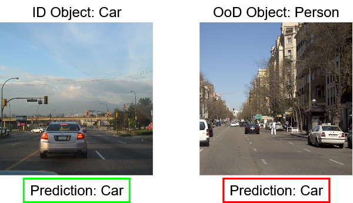
OOD detection has already been tested in real-world applications, exhibiting critical importance across myriad settings. One application area with tangible effects is autonomous driving. Studies have investigated the use of OOD detection for vehicle detection in images and explaining sources of road sign classification mistakes Nitsch et al. (2021); Eykholt et al. (2018); Geiger et al. (2012); Muhammad et al. (2020). An example of the importance of OOD detection in autonomous driving is illustrated in 1.1. OOD detection allows ML models to identify sudden OOD samples (right image), enabling intelligent responses to such situations, e.g. engaging failsafe maneuvers to avoid a catastrophic accident. Another application for OOD detection is robotics. OOD detection can be used to detect sensor anomalies or induce environment-based adaptations in robot behavior Falcini and Lami (2017); Farid et al. (2022). In such applications, OOD detection acts as a filter for noisy sensor readings and improves robot control while preventing inappropriate actions in high-risk or resource-limited task environments. Other applications include industrial automation, where OOD detection has been evaluated for identification of damaged products Bergmann et al. (2019). In medical diagnosis, OOD detection has proven effective at detecting medical anomalies such as abnormal growths, lesions, etc. Additionally, applications improving the intelligibility of medical results for improved patient transparency and trust have leveraged OOD detection Caruana et al. (2015); Schlegl et al. (2019). More examples of OOD detection in real-world applications can be found in relevant surveys and research works Yang et al. (2021b); Farid et al. (2022); Filos et al. (2020); Zhang et al. (2021b).
1.2. Critical Challenges - Ambiguity in OOD Detection
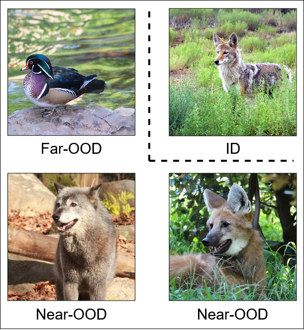
Despite the importance of OOD detection in developing ML systems for open-world settings, significant challenges remain. In particular, the ambiguity between ID data distributions and all possible OOD data in the OOD data distribution allows for extremely difficult cases where OOD data is similar to samples from the ID data distribution seen by the model. Consider the above example of the coyote and wolf in the nature preserve OOD detection application. During training, the ML model saw images of coyotes and learned feature information on coyotes in the ID data distribution. However, when a wolf appeared during testing, many features from the wolf were similar to or overlapped with those from the coyotes. Given the ML model had only seen animals like coyotes in the ID data, it would struggle to identify the wolf as an OOD data sample. This problem is exacerbated if different sub-species of coyotes are considered. If one sub-species of coyote is included in the ID data distribution and a different sub-species of coyote is encountered during test time, the ML model would have significant difficulty in detecting the different coyote species as OOD. 1.2 illustrates this example. Here is another example from the text data domain. Imagine an ML model is trained to handle user queries on banking topics related to renewal of a card. The ID data contains many queries related to card renewal, such as Why isn’t my card available for use anymore? Did it expire?, but the model encounters various OOD queries during testing. Some OOD queries may be clearly OOD, for example if the query is asking the model about a loan, e.g. I’d like to be considered for a loan, what should I do?. However, other OOD queries may be deceptively similar to the ID data distribution, closely aligning with the “card renewal” ID data. If an OOD query was asking the model about card cancellation, perhaps with My card is close to expiring, can you make my card unavailable for further use?, the ML model may have a hard time identifying the sample as OOD given its similarity to ID data it has seen.
These examples illustrate the challenge of near-OOD detection Yang et al. (2022); Winkens et al. (2020). The definition of near-OOD samples encapsulates the above provided examples. OOD data that contain features similar to (including overlapping with) those in the ID data distribution are “near-OOD” Winkens et al. (2020). This also establishes the definition of far-OOD samples, which are OOD data that are clearly different from data in the ID data distribution. Intuitively, near-OOD data is significantly more difficult for discriminative classifier ML models to detect, as such models are designed to extract and learn features from the ID data distribution Rubinstein et al. (1997); Liu and Bai (2012). As near-OOD data by definition contains features similar to ID data, they deceive the model and are harder to detect by nature of lying close to the discriminative decision boundaries learned by such models and methods. The source of the challenge for near-OOD data is thus in the limited ability of ML models to learn discriminative features that sufficiently and distinctly represent the ID classes (which are an approximate simplification of the ID data distribution commonly used across the space of ML classification and OOD detection Kim et al. (2015); Wang et al. (2016); Hendrycks and Gimpel (2017)). Instead, deceptive features, denoted as spurious features Neuhaus et al. (2023), are learned from the ID data. Spurious features are not guaranteed to exclusively belong to the ID data distribution, and learning of such features can mislead ML models during testing when near-OOD samples may be encountered Ming et al. (2022b); Paullada et al. (2021).
Importantly, this problem is diminished in traditional classification task environments (including those under the closed-world assumption) as the i.i.d. assumption assures that the training and testing data distributions are identical. This allows for both discriminative and spurious features to correlate with data (and classes) across distributions, providing benefits for the model with no risk of misleading. However, in OOD detection, this assumption does not apply and thus the guarantee does not exist. The distribution of OOD data is not the same as the ID distribution. Spurious features can be present in the ID testing data and the OOD testing data, which misleads the ML model into recognizing near-OOD samples with overlapping spurious features instead of detecting them as OOD. The solution is for ML models to learn ID class-relevant discriminative features because they define distinctive boundaries in the embedding space between ID classes and OOD samples. This enables improved detection of OOD samples with respect to the learned ID classes and data distribution.
1.3. Real-World Solution Directions for Near-OOD Detection
Solving the near-OOD detection problem in the context of the open-world setting not only requires the targeted leveraging of ID class-relevant discriminative features but also requires consideration of applying near-OOD detection-capable ML systems in real-world environments. From the perspective of a user, it is not only effectiveness that is necessary but also efficiency and accessibility Yuhas et al. (2021); Li et al. (2025b); Wang et al. (2025b). Efficiency embodies the optimization of cost for a solution, encapsulating resource requirements with respect to time (data) space. Accessibility embodies the ease-of-use for any given application-side entity (be it developer or end-user). An OOD detection solution that is highly effective but is intractably expensive in time and computing resources is impossible to develop for and produce in a real setting. Likewise, a solution that requires significant user effort limits its applicability and indirectly reduces overall effectiveness.
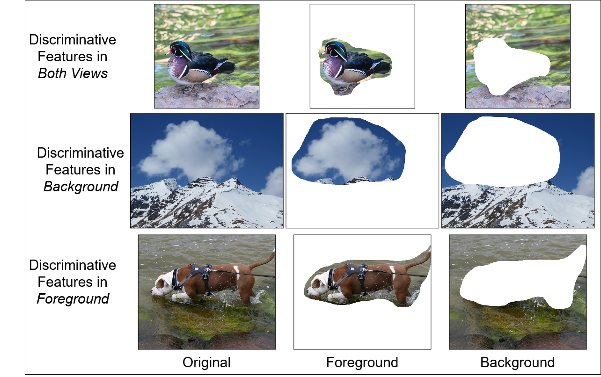
When considering the image data domain, a major obstacle to realistic near-OOD detection is the requirement of significant computational processing. Training expensive image-processing ML models demands significant resources and time-consuming curation of additional data Houlsby et al. (2019); Hu et al. (2021); Ridnik et al. (2021). However, these demands can be mitigated through the use of existing resources that also provide additional information beneficial to OOD detection. For example, existing research in biological systems suggests that humans use multiple views, or alternative augmentations of an image, to identify what is being observed Weiner and Zilles (2016); Vuilleumier et al. (2002). Extracting and leveraging multiple views of an image, each containing different complementary information, could help ML models learn to better recognize distinguishing features of ID data via the contextual relationships across views. Take 1.3 as an example. Three original images and their corresponding foreground and background views are depicted, each on their own row. The Dog-class image’s discriminative features (i.e. those representing the object of “Dog”) are primarily in the foreground and the separate views isolate these features from the background. The Mountain-class image’s discriminative features are primarily in the background and the separate views instead isolate these features from the foreground. In both cases, the corresponding view with discriminative features provides additional context that correlates with the original image, reinforcing the features to learn for the ID data distribution and removing spurious features. This benefit is not isolated to exclusive foreground or background cases. The Duck-class image’s discriminative features are in both views, with the water and foliage in the background containing informative semantic context that well-separates the class in the ID data space. Depending on the class, all three views may be important and can contribute to learning of ID class-relevant discriminative features in different proportions. This provides intuitive benefits over otherwise-equivalent single-view methods (i.e. which only use the original image) which must include spurious features with discriminative features in the input, increasing the load on the model during learning to separate the discriminative features in addition to learning them. The existence of segmented datasets, including efficient segmentation models, establishes a justification for the considered novel OOD detection approach leveraging multiple foreground and background views by eliminating additional work in procuring such data Lin et al. (2021); Drygala et al. (2022); Jocher et al. (2020); Qin et al. (2020). Further efficiency and accessibility can be embodied by using existing pre-trained models and parameter-efficient fine-tuning to avoid expensive training costs with impractically high resource demands Hu et al. (2021); Sun et al. (2022); Chen et al. (2021c). This motivates the development of Cross-view Attention of Segmented views for OOD Detection (CASOD) Politowicz et al. (2026b), presented in detail in Chapter 5 with additional supporting material preceding it in Chapter 4.
For the text data domain, a similar obstacle and solution approach exists. With the advent of large language models (LLMs), application of ML systems is accelerating with increasing demands for more powerful and effective models Angrisani et al. (2026); Minaee et al. (2024). However, training such LLMs requires an astronomical amount of computing resources, data, and power. There are consequences for these demands that inspire approaches avoiding the need for training Ding and Shi (2024). Instead, with the known abilities of LLMs to embody and utilize learned pre-trained knowledge Kumar et al. (2025), it would be ideal if the benefits of near-OOD detection could be realized using only the LLM itself. That is, implementing effective near-OOD detection without requiring any sort of interfacing with the LLM’s components or underlying outputs (i.e. non-text generation outputs). This inspires the idea of using only prompts to induce reasoning in the LLM leading to principled detection of a test input as ID or OOD. With the extensive knowledge embedded in LLMs from pre-training, extraction of the discriminative features in the test input relative to the discriminative features of the ID data distribution is feasible Kumar et al. (2025); Wang et al. (2024a). Comparison of the resultant sets of discriminative features through alignment of the various similarity spaces defined by these features, e.g. lexical (comparing words and phrases) and semantic (comparing meanings), informs the weighting of the test input between ID and OOD. By limiting the solution to only a prompt, an LLM’s basic interface, and the LLM’s response, near-universal accessibility is guaranteed, requiring only access to an LLM and some data. This further guarantees efficiency as no training is required. This motivates the development of Alignment-based Thresholding for Prompt-only OOD detection (ATPO) Politowicz et al. (In Review), presented in detail in Chapter 6.
Thesis Statement: This thesis demonstrates the state-of-the-art effectiveness of two OOD detection methods that were proven against near-OOD datasets in experiments against recent, competitive baselines while additionally fulfilling efficiency and accessibility requirements for real-world application. The first method focuses on the image data domain and utilizes multi-view processing of segmented foreground and background views to learn ID class-relevant discriminative features via a novel cross-view correlation attention feature fusion architecture. Usage of a pre-trained model with parameter-efficient fine-tuning, on top of a fast segmentation model, maintains low computational complexity and simple interfacing between image data and segmented views. Efficient leveraging of segmented foreground and background views results in improved near-OOD detection performance in challenging experimental settings. The second method investigates OOD detection in the text data domain through the use of only text prompts with no complex model components, ML programming expertise, data curation, or model training. Through the induction of lexical and semantic alignment-based reasoning in LLMs, effective near-OOD detection across a variety of settings can be achieved through the processing of scores informed by the ID data. By requiring only a prompt and an LLM with no training, any sort of user barrier is removed ensuring accessibility and efficiency.
Chapter 2 Background
2.1. Out-of-Distribution Detection
An ID training dataset is composed of samples and labels for number of ID samples and number of ID classes . is drawn i.i.d. from an ID distribution , i.e. , which is the marginal distribution of joint data distribution on . There also exists the OOD marginal distribution on OOD data and unknown OOD labels . An OOD dataset is drawn from the OOD distribution and contains samples with labels for number of OOD samples .
The OOD detection task is, given only and a test sample , identify if the test label or . An OOD detection model uses an ML model in the following formulated level set estimation:
| (2.1) |
for scoring function and user-defined threshold . Of note is that the OOD score is higher for samples identified as more ID and is lower for samples identified as more OOD.
2.2. Metrics
Several metrics have been proposed to measure the performance of OOD detection methods Lu et al. (2024b):
-
•
Area Under the Receiver Operating Characteristic Curve (AUC). This metric quantifies the model likelihood of assigning higher scores to ID samples with respect to scores of OOD samples. AUC correlates with the model’s ability to correctly rank ID samples higher than OOD samples. A higher AUC is indicative of better OOD detection performance.
-
•
False Positive Rate at 95% True Positive Rate (FPR95). This metric quantifies the false positive rate (FPR) at the value where the true positive rate (TPR) becomes 95%. It measures the amount of OOD samples incorrectly classified as ID. FPR95 correlates with an OOD detection model’s likelihood of false detections under strict ID detection requirements. A lower FPR95 is indicative of better OOD detection performance.
-
•
Area Under the Precision-Recall Curve (AUPR). This metric quantifies a combination of model precision and recall. Two versions of AUPR exist: one where precision and recall is considered for ID data as the “correct” class of interest (AUPR-IN) and one where OOD data is considered as the “correct” class of interest (AUPR-OUT). AUPR is particularly effective at measuring OOD detection performance under severe ID-OOD data imbalance. AUPR correlates directly with the model’s ability to correctly classify ID (or OOD) data. A higher AUPR is indicative of better OOD detection performance.
Of note is that the OOD detection literature more frequently makes use of the AUC score Bradley (1997); Hendrycks and Gimpel (2017); Lee et al. (2018). AUC covers general model performance and avoids reliance on a user-defined threshold which may be application- or domain-dependent Hendrycks and Gimpel (2017). This thesis likewise prioritizes AUC as the predominant OOD detection metric but other metrics are reported in varying capacities as needed to illustrate robustness.
2.3. Relevant OOD Detection Methods
2.3.1. Maximum Softmax Probability
The paper proposing Maximum Softmax Probability (MSP) Hendrycks and Gimpel (2017) is widely considered to be the work spawning the OOD Detection field. MSP uses a classification model and treats the predicted probability distribution, , as a representation of model confidence in the sample under consideration, where “softmax” is the softmax function and is the predicted logits. The maximum probability is used as the OOD score
| (2.2) |
with indicating the maximum function over probabilities of classes . MSP stands as a simple OOD detection tool that remains as a reliable baseline, although much research has revealed limitations to the method Hendrycks et al. (2019) and proposed improvements Sun et al. (2021).
2.3.2. Mahalanobis Distance
Mahalanobis Distance (MD) Lee et al. (2018) is considered the original distance-based OOD detection method, measuring the distance between a sample and Gaussian distributions representing ID data in the feature space. MD first computes class-conditional Gaussian distributions for each ID class in the training distribution. This is intractable as it cannot be assumed that any model has access to the entire ID training data distribution. The authors of MD propose instead to approximately fit the ID class Gaussian distributions using maximum likelihood estimation over the available training data and tied covariance.
Specifically, empirical class means and a single, shared covariance matrix are computed from the training dataset using some feature extractor
| (2.3) | ||||
is the number of samples in class and sample .
Given the class means and covariance matrix , the MD OOD score is calculated using the feature vector for test sample
| (2.4) |
again indicates the maximum function over classes . MD continues to demonstrate impressive performance in many OOD detection domains Yang et al. (2022); Zhang et al. (2023); Ren et al. (2021). Importantly, as MD is a distance-based OOD detection method that relies on features (also referred to as a “feature-based OOD detection method” in this thesis), its performance on OOD detection improves as the embedded feature space (henceforth referred to simply as “feature space”) improves. That is, as the model learns increasingly discriminative, ID class-relevant features, ID sample features cluster into localized groups (according to class) with increasingly distinct separation in the feature space. MD accurately models this feature space and thus separates OOD sample features from ID sample features more clearly Lee et al. (2018); Sun et al. (2022); Ammar et al. (2024); Fort et al. (2021). Orthogonal techniques that improve learning of features from data, e.g. data augmentation, also benefit MD (and other feature-based OOD detection methods) Sun et al. (2022); Khosla et al. (2020); Hendrycks et al. (2022); Yun et al. (2019).
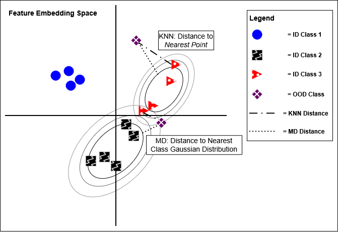
2.3.3. k-Nearest Neighbors
k-Nearest Neighbors (KNN) Sun et al. (2022) is another distance-based OOD detection method. However, it differs from MD in that it uses a non-parameteric distance metric. Specifically, KNN uses the -th nearest neighbor distance between a sample and the training dataset feature vectors. An illustration of the similarities and differences between MD and KNN is in 2.1.
ID training feature vectors are collected and normalized (per findings from a related investigation Tack et al. (2020); Huang et al. (2021)) from the training dataset , with as the norm of feature vector . The KNN OOD score is calculated using the normalized feature vector for test sample . Specifically, the Euclidean distances between and each , , is computed and ranked according to distance, where represents the newly ordered position. The -th Euclidean distance is used as the OOD score
| (2.5) |
Note that KNN does not require the labels of the ID data, i.e. it is unsupervised. This has certain advantages in settings without guaranteed access to labeled data. As with MD, KNN improves as the feature space improves. Furthermore, KNN makes no assumptions about the distributions of data in the feature space.
2.3.4. Virtual Logit Matching
Virtual Logit Matching (VIM) Wang et al. (2022a) is a hybrid OOD detection approach that uses both features and predicted logits to quantify an OOD score. VIM divides the feature vector of a sample into a column subspace (CS) component and a null subspace (NS) component before comparing the NS component to predicted logits .
The detailed procedure is as follows: given feature extractor of model and feature vector for input sample , the model can be further specified as for classification linear layer weight matrix and bias , where is the dimension of feature vector . can be decomposed into a CS and an NS . is unique in that it does not affect classification but it influences OOD detection due to the definition of NS. Specifically, the NS is the set of solutions satisfying . can be similarly decomposed into with and as projections of to the NS and CS respectively.
NS projections in OOD samples deviate significantly with those in ID samples. To exploit this, VIM directly compares the NS projection with predicted logits. First, the NS projection is redefined as a virtual logit , with as a scaling parameter computed from virtual logits and maximum predicted logits of the ID data
| (2.6) |
Then, the virtual logit is concatenated to the predicted logits and a softmax is performed to retrieve the NS projection sample probability. The probability of the virtual logit is used as the OOD score
| (2.7) |
VIM has consistently shown state-of-the-art performance despite many later works proposing alternative approaches for OOD detection. The combination of feature and logits information increases the saliency of information for OOD detection in any given evaluated sample.
2.4. Multi-View Processing
A multi-view dataset contains set of labels and a set of associated multi-view samples . Each multi-view sample is composed of a set of views where is the number of views. Views are images, with each view being a copy of the original image under covariate or semantic shift (including no shift, i.e. the original image itself). That is, given some augmentation function introducing covariate or semantic shift , a view is defines as for original image .
Multi-view models process multi-view datasets by taking each view in a multi-view sample as input and calculating some representation coalescing information across the views as output. The multi-view model may be considered as a set of individual-view models . Each view in a multi-view sample is processed by its corresponding individual-view model . Note that individual-view models can be the same, and thus shared. Outputs from each individual-view model are then coalesced in an operation referred to as “fusion”, resulting in a collective output from the multi-view model for fusion operation (or embodying architectural module) .
2.5. Prompting for OOD Detection
A text dataset is composed of labels and text samples . Given a prompt template and a text input , a prompt is constructed as input to a language model (LM), e.g. an LLM, for generation of a response to be used for OOD detection. Specifically, given prompt template , a parsing function is used to extract an OOD score from the output of LM
| (2.8) |
The parsing function typically operates over the tokens generated from the LM . In existing work, takes the form of an identity function detecting the presence of either an ID class token or the “unknown” token Wang et al. (2024a). That is, the baseline prompt-only OOD detection method uses parsing function
| (2.9) |
2.6. Attention
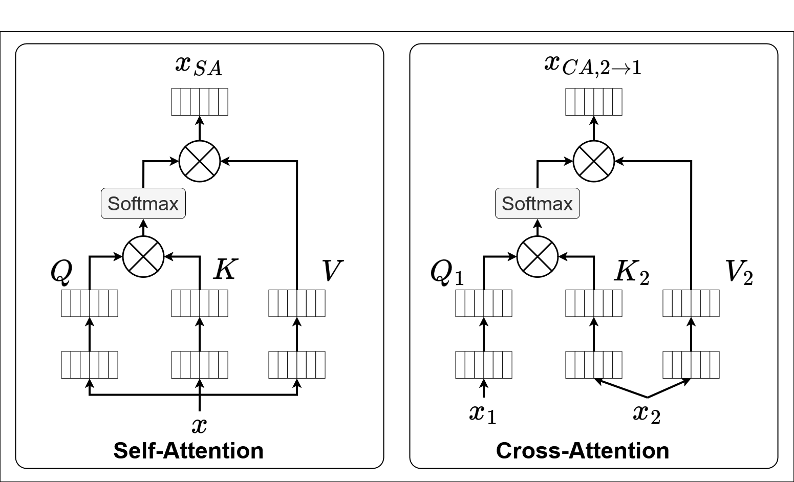
The Attention Vaswani et al. (2017) mechanism has recently become a critical component in state-of-the-art neural network (NN)-based deep learning models Dosovitskiy et al. (2020). There are two predominant types of attention: self-attention and cross-attention Vaswani et al. (2017). All attention mechanisms operate on a patch-style input format. Note that in this dissertation only image-based attention is considered. That is, given an input image (where refer to the image channel, width, and height dimensions respectively), traditionally the image is reshaped to have patches each of dimension, where for patch resolution . For an image input, this is analogous to sectioning the image into a grid of square image subsections of size before rearranging the sections into a sequence of length. Transformer models additionally prepend a class patch to the sequence and add position encoding to the patches Dosovitskiy et al. (2020). Examples of the types of attention, described below, can be found in 2.2.
Self-Attention: An input is projected into a query , a key , and a value using respective weight matrices , ,
| (2.10) | ||||
and are projection dimensions selected by the user as hyperparameters. The query , key , and value are used to calculate the attention as follows
| (2.11) | ||||
Self-attention can also be extended to use multiple heads, but this is out of scope of the dissertation Vaswani et al. (2017).
Cross-Attention: Two inputs and are projected into a query , a key , and a value
| (2.12) | ||||
before attention is calculated as in self-attention
| (2.13) | ||||
Chapter 3 State of the OOD Detection Field
3.1. Related Areas
OOD detection as a domain of ML exists parallel to several other related fields, between which significant cross-pollination has occurred as ML has developed over time Ghassemi and Fazl-Ersi (2022); Cui and Wang (2022); Shen et al. (2021). The field of rejection targets identifying and separating “seen” data samples (analogous to ID data) from “unseen” data samples, often using some cost to facilitate rejecting “unseen” samples during learning Cortes et al. (2016); Geifman and El-Yaniv (2017). Works in rejection are parallel to OOD detection but focus on optimizing for the aforementioned rejection cost instead of separating ID and OOD data Cortes et al. (2016). Anomaly detection (or equivalently, novelty detection) attempts to solve the problem of detecting data samples that have not been seen during training (i.e. anomalous or novel) Tax (2002); Liu et al. (2008); Andrews et al. (2016). Detected unseen data can be discarded or used in a variety of ways to facilitate additional procedures, such as future training as a new task. Anomaly and novelty detection differ only minutely from OOD detection. The primary difference is seen (ID) data and unseen (OOD) data are considered as whole collections in anomaly and novelty detection while OOD detection frequently leverages labels in ID data for detection Yang et al. (2021b, 2022). In open-set recognition, testing data is simultaneously classified and evaluated for similarity to known training data Scheirer et al. (2012); Bendale and Boult (2015); Ge et al. (2017); Neal et al. (2018). The field overlaps with OOD detection.
Additional relevant fields tangential to OOD detection include uncertainty estimation and causal representation. “Uncertainty” in ML is a fundamental concept that quantifies the quality of a model’s output, providing feedback on how uncertain a ML model is on a given data sample Loquercio et al. (2020); Malinin and Gales (2018, 2019). With respect to OOD detection, this measure of uncertainty represents the model’s confidence in the sample being OOD Hendrycks and Gimpel (2017). Uncertainty estimation underlies many state-of-the-art OOD detection methods Hendrycks and Gimpel (2017); Gal and Ghahramani (2016); Guo et al. (2017). Although less-directly related, causal representation nevertheless has shown value in OOD detection by learning causal representations and inferring if encountered data samples are OOD (i.e. distributionally shifted) Schölkopf et al. (2021); Wang et al. (2022c). Outlier exposure (OE) is a prevalent tangential field that uses “outlier” data samples during training to learn differences between “inlier” (ID) and anomalous (OOD) samples Hendrycks et al. (2018); Yang et al. (2021b); Chen et al. (2021b); Papadopoulos et al. (2021); Li and Zhang (2025); Wei et al. (2024). While OE solutions target the OOD detection problem, they are not directly comparable to non-OE OOD detection methods as they frequently assume access to OOD data during training. This violates the definition of the OOD detection task. However, recent work in OE has investigated generating synthetic outliers for training instead of assuming access to OOD data, a promising direction with great potential in realistic open-world applications Gong et al. (2025). Of note is that OOD detection is not the same as OOD generalization, which seeks to most effectively broadcast learned ID classes to potentially OOD testing data Zang et al. (2024); Li et al. (2023c); Vogt-Lowell et al. (2023).
While the previous fields interleave with OOD detection, the field of continual learning (CL) instead draws from OOD detection, utilizing it as a critical component in the conceptual and technical pipeline of CL. The task in CL is to incrementally learn a sequence of tasks Thrun and Mitchell (1995); Hadsell et al. (2020); Chen and Liu (2018). It has been shown that the ability to understand when a new task has arrived fundamentally relies on OOD detection Kim et al. (2022b). In the class-incremental learning (CIL) paradigm of CL, data is encountered over time but no indication is provided to the model regarding which task any given data sample belongs to. A CIL model must detect if a data sample does not belong to previously encountered tasks - a problem that fits OOD detection Kim et al. (2022a, 2023a). CL stands as an example of how OOD detection plays an important role in open-world ML.
3.2. OOD Detection Techniques
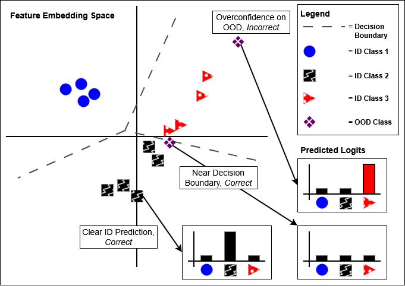
Preliminary exploration in OOD detection revolved around analyzing ML model predicted outputs for characterization of model familiarity with processed data samples Yang et al. (2024); Lu et al. (2024b) The seminal work in OOD detection trained an NN to classify ID data, then converted test data output logits into a probability distribution (using the softmax function). The maximum softmax probability (MSP) was treated as the measure of confidence in the sample being from the ID data distribution Hendrycks and Gimpel (2017). High MSP values were indicative of the sample being more likely ID (i.e. a low OOD score) while low MSP values were indicative of the sample being more likely OOD (i.e. a high OOD score). Future work innovated on this method in multiple ways. Some work elected to directly use logits for OOD scores Hendrycks et al. (2019), others discovered the benefits of normalizing logits to reduce variance Wei et al. (2022a), and promising advances have been made in converting model predictions from logits to energy measures with less bias Liu et al. (2020); Wang et al. (2021); Chen and Ding (2025). Further investigations into the characterization of probabilistic classification models as energy models have leveraged architectural changes via Hopfield networks to more appropriately quantify energy-based OOD scores Zhang et al. (2022a); Hofmann et al. (2024, 2025); Moriai et al. (2025). Alternative research directions instead have focused on improving model learning itself for OOD detection instead of limiting scoring to only the predicted outputs Liu and Qin (2024). The family of ODIN OOD detection methods uses calibration (via temperature scaling) and modification of data inputs to estimate an OOD score based on changes in predictions Liang et al. (2017); Hsu et al. (2020). OOD detection from perturbing test inputs remains of interest, with recent investigations showing notable results Chen et al. (2025). Several works step further in this direction, using generative models and corruptions to estimate OOD scores Lee et al. (2025a). Rectified Activations (ReAct) clips the activations of NN intermediate layers, resulting in greater distinction between ID and OOD outputs Sun et al. (2021). Generalized Entropy (GEN) uses thresholds on entropy functions of model outputs to reduce variance within ID and OOD outputs Liu et al. (2023b). Adaptive Temperature Scaling (ATS) modulates temperature scaling in NN models to isolate ID predictions from OOD predictions Krumpl et al. (2024). Variational Rectified Activation (VRA) parameterizes ReAct and learns optimal clipping of activations to further optimize detection of OOD samples Xu et al. (2024b). Adaptive Scaling (AdaScale) further builds on these ideas by identifying individual activation shifts between ID and OOD data, enhancing detection Regmi (2025). Other advances in logits-based OOD detection include interpreting predictions as density or entropy values Abati et al. (2019); Pidhorskyi et al. (2018); Zong et al. (2018); Yang et al. (2025a), decomposing NN components for improved logit characterization Hsu et al. (2020); Huang and Li (2021); Huang et al. (2021); DeVries and Taylor (2018); Chen et al. (2023b); Yu et al. (2023); Chen et al. (2024a), and calibrating logits for OOD detection through analysis of NN weight trends during learning Shama Sastry and Oore (2019); Sun and Li (2022); Canevaro et al. (2025); Kalan et al. (2025). Additional logits-based paradigms include using prior networks Malinin et al. (2019), semantic representations Shalev et al. (2018), ensembles Yang et al. (2021a); Xu et al. (2024a), or optimizing classifier discrepancy Yu and Aizawa (2019) for improved OOD detection Scheirer et al. (2012); Smith (1990).
In modern OOD detection, it is recognized that logits-based methods are fundamentally limited by two major factors. First, logits reduce information quality for OOD detection Lee et al. (2018). Second, it is well-recognized that NN classification models are overconfident on predictions. That is, models are biased towards predicting higher confidences regardless of if the given data sample is ID or OOD. An example of overconfidence in OOD detection is shown in 3.1. The OOD sample in the upper right should be clearly OOD as it is far from any ID samples, but it is incorrectly considered ID due to overconfidence (represented as being clearly inside the ID class confidence region and far from any decision boundary). An additional non-trivial limitation is the assumption that prediction distributions learned by models are correct, while in practice this is not guaranteed Liu et al. (2024c); Miao et al. (2024). This significantly reduces the capacity for models to perform OOD detection Nguyen et al. (2015); Hendrycks and Gimpel (2017); Wei et al. (2022a); Lee et al. (2018); Sun et al. (2021); Paullada et al. (2021).
Attempts have been made to resolve the overconfidence issue in OOD detection through the well-studied domain of self-supervised methods. These attempts use additional data to focus model learning on discriminating between ID and OOD data Hendrycks et al. (2019); Hu et al. (2020); Bergman and Hoshen (2019). By training models on what is not ID data, overconfidence is reduced Hendrycks et al. (2019). The predominant self-supervised OOD detection methods fall under the family of contrastive learning techniques Wu et al. (2018); Chen et al. (2020b); Qiu et al. (2021). Contrasting Shifted Instances (CSI) trains models using rotated images and a contrastive loss to concentrate predicted confidence on only the non-rotated images. This naturally distributes lower predicted confidence to all other non-rotated samples, simulating OOD samples during training and preparing the model for true OOD samples during testing Tack et al. (2020). The Compactness and DIspErsion Regularized framework (or just CIDER) learns to simultaneously coalesce ID data points within each class while separating ID data points between different classes, increasing predicted confidence for ID data Ming et al. (2022a). Another major self-supervised OOD detection direction generates “pseudo-OOD” samples that simulate OOD data using only ID data (as opposed to assuming access to the OOD data distribution, as in outlier exposure). These methods can use perturbed generated samples Oza and Patel (2019); Nalisnick et al. (2019), adversarial training Schlegl et al. (2019); Serrà et al. (2019), class-informed generation Wang et al. (2022b), or NN feature corruption Du et al. (2022) to generate pseudo-OOD data. Other work has explored a tangential direction, using data augmentation to improve model learning of the ID data for greater recognition of ID test samples (and thus lower overconfidence in OOD test samples) Shorten and Khoshgoftaar (2019); Thulasidasan et al. (2019); Golan and El-Yaniv (2018). Mixup uses data transformations and an ID class mixing strategy to improve ID data learning Thulasidasan et al. (2019); Yun et al. (2019); Hendrycks et al. (2022). Reconstruction Denouden et al. (2018); Zhou (2022) and mixed image modeling Li et al. (2023a) improve model familiarity with ID data using their respective data augmentations. Another direction in self-supervised OOD detection uses multiple models to promote learning of ID data and prediction consistency (e.g. between a teacher and a student) Cai et al. (2022). These techniques parallel the notion of mixture-of-experts, where multiple models are used to generate a prediction Mu and Lin (2025); Yu et al. (2024). Mixture-of-experts has also demonstrated impressive results in OOD detection Lu et al. (2024a); Hogeweg et al. (2024). OOD detection methods that rely on self-supervised methods have achieved impressive results, but they require significant data and computational resources. They also fail to solve the issue of information reduction provoked by logits-based OOD detection.
Both issues presented by logits-based OOD detection are solved with distance-based (or, equivalently, feature-based) OOD detection methods. By using distances in some representative space (typically defined by the embedded features of a model), greater information is captured in the higher dimensionality (with respect to predicted logits) and overconfidence is mitigated through quantitative comparisons of embeddings instead of reduction into a probability distribution Lee et al. (2018). The primary representative distance-based OOD detection method, mahalanobis distance (MD), approximates Gaussian distributions around all ID class data for calculation of distances between test samples and ID classes. The minimum distance is used as a metric for the OOD score Lee et al. (2018). K-nearest neighbors (KNN) uses the titular unsupervised pipeline to measure the distance between ID data and potential OOD data samples Sun et al. (2022). Class-Aware Relative Feature (CADRef) decouples relative features to measure distances with respect to ID classes Ling et al. (2025). Discriminative Hyperspherical Embedding (DHE) uses normalization and regularization to improve ID class feature representation for greater OOD data separation Zou et al. (2025b). Various other modulations of these distance metrics have been proposed for OOD detection Ren et al. (2021); Mendes Júnior et al. (2017). Other approaches to distance-based OOD detection focus on improving model learned features instead of improving on distance metrics Kamkari et al. (2024); Guan et al. (2024); Mirzaei and Mathis (2025); Li et al. (2024b). Deriving informed features from only important neuron outputs has been shown to improve distance-based OOD detection performance Olber et al. (2023); Ahn et al. (2023); Dong et al. (2022). Principal Component Analysis (PCA) uses the named statistical technique to identify key components of model-learned features for more accurate distance measurements Guan et al. (2023); Fang et al. (2024). Neural Collapse (NECO) identifies ID- and OOD-relevant components of features for OOD detection Ammar et al. (2024); Wu et al. (2025b). Several works have proposed using “typical features”, which are learned generalizable features for the training (i.e. ID) space, for OOD detection Zhu et al. (2022b); He et al. (2024). Investigations into NN components and architectures have revealed multiple strategies for feature extraction in different models Abdelzad et al. (2019); Gunther et al. (2017); Yang et al. (2025b). In particular, recent research has demonstrated that pre-trained foundation models can achieve state-of-the-art distance-based OOD detection performance using their general knowledge Fort et al. (2021). A promising tangential direction to distance-based OOD detection combines feature-based distances and logits-based confidence. VIM converts model features into a virtual logit for an improved logits-based OOD score Wang et al. (2022a).
While distance-based OOD detection methods have shown promising performance, they critically rely on discriminative features that are representative of ID classes. Some methods have observed success in using self-supervised techniques to improve the quality of features for distance-based OOD detection Ming et al. (2022a); Sehwag et al. (2021), but learning of effective discriminative features for generalizable OOD detection remains a significant problem in the field.
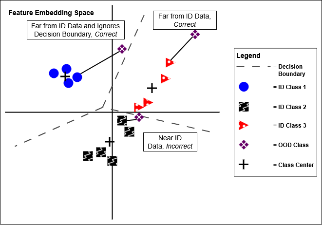
The importance of features in OOD detection has become a major point of recent discussion in the field. A model’s ability to learn ID class-representative discriminative features significantly influences its ability to distinguish ID testing data samples from OOD samples. This is illustrated in 3.2, where OOD data that lie near ID data in the feature space are incorrectly detected. Models that learn spurious features, which correlate to ID classes but do not contribute discriminative meaning, perform worse in OOD detection Zhang et al. (2023); Salehi et al. (2022). Existing works have analyzed components of images, such as the backgrounds in images containing an object, to isolate sources of spurious features and develop mechanisms to prevent learning them Ming et al. (2022a); Neuhaus et al. (2023). The discussion of discriminative and spurious features is closely related to the well-known problem of near- and far-OOD detection. Specifically, the OOD detection problem is divided into two subsets according to difficulty in detecting the OOD samples. Far-OOD datasets are clearly separable from ID data, exhibiting severe covariate shift (differing domain from the overall ID distribution), severe semantic shift (differing features from the ID classes), or both. Near-OOD datasets overlap with the ID data distribution in some capacity, having little to no covariate or semantic shift Yang et al. (2022); Wang et al. (2023b); Winkens et al. (2020); Zhang et al. (2023). The existence of near-OOD data is of critical importance in transitioning OOD detection from clinical environments to applications Salehi et al. (2022); Khazaie et al. (2022); Wu et al. (2025a); Zhang et al. (2021a); Vaze et al. (2022). Several works have already begun to address the issue of adjusting OOD detection concepts and methods to realistic settings through adaptations such as improved outlier exposure Azizmalayeri et al. (2022) or robustness Chen et al. (2020a); Meinke et al. (2022). Despite these efforts, near-OOD detection remains a present issue in the field with many modern works neglecting to experiment on near-OOD datasets or struggling to outperform existing baselines Gong et al. (2025); Ling et al. (2025). The near-OOD detection problem, and the related issue of learning discriminative features, exist as the next major challenge to both the field of OOD detection and the expansion of ML to open-world settings.
3.3. Multi-View OOD Detection
Multi-view classification is a field of ML that investigates the use of multiple different views of an images for a classification task. Each view is a distinct image derived from the original image and containing a subset of the features in the original image Seeland and Mäder (2021). Developments in the field have shown the benefits of multi-view learning in different architectures and across various applications Su et al. (2015); Zhao et al. (2023); Liu et al. (2019); Zhan et al. (2023). Recently, the prevalence of Transformer-based attention Dosovitskiy et al. (2020) has drawn the interest of the multi-view community. Studies have shown that models based on Transformers also benefit from multi-view learning, outperforming previous multi-view baselines (e.g. using convolutional NNs) Zhao et al. (2023); Chen et al. (2021a). Innovations on self-attention and cross-attention methods Frank et al. (2021) exploit the rich feature information across views Li et al. (2023b) and enable fusion of view features into a more informative embedding for classification and other downstream tasks Wang et al. (2024c); Ke et al. (2024). With respect to the choice of views, previous work primarily uses rudimentary transformations of the original image or different perspectives of the same object Geng et al. (2023).
While multi-view classification has grown as a research field, there has been little-to-no work investigating the intersection between multi-view methods and OOD detection. Often, related works treat anomalous images (or components of images) as “OOD” and apply basic uncertainty estimation techniques to approximately detect these samples at test-time Fernandez-Quilez et al. (2023); Jung et al. (2022). Another work followed the related direction of augmenting images to separate ID images from anomalous images Radford et al. (2021).
Image segmentation in multi-view contexts has only been sparsely explored. Within the field of OOD detection, several works have used foreground-segmented images for anomaly detection but they discard the background instead of utilizing it for additional features Tian et al. (2024); Miyai et al. (2024b). One solution used Vision Language Models and prompt learning to extract foregrounds, using both image and text as input for few-shot OOD detection Miyai et al. (2024b). These approaches typically neglect full usage of all available image view features (e.g. backgrounds) or leverage other additional data modalities, rendering them incomparable to image-only or text-only OOD detection methods (which are the subject of this thesis). Another approach disentangles foregrounds and backgrounds in images but uses dense prediction instead of segmentation. It further applies the views to open-world classification instead of OOD detection Ding and Pang (2024). Another typical problem exists at the frontier of segmented image-based, multi-view OOD detection research. Performance is generally poor compared previous single-view state-of-the-art OOD detection baseline methods. The problem of OOD detection using segmented images and multi-view methods remains open, with great potential.
3.4. OOD Detection with Natural Language
With the advent of large language models (LLMs), the field of natural language processing (NLP) has exploded in popularity. This has naturally nurtured an analogous growth in interest on the performance of such models when exposed to OOD samples Baran et al. (2023); Lang et al. (2023); Xu and Ding (2024); Yang et al. (2023). Related areas including uncertainty quantification Chen et al. (2024b); Ma et al. (2025); Xiong et al. (2024); Ye et al. (2024), OOD generalization Wang et al. (2024b), and quality assurance Ouyang et al. (2025) have attempted to establish the OOD detection problem in NLP Zhou et al. (2023). Existing work on OOD detection in NLP have expanded other problems, such as the text classification task, to encompass identifying and classifying OOD test data Zheng et al. (2020); Tóth and Gal (2024); Garg et al. (2021). More principled approaches consider quantifying the uncertainty in NLP-based methods and models Da et al. (2024); Xiong et al. (2024); Tian et al. (2023), including studying noise in NLP models and data Al Sharou et al. (2021); Chen et al. (2023a) and exposing models to synthetic OOD samples Li et al. (2024a); Kim et al. (2023b).
With respect to LLMs, OOD detection has become a rapidly growing domain Xu and Ding (2025); Liu et al. (2024a); Wang et al. (2024b); Liu et al. (2024b); Sali and Toraman (2025); Zaera et al. (2025). Initial work investigated fine-tuning to improve LLM characterization of the ID decision boundary and detection of OOD samples Salimbeni et al. (2024); Zhang et al. (2024); Xu et al. (2022); Han et al. (2024); Kim et al. (2024); Wang et al. (2025a); Singh and Yannakoudakis (2025); Castillo-López et al. (2025). Another direction of works instead focuses on improving and extracting LLM features or logits for OOD detection scoring Lee et al. (2024a); Huang et al. (2024); Cao et al. (2024); Baran et al. (2023); Uppaal et al. (2023); Tint (2025). In a set of works that draw from self-supervised learning, negative (i.e. synthetic alternative) classes or text domains were shown to be beneficial in augmenting LLMs for OOD detection Huang et al. (2024); Luo et al. (2025). Following from work in outlier exposure, success has likewise been observed in exposing LLMs to OOD data during training to improve ID and OOD separation at test time Cao et al. (2024); Park et al. (2023); Xu et al. (2023). OOD detection in LLMs has also been considered as part of the design principles in many state-of-the-art foundation models. The inclusion of mixture-of-experts components in LLMs improves learning of discriminative ID knowledge, in turn improving uncertainty awareness during generation Dai et al. (2024); Jiang et al. (2024a). Recent advances in agentic models have incited similar discussions on evaluating uncertainty awareness and improving OOD detection Lee et al. (2025c).
Of note is the recent focus of OOD detection on leveraging images and text, particularly in the form of Vision Language Models (VLMs) Miyai et al. (2024a); Lee et al. (2025b); Dai et al. (2023); Alnegheimish et al. (2025). Traditional methods, such as fine-tuning VLMs for OOD detection Zeng et al. (2024); Xu et al. (2025), have demonstrated clear effectiveness in solving the task. However, explorations into improving alignment between learned text and image embeddings suggests significantly greater depth in the multi-modal domain Kim and Hwang (2025); Zhang et al. (2025). A greater interest in few-shot and zero-shot OOD detection has also developed recently, in which models must separate ID and OOD samples with either little-to-no ID training or no access to ID training samples at all Madan et al. (2024); Esmaeilpour et al. (2022).
3.4.1. Prompting and OOD Detection
One of the fundamental components in LLMs is the prompt, which contextualizes the task provided to the model and acts as the conditional distribution over which inference operates Mei et al. (2025). An expansive and rich history of investigations into prompts has resulted in a deep understanding on methods which improve LLM performance across a breadth of tasks. Reasoning stands as a major prompting refinement (or equivalently, prompt engineering) method that encourages model refinement of knowledge Munkhbat et al. (2025); Agarwal et al. (2023); Zhou et al. (2022); Huang et al. (2023); Zhang et al. (2022b); Shi et al. (2022). This can take multiple forms, including cognitive reasoning Kramer and Baumann (2024) which aims to dissect LLM reasoning into a procedure of reasoning tools, or self-refinement Madaan et al. (2023); Shinn et al. (2023); Zhou et al. (2024) in which the LLM iterates over outputs until a consistent response is generated. Inclusion of examples within prompts, an example set of techniques being In-Context Learning (ICL), has been discovered to be extremely effective in many tasks Dong et al. (2024). Agentic prompting, resulting from the aforementioned increase in agentic LLM investigations, also shows promise in improving model efficacy Yue et al. (2024); Chen et al. (2022).
With respect to OOD detection, nearly all works in NLP- and LLM-based OOD detection assume access to model components (features and logits) or OOD data. The sparse domain of prompt-only OOD detection shows great promise in applications, functioning without unrealistic assumptions while improving model detection performance and increasing accessibility for users. Existing works are extraordinarily limited, with one work proposing the idea solely through generation of “unknown” or an ID class for detection Wang et al. (2024a). Prompt-only OOD detection exists as a task rich with potential for future innovation and application. In particular, the concept of alignment Yousef and Janicke (2020); Wang and Dong (2020); Bani Saad et al. (2025); Zariņa et al. (2015); Yang et al. (2019); Chang et al. (2021); Xylogiannopoulos et al. (2025) has been thoroughly studied but has yet to be applied to OOD detection. Specifically, the notions of lexical alignment El-Kishky et al. (2021); Dyer et al. (2013); Srivastava et al. (2025) and semantic alignment El-Kishky et al. (2021); Thompson et al. (2020) exhibit potential for use in OOD detection via prompting of LLM reasoning and generation of OOD scores.
Chapter 4 Preliminary Investigations into Multi-View OOD Detection
4.1. Multi-View OOD Detection Frameworks
The challenge in image-based OOD detection has predominantly shifted to solving the problem of detecting near-OOD data Yang et al. (2022); Winkens et al. (2020). As previously mentioned, near-OOD is considered to be OOD data that has significant covariate and/or semantic overlap with the ID data distribution. Detection of near-OOD data relies on model learning of discriminative features representative of ID data (or classes) and subsequent rejection of spurious features Ming et al. (2022b); Neuhaus et al. (2023). Existing multi-view and OOD detection works primarily focus on augmenting data through various transformations that serve to increase the diversity of data in the ID distribution and improve model learning Shorten and Khoshgoftaar (2019); Hendrycks et al. (2022); Geng et al. (2023). However, studies investigating the behaviors of ML models and the impact of spurious features on learning have revealed patterns identifying foregrounds and backgrounds of images as critical components separating discriminative and spurious features Geng et al. (2023); Miyai et al. (2024b). There has been very little work in the multi-view literature that considers this approach to multi-view learning, i.e. using foregrounds and backgrounds as views, emphasizing the need for investigation in this direction of research. It is hypothesized that using foregrounds and backgrounds of an image as views can improve model learning of discriminative features in images, thus improving OOD detection and particularly advancing the field in performance on challenging near-OOD detection settings. This also pushes ML closer to realistic deployment in open-world settings, of interest in many applications (see Chapter 1). The hypothesis is supported by observations in medical research, positing that segmentation is a critical function in rapid object identification in humans Weiner and Zilles (2016); Vuilleumier et al. (2002).
A foreground-background multi-view OOD detection method involves a pipeline containing two components: 1) a foreground-background (FgBg) Image Segmentation Tool (IST) , and 2) a multi-view model . FgBg segmentation is an operation that takes as input an image and outputs a set of foreground pixels which is used as the foreground view . That is, given that is an image, . The background view is the result of using the foreground pixels as a negative mask on the original image , . Note that here the set definitions with are the result of the aforementioned view-generating augmentation function mentioned in previous multi-view work (see Chapter 2 Section 2.4). Multi-view samples are then constructed using the original image, henceforth referred to as the original view , and the foreground and background views . A shorthand is introduced here denoting the set of views as , comprised of each individual view . In practice, the FgBg views for any dataset are generated offline with the IST prior to use in training or testing for convenience.
FgBg multi-view models are composed of a set of image processing models and a fusion component handling the fusion operation (these terms will be used interchangeably), . The image processing models can be decomposed into several sets, each of which is equivalent to a full image processing model. Specifically, individual view model is decomposed into a feature extractor and a classification layer weight matrix with optional bias . Thus, the multi-view model becomes a decomposed multi-view feature extractor set , multi-view classification weight matrix set , and optional multi-view classification bias set . Individual view features and predicted logits are represented by the multi-view sets and . The fusion component outputs a fused feature and fused predicted logits for fused classification weight matrix and optional bias .
Of note is that using multi-view data is not equivalent to simply using additional training data. The views resulting from augmentations on any given input provide covariate and/or semantic information highly correlated with respect to the original sample. As such, processing views in a multi-view framework exploits this contextual correlation while additional data foregoes this in favor of naive learning. This approach, that is of using additional data, has been shown theoretically to be insufficient in solving the OOD detection problem Fang et al. (2022). It is further demonstrated in this dissertation that multi-view processing is necessary to exploit for improved OOD detection (see Sections 4.2.2, 4.3.2, 4.4.2, and Chapter 5 Section 5.4).
4.2. View Selection for OOD Detection
Following from existing literature investigating spurious features in the context of OOD detection, the segmented view containing the ID object contains discriminative features representative of ID class objects while the remaining view likely contains primarily spurious features Miyai et al. (2024b); Neuhaus et al. (2023). In the proposed FgBg multi-view domain, the view containing discriminative or spurious features depends on the IST. For example, an ID class of “dog” is clearly segmented with discriminative features in the foreground view while an ID class of “mountain” is segmented with discriminative features predominantly in the background (see 1.3). In OOD detection, it is desired to only consider the ID-class representative discriminative features for optimal learning and separation of ID and OOD samples. Following from the previous example, if the model could automatically identify the foreground as the relevant view for the “dog” sample (and the background for the “mountain” sample), then an improved awareness of ID features would be learned and OOD data would be detected with greater accuracy.
To facilitate this idea, the proposed method, Multi-view OOD Detection (MOD), considers the novel use of a view selector as the fusion component in an FgBg multi-view OOD detection model. The view selector evaluates the discriminative features in the foreground and background views, selecting the superior view for fusion with the original view (which is always used, as it contains full feature information for the sample). Using a novel loss function, the view selector is trained to bias the view which has greater ID class prediction accuracy, following the assumption that increased classification performance correlates with learning of more meaningful semantic features. By leveraging this view selection mechanism, the model simultaneously rejects the view with spurious features and incorporates the additional, correlated discriminative information in the selected view.
4.2.1. Proposed Method
For MOD, the FgBg multi-view model is implemented using a convolutional neural network (CNN) capable of processing multiple views, or Multi-View Convolutional Neural Network (MVCNN) Su et al. (2015), as the backbone. The multi-view feature extractors are each a CNN feature extraction backbone parameterized by , . Each learn view feature vectors representative of ID class information, taking as input the corresponding view and outputting a -dimensional feature vector , . Here, , and the multi-view feature extractors give . The corresponding individual classification weight matrices and biases give . In MOD, the fusion component is designed with a view selector, described below, and outputs and .
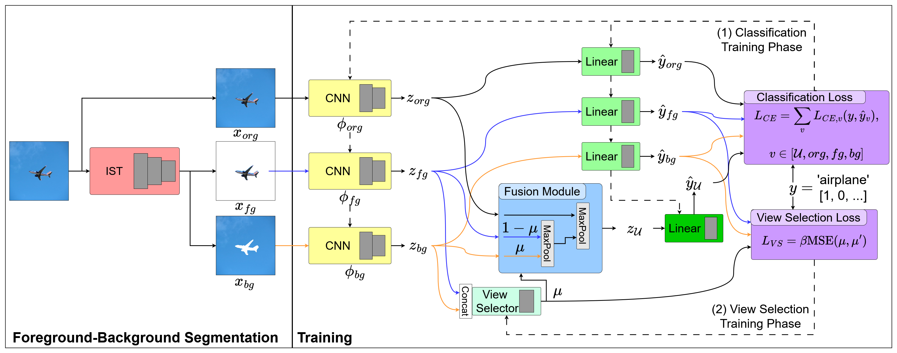
The diagram in 4.1 illustrates the high-level operations and flow of information in MOD. An IST segments an image into a foreground view and a background view. The MVCNN architecture converts the input original image view (org), foreground view (fg), and background view (bg) to view-specific feature vectors . Each feature extractor in MOD is implemented with a ResNet-18 He et al. (2016) model. Of note, however, is that the design of MOD is modular. Any model capable of processing an input image and outputting a feature vector is compatible. The fusion component in MOD uses view selection to combine information in into a fused feature vector , .
View Selector
A critical operation in the proposed fusion component is view selection. The view selector is implemented with a fully connected linear layer, represented by weight matrix and bias . The foreground and background view-specific feature vectors are concatenated and used as inputs to the view selector, , where represents the concatenation operation. The output is a view selection weight
| (4.1) |
where is the sigmoid function. The view selector is class-agnostic, it evaluates views based solely on the input features.
Fusion Component
The fusion component for MOD utilizes the view selection operation and the view features to selectively combine only the view-specific feature vectors with the most discriminative information. Specifically, the view selection weight weights and before max-pooling is performed over the weighted view-specific feature vectors. The resultant output is a weighted foreground-background feature vector
| (4.2) |
is a max-pooling operation along the feature dimension . The fusion component outputs a fused feature vector , using a final max-pooling operation over the original view-specific feature and
| (4.3) |
Prediction
MOD produces logits for each of the view-specific feature vectors and for the fused feature vector . Specifically, each view-specific feature vectors in is passed through a corresponding linear layer, parameterized by and , resulting in view-specific logits . The fused feature vector is passed through a fusion linear layer with weight matrix and bias , resulting in fused logits . In MOD, only is used for ID classification. As the fused logits learn from all correlated feature knowledge across views, they contain more ID class-relevant discriminative information for prediction. In contrast, each view-specific logits learns from (and predicts based on) limited feature information.
Training
MOD is trained using two losses in an alternating optimization paradigm which has been shown to be more effective for modular architectures compared to end-to-end learning Shalev-Shwartz et al. (2017); Glasmachers (2017); Pascal et al. (2021); Liu and Vicente (2023). The first loss is a cross-entropy (CE) loss and the second loss is a view selection loss .
sums the fused and view-specific classification CE losses. For each view , a view-specific CE loss is defined as
| (4.4) |
is the value of logit for class . is the one-hot vector of true labels for the sample. The fused CE loss is defined as
| (4.5) |
is the value of logit for class . The final loss is the total sum of fused and view-specific CE losses
| (4.6) |
The view selector component of learns to bias either the foreground or background view based on whichever has learned more discriminative features. A view selection loss is designed to enable this learning and operates on the classification mechanism of optimization. That is, given view-specific prediction logits for , low classification error on either represents learning of meaningful ID class-relevant discriminative feature information in the corresponding . thus optimizes the view selection weight towards whichever view (foreground or background) with lower classification error
| (4.7) | |||
and are Root Mean Square Errors (RMSE) on and with respect to the true label vector . MSE is the Mean Square Error. MOD uses two hyperparameters, which scales the difference between foreground and background error, and which regularizes for stability. The scaling factor sharpens the sigmoid function, optimizing view selection towards acting as a hard-gate and approximating a binary function McCulloch and Pitts (1943); Fernando et al. (2017); Serra et al. (2018). Note that does not rely on any external supervision and thus does not require any user design effort.
MOD is trained using two alternating optimization phases, one utilizing and the other using . First, in the classification phase, view selector parameters and are frozen while the remaining parameters in MOD are updated towards optimizing for a predetermined number of epochs. Then, in the view-selector phase, and are unfrozen while the remaining parameters are frozen. is used to optimized the view selector parameters for another predetermined number of epochs. Both phases are repeated until all losses converge or some maximum number of epochs has passed.
OOD Detection
A major advantage multi-view approaches have over equivalent single-view approaches is the additional correlated information within and across views. MOD exploits this advantage by using the proposed view selector to identify and emphasize discriminative features in either the foreground or background view. Through this technique, MOD learns a richer feature space compared to models that only use the original image. By using distance-based OOD detection methods, which specialize in leveraging the feature space to detect OOD samples without information loss (see Chapter 3), MOD can further exploit the multi-view advantage to achieve improved OOD detection performance. Two state-of-the-art distance-based OOD detection methods are considered: MD Lee et al. (2018); Kamoi and Kobayashi (2020) and KNN Sun et al. (2022). Both MD and KNN are post-hoc OOD detection methods Yang et al. (2022), i.e. they are computed after training has completed. One of the major benefits of this is that they are generalizable across model backbones and they do not interfere with ID classification performance. For details on MD and KNN, see Chapter 2 Section 2.3.2.
MD in MOD generally follows the original procedure, instead using the fused feature and fused logits to calculate the empirical class means and covariance matrix. Then, given test instance , MOD computes the test fused feature and the distance between and the nearest class-conditional Gaussian distribution. The resulting negative of the distance is the final MOD MD score
| (4.8) |
Similarly, KNN in MOD follows the standard KNN procedure, with used to compute for the feature space and distance calculations. The negative of the KNN distance if the final MOD KNN score
| (4.9) |
4.2.2. Experiments
To evaluate MOD, a range of near- and far-OOD datasets were considered for difficult ID domains Yang et al. (2022); Winkens et al. (2020). A broad set of state-of-the-art baselines was used for comparison to validate the contributions of MOD.
Datasets
CIFAR-10 and CIFAR-100 Krizhevsky et al. (2009), prevalent datasets in the OOD detection literature, were used for ID training and testing Yang et al. (2022). The semantic similarity across samples and classes characterizes them as challenging ID datasets. Far-OOD datasets included LSUN Yu et al. (2015), Textures Cimpoi et al. (2014), Places365 Zhou et al. (2017), and iNaturalist Van Horn et al. (2018). Near-OOD datasets were Tiny ImageNet Le and Yang (2015) and the other CIFAR dataset (i.e. CIFAR-10 near-OOD for CIFAR-100 ID, CIFAR-100 near-OOD for CIFAR-10 ID). Details for each dataset are provided below:
-
•
CIFAR-10 (C10) Krizhevsky et al. (2009) - A 10-class image classification dataset involving various objects, organisms, and scenes. It contains a total of 50,000 training images, 10,000 test images and 6,000 (5,000 training and 1,000 test) images per class.
-
•
CIFAR-100 (C100) Krizhevsky et al. (2009) - A similar image classification dataset with 100 classes. It has an identical number of training and test images with a similar train-test split (500 training and 100 testing per class). The classes and data in CIFAR-100 are distinct from those in CIFAR-10.
-
•
LSUN Yu et al. (2015) - A dataset containing images of objects and scenes. 10,000 images randomly sampled from its test set were used for the OOD dataset.
-
•
Textures (TXT) Cimpoi et al. (2014) - Images of different textures compiled into a dataset containing classes uniquely describing textures such as “polka dotted” and “bumpy”. The entire dataset of 5,640 images was used for the OOD dataset.
-
•
Places365 (Places) Zhou et al. (2017) - A dataset containing exclusively scenes instead of the traditional objects. 10,000 images sampled randomly from the test set were used for the OOD dataset.
- •
- •
A set of augmentations, including random crop, horizontal flip, and randomized rotation, was used as data transformations for each sample to improve feature learning Yang et al. (2022); Zhang et al. (2023); Tack et al. (2020). Each augmentation was generated once and applied identically to all three views of a given image. This ensures that data points maintain consistent perspectives across views when presented to the multi-view model . All images were of size 64 64.
Image Segmentation
A U2-Net Qin et al. (2020) was used for foreground-background segmentation. The selected implementation of U2-Net, called CarveKit (from https://github.com/OPHoperHPO/image-background-remove-tool), is an off-the-shelf tool. It was chosen to demonstrate the plug-and-play nature of segmentation and foreground-background multi-view OOD detection, and is open-source software. CarveKit was trained on the DUTS-TR Wang et al. (2017) dataset (which is a subset of the ImageNet detection dataset Deng et al. (2009)). All foreground and background views for all datasets were generated prior to experimentation.
Model Architecture
The feature extractors in MOD were implemented using ResNet-18 CNN models He et al. (2016). Feature dimension was set to 512.
Training Details: Detailed settings for training MOD are:
-
•
Batch Size = 64
-
•
Epochs = 600 or until convergence
-
•
Optimizer = Stochastic Gradient Descent
-
•
Learning Rate = 0.1
-
•
Nesterov Momentum = 0.9
-
•
Weight Decay = 5e-4
-
•
Cosine Annealing (across all epochs)
The implementation for MOD used PyTorch, SciPy, PyTorch Lightning, and FAISS Johnson et al. (2019). Computational resources utilized were four Nvidia RTX A6000 GPUs.
A grid search was performed over hyperparameters (50 to 300, intervals of 50) and (50 to 200, intervals of 50). Both were set to the optimal found value: was set to 200 and was set to 100. The classification phase training period was 5 epochs. The view-selector phase training period was 1 epoch. At test-time, the view selection weight was rounded to 0 or 1 to ensure no data leakage from the view which was not selected (embodying the proposed selection mechanism). Note that this enforces the effect of on sharpening the selection. During training, this must be used to ensure operations are differentiable during backpropagation from the view selection loss .
Baselines
A range of state-of-the-art OOD detection methods were selected as baselines: Maximum Softmax Probability (MSP) Hendrycks and Gimpel (2017), MD Lee et al. (2018), KNN Sun et al. (2022), Virtual Logit Matching (VIM) Wang et al. (2022a), ReAct Sun et al. (2021), Feature Normalization (FeatNorm) Yu et al. (2023), Generalized Entropy (GEN) Liu et al. (2023b), Logit Normalization (LogitNorm) Wei et al. (2022a), Contrasting Shifted Instances (CSI) Tack et al. (2020), and Class-Mixed Generation (CMG) Wang et al. (2022b). Note that for CMG, the CMG-e variant was used as it achieves the highest performance. Results for CSI and CMG were copied from the CMG paper Wang et al. (2022b) because it has an identical experimental setup but 1) CSI is slow to the point of being intractable (a single run of CSI takes more than a week to complete), and 2) CMG did not converge in attempted experiments. Baseline implementations used hyperparameters provided (or suggested) in the corresponding works.
Evaluation Metrics
For ID classification, Accuracy is used to measure performance. For OOD detection, Area Under the Receiver Operating Characteristic curve (AUC) is used to measure performance. All experimental results are the average of 5 random seeds.
4.2.3. Results
The results, detailed in 4.1 (for CIFAR-10) and 4.2 (for CIFAR-100), demonstrate that MOD improves OOD detection performance over single-view baselines. Note that MOD-MD refers to using MD with MOD and MOD-KNN refers to using KNN with MOD. Comparisons of average results here do not consider CSI and CMG-e as results are not available for all datasets. For far-OOD datasets, MOD outperforms all previous state-of-the-art baselines on average in both the CIFAR-10 and CIFAR-100 experimental settings. MOD-MD improves on the best baseline AUC by 2.63% with CIFAR-10 and by 18.59% with CIFAR-100. With CIFAR-10, both MOD-MD and MOD-KNN outperform baselines across all far-OOD datasets except LSUN, in which MOD-KNN underperforms by only 0.33%. With CIFAR-100, both MOD-MD and MOD-KNN outperform all baselines across the far-OOD datasets. For near-OOD datasets, all baselines are again outperformed on average by MOD-MD and MOD-KNN. With CIFAR-10, MOD-MD improves the maximum AUC by 1.04% on average and by 3.34% in CIFAR-100. MOD-KNN improves the maximum AUC by 0.84% on average and by 2.9% in CIFAR-100. In Tiny ImageNet, MOD only underperforms compared to CSI by 1.21%. With CIFAR-100, MOD-MD improves the maximum AUC by 4.18% on average and by 2.99% in Tiny ImageNet. MOD-KNN improves the maximum AUC by 4.14% on average and by 2.59% in Tiny ImageNet. Similar to the CIFAR-10 setting, MOD only underperforms MD in CIFAR-10 by 1.11%. Overall, MOD improves over state-of-the-art baselines in OOD detection by 3.30% for CIFAR-10 and by 11.55% for CIFAR-100 (both with MOD-MD, but MOD-KNN only differs by 0.09% and 0.35% respectively).
| ID | OOD | |||||||||
| C10 | C100* | LSUN | TXT | Places | iNat | TIN* | Far | Near | Avg. | |
| MSP | 94.73±0.11 | 87.05±0.51 | 90.45±0.42 | 92.01±0.58 | 89.88±0.55 | 90.20±0.73 | 87.98±0.34 | 90.63 | 87.51 | 89.59 |
| KNN | 94.73±0.11 | 89.55±0.22 | 92.29±0.15 | 94.24±0.40 | 91.46±0.25 | 91.73±0.62 | 90.15±0.14 | 92.43 | 89.85 | 91.57 |
| MD | 95.37±0.13 | 88.85±0.21 | 90.98±0.25 | 95.67±0.23 | 90.37±0.26 | 91.85±0.69 | 89.08±0.18 | 92.22 | 88.96 | 91.13 |
| ViM | 94.73±0.11 | 86.39±1.72 | 89.26±2.05 | 96.05±1.04 | 88.05±1.96 | 89.96±1.27 | 87.26±1.56 | 90.83 | 86.82 | 89.49 |
| React | 94.73±0.11 | 84.82±1.39 | 91.47±0.55 | 90.67±0.89 | 89.57±1.11 | 87.94±2.30 | 86.76±0.98 | 89.91 | 85.79 | 88.54 |
| FeatNorm | 94.73±0.11 | 88.89±0.66 | 91.93±1.15 | 94.61±0.23 | 95.37±0.41 | 94.14±1.31 | 90.16±0.81 | 94.01 | 89.53 | 92.52 |
| GEN | 94.73±0.11 | 87.19±0.58 | 91.35±0.53 | 92.53±0.79 | 90.82±0.65 | 90.97±0.90 | 88.56±0.40 | 91.42 | 87.87 | 90.24 |
| LogitNorm | 94.56±0.22 | 90.80±0.82 | 95.06±0.59 | 94.53±1.07 | 95.66±0.42 | 93.18±1.05 | 91.80±0.65 | 94.61 | 91.30 | 93.51 |
| CSI | / | 92.2±0.1 | 97.7±0.4 | / | / | / | 97.6±0.3 | / | 94.90 | / |
| CMG-e | / | 89.3±0.4 | 97.7±0.9 | / | / | / | 95.2±2.7 | / | 92.25 | / |
| MOD-MD | 95.37±0.29 | 95.54±5.39 | 96.02±2.97 | 98.42±1.12 | 95.90±3.04 | 98.63±0.57 | 96.34±2.60 | 97.24 | 95.94 | 96.81 |
| MOD-KNN | 95.37±0.29 | 95.10±3.73 | 97.37±1.13 | 97.56±1.17 | 96.48±1.37 | 97.41±1.14 | 96.39±0.91 | 97.21 | 95.74 | 96.72 |
Due to using post-hoc OOD detection methods, MOD preserves ID classification performance. Crucially, MOD achieves competitive ID classification and state-of-the-art OOD detection performance with both MD and KNN OOD scores across both near- and far-OOD datasets. As mentioned, for CIFAR-10, the difference between average AUC for MOD-MD and MOD-KNN is merely 0.09%. This gap is small for CIFAR-100 too, only 0.35%. This suggests that MOD successfully leverages the complementary feature information in multiple views to learn feature spaces robust to both MD (statistical distance metric) and KNN (non-parametric distance metric). Furthermore, the results indicate that MOD learns comprehensive ID class-relevant discriminative features, leading to not only high classification accuracy but improved OOD detection. This is easily visible in the performance of MOD on far-OOD datasets, where features are significantly different from those in ID data (18.59% improvement for MOD-MD in CIFAR-100). The improved AUC implies that MOD clearly identifies and detects the spurious features in far-OOD views. For near-OOD data, this improved AUC reflects a similar narrative as improving OOD detection performance in near-OOD domains requires learning of ID discriminative features.
| ID | OOD | |||||||||
| C100 | C10* | LSUN | TXT | Places | iNat | TIN* | Far | Near | Avg. | |
| MSP | 77.66±0.43 | 78.99±0.20 | 74.44±0.53 | 78.08±0.96 | 73.74±0.55 | 80.24±0.89 | 80.74±0.26 | 76.63 | 79.87 | 77.71 |
| KNN | 77.66±0.43 | 77.42±0.36 | 74.98±0.58 | 79.11±0.45 | 74.42±0.33 | 82.48±0.76 | 81.67±0.16 | 77.75 | 79.54 | 78.35 |
| MD | 78.90±0.50 | 83.79±3.10 | 76.71±0.24 | 88.30±0.66 | 75.08±0.50 | 84.69±0.60 | 82.10±0.18 | 81.20 | 82.94 | 81.78 |
| ViM | 77.66±0.43 | 71.71±0.94 | 70.04±1.76 | 83.13±1.20 | 73.15±0.76 | 81.56±1.70 | 76.07±0.58 | 76.97 | 73.88 | 75.94 |
| React | 77.66±0.43 | 78.33±1.36 | 72.34±2.54 | 82.41±2.28 | 76.91±3.12 | 79.99±1.78 | 79.00±0.44 | 77.91 | 78.66 | 78.16 |
| FeatNorm | 77.66±0.43 | 59.81±1.53 | 50.51±2.33 | 74.78±1.98 | 57.25±1.64 | 64.65±4.77 | 52.05±2.58 | 61.80 | 55.93 | 59.84 |
| GEN | 77.66±0.43 | 80.71±0.47 | 73.96±0.63 | 79.04±1.35 | 73.46±0.89 | 79.48±1.33 | 80.99±0.37 | 76.49 | 80.85 | 77.94 |
| LogitNorm | 75.92±0.55 | 74.68±0.78 | 74.56±0.43 | 75.71±1.98 | 78.54±0.45 | 84.03±1.20 | 80.81±0.31 | 78.21 | 77.75 | 78.06 |
| CSI | / | 78.2±0.2 | 80.9±0.5 | / | / | / | 79.4±0.2 | / | 78.80 | / |
| CMG-e | / | 71.5±2.9 | 88.3±3.6 | / | / | / | 88.2±2.0 | / | 79.85 | / |
| MOD-MD | 78.72±0.34 | 81.66±6.28 | 96.64±2.49 | 95.20±1.64 | 97.40±1.27 | 98.53±0.84 | 91.19±4.61 | 96.44 | 87.12 | 93.33 |
| MOD-KNN | 78.72±0.34 | 82.68±5.64 | 96.51±2.38 | 94.49±1.91 | 96.86±1.61 | 98.28±1.23 | 90.79±4.09 | 95.93 | 87.08 | 92.98 |
Ablation Study
To analyze the performance contributions of each view, a set of ablation experiments were performed over all combinations of original (Org), foreground (Fg) and background (Bg) views. Single-view experiments (i.e. Org-only, Fg-only, and Bg-only) used only the respective CNN feature extraction backbone and linear prediction head for testing. View-combination experiments (i.e. Org-Fg, Org-Bg, Fg-Bg) were evaluated by max-pooling the corresponding two view feature vectors and adding a separate linear prediction head for the combination during training and testing. The all-view experiments used naive combinations of all views, either through max-pooling of all view features (i.e. Org-Fg-Bg) or through ensembling (i.e. Ensemble), of which mean, max, and min ensembling were considered.
| ID | OOD | |||||||||
|---|---|---|---|---|---|---|---|---|---|---|
| C100 | C10* | LSUN | TXT | Places | iNat | TIN* | Far | Near | Avg. | |
| Org-only | 77.63 | 79.45 | 82.01 | 73.04 | 74.82 | 76.76 | 74.23 | 76.66 | 76.84 | 76.72 |
| Fg-only | 72.06 | 75.95 | 83.05 | 77.67 | 83.06 | 83.79 | 80.50 | 81.89 | 78.23 | 80.67 |
| Bg-only | 20.49 | 58.18 | 90.51 | 96.21 | 91.94 | 94.96 | 95.82 | 93.41 | 77.00 | 87.94 |
| Org-Fg | 77.98 | 79.52 | 93.92 | 86.83 | 94.62 | 96.10 | 84.52 | 92.87 | 82.02 | 89.25 |
| Org-Bg | 76.90 | 88.54 | 90.91 | 93.75 | 86.13 | 89.97 | 90.28 | 90.19 | 89.37 | 89.93 |
| Fg-Bg | 71.76 | 86.55 | 90.35 | 95.99 | 89.12 | 91.61 | 94.58 | 91.77 | 90.57 | 91.37 |
| Org-Fg-Bg | 77.94 | 79.13 | 83.66 | 77.45 | 77.57 | 78.59 | 71.05 | 79.29 | 75.09 | 77.91 |
| Ensemble (Mean) | 77.01 | 79.90 | 88.50 | 84.37 | 85.78 | 87.69 | 85.50 | 86.59 | 82.70 | 85.29 |
| Ensemble (Max) | 75.84 | 78.48 | 88.66 | 79.89 | 83.21 | 85.48 | 81.26 | 84.31 | 79.87 | 82.83 |
| Ensemble (Min) | 67.43 | 77.50 | 86.34 | 83.84 | 84.52 | 85.65 | 85.11 | 85.09 | 81.31 | 83.83 |
| MOD | 78.72 | 81.66 | 96.64 | 95.20 | 97.40 | 98.53 | 91.19 | 96.94 | 86.43 | 93.33 |
The results of the study are presented in 4.3. Overall, MOD improves both ID classification and OOD detection performance over all other combinations of views and naive fusion methods. As expected, Org-only achieves high ID classification performance, but MOD still improves over it by 1.09%. Surprisingly, Bg-only achieves respectable OOD detection performance, even outperforming all other ablation settings and MOD in Textures and Tiny ImageNet. However, the lack of foreground information significantly reduces the ID classification performance (a difference of 58.23% compared to MOD) and fails to outperform MOD in OOD detection on average (a difference of 5.39%). Combining views generally improves performance, with Org-Fg, Org-Bg, and Fg-Bg all outperforming single-view experiments in overall average OOD detection. It is observed that the presence of the Bg view improves OOD detection, specifically near-OOD detection. Org-Bg and Fg-Bg significantly outperform other view combinations, with Fg-Bg achieving the highest near-OOD detection performance, 4.14% over MOD. However, following previous observations, the Bg view degrades ID classification, with Org-Bg decreasing accuracy by 1.08% and Fg-Bg decreasing accuracy by 6.22% (both with respect to Org-Fg). MOD also significantly improves on the baseline fusion Org-Fg-Bg which does not intelligently consider the semantic contributions of views. Furthermore, Org-Fg-Bg does not use view-specific losses in training and performs worse in ID classification accuracy, by 0.78%, and significantly worse in OOD detection, by 15.42% on average. This introduces a significant contributing notion regarding multi-view OOD detection: simply including more views is not necessarily sufficient to improve performance, some form of intelligent fusion of view information is necessary. Furthermore, this verifies the notion that training each view to extract semantically-meaningful discriminative features critically impacts model performance in handling both ID and OOD data.
For ensembling, ID view-specific prediction logits , , are converted into probabilities via softmax and then combined across views (averaged for mean, max and min for their respective methods), resulting in a final aggregate prediction probability distribution. A similar procedure is used for OOD scores, with OOD scores calculated for each view feature vector , , and combined across views, resulting in a final aggregate OOD score. It is clear that ensembling does not outperform the discriminative feature-aware view selection used in MOD fusion. This follows multi-view classification literature: it has been shown that feature fusion significantly outperforms ensembling of prediction scores Seeland and Mäder (2021).
MOD performs the best in ID classification, average OOD detection, and far-OOD detection, all across a range of OOD datasets. This, along with the aforementioned observations across view combinations, supports the conclusion that principled fusion is critical to extraction and learning of discriminative features. The informed view selection fusion mechanism proposed in MOD enables this discriminative feature learning and thus improves OOD detection. However, MOD underperforms in near-OOD detection. It has already been observed that consideration of the Bg view improves near-OOD detection performance. It is hypothesized that this is because the background feature extraction backbone tends to reject unfamiliar, spurious features. Observations on background predictions showed a tendency towards more uniform confidence distributions for all samples with few discriminative features in the background view. If MOD biased the foreground view over the background view during selection, it would not have access to the Bg view information for near-OOD detection, leading to decreased performance.
| Precision | Recall | F-Score | Support | |
|---|---|---|---|---|
| Foreground | 80.83 | 97.00 | 88.18 | 100 |
| Background | 96.25 | 77.00 | 85.56 | 100 |
| Accuracy | 87.00 | 200 | ||
View Selector Evaluation
To empirically verify the above hypothesis on the selection behavior of MOD, another ablation experiment was conducted investigating the view selector ability to determine which foreground or background view contains ID discriminative features. Two subsets of CIFAR-100 testing data were manually curated, one with discriminative features in the foreground view (100 samples) and the other in the background view (100 samples). To be specific, view samples with ratio of non-masked pixels to total pixels above a certain threshold (0.8 for foreground and 0.6 for background) were first collected. Then, these candidate samples were manually verified for sufficient class representation in the view. MOD view selection weights were then generated for the combined subsets.
| ID | OOD | ||||||
|---|---|---|---|---|---|---|---|
| C-100 | C-10* | LSUN | TXT | Places | iNat | TIN* | |
| Frequency | 0.961 | 0.816 | 0.799 | 0.408 | 0.779 | 0.675 | 0.555 |
The resulting classification metrics are presented in 4.4. In general, the view selector performs very well, accurately identifying foreground and background views with discriminative feature presence. Notably, foreground views are identified more consistently than background views, with an F-Score of 88.18%. The view selector struggles more with background views, achieving an F-Score of 85.56%. This discrepancy is due to a greater presence of discriminative features in the foreground view for the ID training dataset. These results confirm that 1) the view selector identifies class-relevant discriminative features when evaluating views and only fuses views that inform the learned ID class prediction, and 2) MOD does bias the foreground view during selection as a consequence of the underlying discriminative feature distribution in the ID training data. However, this bias is only present in the ID testing and near-OOD datasets which, by definition, strongly resemble the ID training data distribution. Analysis of the view-selection frequency (see 4.5, presents frequency of foreground view selection) for the ID testing and near-OOD datasets shows that foreground selection was very high: 96.10% for CIFAR-100 ID testing data and 81.60% for CIFAR-10 near-OOD data. However, this does not imply that the view selector failed to learn discriminative features in views. Overall classification performance in the curated dataset (4.4) remained high for both views and the low foreground-selection frequency for the Textures OOD dataset (only 40.80%), a dataset primarily containing spurious background features, indicates learned knowledge of discriminative feature presence.
A qualitative study further supports the functionality of the view selector mechanism proposed in MOD. As mentioned previously (see Section 4.2.1), the view selector is trained with both the foreground and the background view feature vectors and is optimized for selecting the view with higher classification accuracy via . This inherently favors views that have extracted discriminative features representative of the target class and simultaneously rejects views containing unhelpful, noisy, or otherwise spurious features. For CIFAR-100 data with clear semantic features present in the foreground view (e.g. “dog” class), the view selector chooses the foreground view by outputting . For samples with discriminative features primarily in the background view (e.g. “mountain” class), the view selector chooses the background view with . For a sample “dog” image, the maximum predicted (softmax) probability for the foreground view was 0.847 compared to 0.005 for the background view. For a sample “mountain” image, the maximum predicted (softmax) probability for the foreground view was only 0.404 compared to 0.886 for the background view. In both cases, these selections correspond to view confidence distributions predicting the correct class, linking the ID class-relevant discriminative features with the model classification performance.
Takeaways
The primary observation from MOD is that foreground-background segmented views can improve OOD detection, both in near- and far-OOD domains. On far-OOD datasets, the selective inclusion of either the foreground or background view features assists in separating the clear spurious features, resulting in improved identification of OOD samples. On near-OOD datasets, where OOD features are much closer to ID features, MOD leverages the foreground and background views to separately analyze and distinguish OOD features from discriminative ID features. This implies that MOD learns class-relevant information for ID data via the multiple foreground-background segmented views.
However, MOD has critical limitations. The view selector was observed to be unstable after training: learned view selection weights hovered around 0.5, resulting in large variance in which view was selected. This instability originates in the view selection loss . Specifically, RMSE is insensitive to changes in the foreground and background view prediction errors ( and ). Major differences between the view-specific predictions and the one-hot true label vectors are required for RMSE to deviate from 0, biasing towards 0.5 after the sigmoid function is applied. This problem is exacerbated as the foreground and background models, (, , and , , ) learn. The view-specific prediction logits ( and ) converge towards the true label vectors and both and approach 0 (and thus approaches 0.5).
Importantly, MOD is also flawed in that selection eliminates any potential benefit from leveraging discriminative or contextual feature information which may be in the view that was not selected. By selecting only one view, MOD may ignore significant information in the sample with no valid supporting assumption assuring preservation of performance (let alone improvement). Furthermore, MOD is limited in its evaluation. There exist many other large-scale datasets that better approximate realistic, open-world settings for evaluation.
4.3. Ensembles of Views for OOD Detection
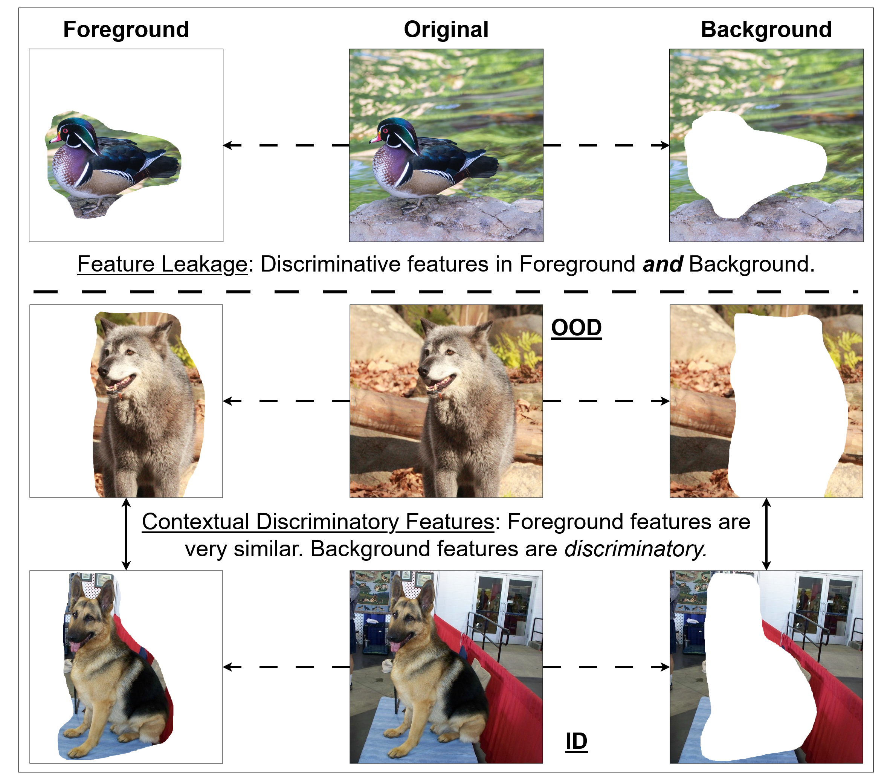
MOD assumes that ID class-relevant discriminative features are exclusively in either the foreground or the background view. It selects one of these views using a view selector before combining it with the original image for OOD detection. However, this assumption is rarely valid. 4.2 gives two examples where MOD fails to capture the entirety of discriminative features in either of the segmented view. In the first row, distinguishing components of the “duck” class are primarily in the foreground view but several important components are also in the background (e.g. the water and the reflections). In the lower section (second and third rows), the ID object discriminative features are all in the foreground views but important contextual features are in the background views. Domestic features in the background help contextualize the ID object of “dog” in the foreground against OOD object “wolf” which appears similar in the foreground but contains significantly different natural features in the background. Considering all views in multi-view OOD detection can be beneficial.
The proposed method, Multi-view Ensemble for OOD detection (MEO), investigates this approach by generating features for all possible combinations of views. This set of view combinations (including the views themselves) is systematically evaluated for ID accuracy and OOD detection performance. Specifically, MEO extracts view-specific features (“single-view features”), features fused from pairs of single-view features (“cross-view features”), and a cumulative feature resulting from the fusion of all single-view features (“comprehensive fused feature”). Each of these individual and fused features are learned end-to-end through an aggregate loss and used at test time for ID class prediction and feature-based OOD detection. All possible ensembles of individual and fused features are evaluated for contribution towards learning discriminative features and improving OOD detection.
4.3.1. Proposed Method
MEO resembles MOD in that an MVCNN is used for the FgBg multi-view model backbone. Each feature extractor (parameterized by ) outputs a -dimensional feature vector from input view , . The multi-view feature extractors give with corresponding classification parameters and subsequently outputting . The fusion component in MEO differs significantly from MOD, instead constructing the single-view features, cross-view features, and comprehensive fused feature for ensembling.
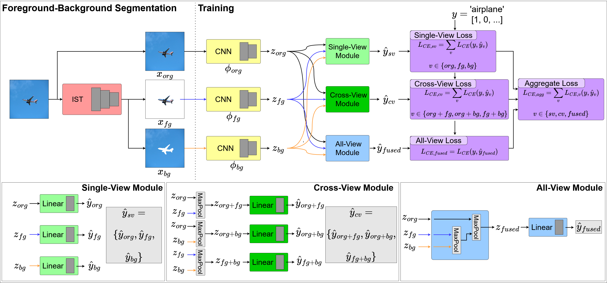
The flow of information for MEO is illustrated in 4.3. The IST segments the original image view (org) into a foreground view (fg) and a background view (bg). The MVCNN backbone generates features and logits . In MEO, the fusion component is composed of three modules.
Fusion Component
The first module in MEO is the Single-View Module which does not perform fusion, instead simply returning and (i.e. a no-op).
The second module is the Cross-View Module, in which each possible pair of view-specific feature vectors, , is combined via a max-pooling operation. Given any two different view-specific feature vectors and , the cross-view feature vector is
| (4.10) |
The Cross-View Module in outputs three cross-view feature vectors , , , each of which is passed to a respective linear layer with , , and , , . This also results in cross-view predicted logits , , .
The third and final module is the All-View Module. Consecutive max-pooling operations are used to combine all view-specific feature vectors into a single, fused feature vector containing comprehensive information across all views
| (4.11) |
is similarly passed to a respective linear layer , , resulting in .
In summary, the MEO fusion component utilizes the Single-View, Cross-View, and All-View Modules to output a set of feature vectors and prediction logits . For convenience, feature sets are further delineated according to view-specific features and cross-view features .
Training
The MEO model is learned end-to-end using a view-aggregate loss . The loss aggregates the classification losses of all single-view, cross-view, and comprehensive fused feature-based predictions. At no point is any component or set of parameters in MEO frozen while other parameters are trained.
A one-hot true label vector is used to train MEO via through each set of view features. Specifically, a view-specific CE loss is defined for each
| (4.12) |
is the logit value of for class .
Cross-views are accounted for through CE loss
| (4.13) |
The comprehensive fused information is accounted for through CE loss
| (4.14) |
These CE losses are combined in the final aggregate CE loss
| (4.15) |
OOD Detection
Following from MOD (see Section 4.2.1), MEO leverages distance-based OOD detection methods to exploit the rich feature space learned from the use of foreground-background segmented views. MEO is compatible with all distance-based (and otherwise post-hoc) OOD detection methods that operate on features and/or logits. However, this work only presents results for MD.
The implementation of MD for MEO is very similar to that in MOD. However, given that MEO uses a combination of view-specific features, cross-view features, and a comprehensive fused feature, multiple empirical class means and covariance matrices must be defined. MEO calculates empirical class means and covariance matrices for each view feature . A test sample is processed by MEO into feature vector . Distances are computed between and the nearest class-conditional Gaussian distribution for view . The negative distance is the OOD score for view
| (4.16) |
Single-, Cross-, and Comprehensive Fused View Ensembling
All possible combinations of MEO feature vectors , , and prediction logits , , and are considered during test-time evaluation. An ensemble is defined as the set of members composed of views, . An ensemble outputs prediction logits and MD OOD scores for each member .
Ensemble ID Classification
MEO combines all ensemble ’s member prediction through element-wise product of all softmax logits
| (4.17) |
Note that is the final prediction vector for ensemble resulting from the combination of all member prediction distributions.
Ensemble OOD Detection
The ensemble OOD score is the mean across all member MD OOD scores for test sample
| (4.18) |
Note that is the final OOD score for ensemble .
Cross-view features and predictions semantically represent more than their separate components. For example, is not identical to the ensemble . Each view (single-view, cross-view, or comprehensive fused) is trained using a distinct prediction linear layer on top of being a unique fusion of view-specific components. Thus, cross-view feature vectors contain unique discriminative feature information relevant to the ID class.
4.3.2. Experiments
The experimental settings from MOD are used for MEO, with minor deviations (noted where appropriate).
Datasets
CIFAR-10 and CIFAR-100 Krizhevsky et al. (2009) are used as training and ID testing datasets. SVHN Yuval (2011) is added as a far-OOD dataset. ImageNet-30 Russakovsky et al. (2015) is also added as a training and ID testing dataset. OOD datasets for ImageNet-30 follow previous experimental work Li et al. (2023a); Yang et al. (2022) and include CIFAR-10, CIFAR-100, SVHN, LSUN, Textures, Places365, iNaturalist, and Tiny ImageNet. ImageNet-30 is not used as an OOD dataset for the CIFAR ID experimental settings because it has significantly higher resolution and image size, making the data domains incomparable.
Baselines
For MEO experiments, additional state-of-the-art baseline methods were considered. Specifically, Optimal Parameter and Neuron Pruning (OPNP) Chen et al. (2024a), Orthogonal Gradient Projection (GradOrth) Behpour et al. (2024), and Adaptive Temperatue Scaling (ATS) Krumpl et al. (2024) were included based on their recent results. Results for these additional baselines are copied from respective papers, as their experimental setups are the same and code was either not available or failed to converge.
4.3.3. Results
| ID | OOD | |||
|---|---|---|---|---|
| CIFAR-10 | CIFAR-100 | Tiny ImageNet | Average | |
| MSP | 94.73±0.11 | 87.05±0.51 | 87.98±0.34 | 87.51 |
| KNN | 94.73±0.11 | 89.55±0.22 | 90.15±0.14 | 89.85 |
| MD | 94.73±0.11 | 83.33±0.72 | 83.68±0.68 | 83.51 |
| ViM | 94.73±0.11 | 86.39±1.72 | 87.26±1.56 | 86.82 |
| React | 94.73±0.11 | 84.82±1.39 | 86.76±0.98 | 85.79 |
| FeatNorm | 94.73±0.11 | 88.89±0.66 | 90.16±0.81 | 89.53 |
| GEN | 94.73±0.11 | 87.19±0.58 | 88.56±0.40 | 87.87 |
| LogitNorm | 94.56±0.22 | 90.80±0.82 | 91.80±0.65 | 91.30 |
| CSI | / | 92.2 | 97.6 | 94.90 |
| CMG-e | / | 89.3 | 95.2 | 92.25 |
| MOD-MD | 95.37±0.29 | 95.54±5.39 | 96.34±2.60 | 95.94 |
| MEO-MD | ||||
| f+O+F+OB | 95.08±0.40 | 99.28±0.64 | 98.60±1.56 | 98.94 |
| f+O+F+OF+OB | 94.95±0.34 | 99.00±0.52 | 98.76±1.45 | 98.88 |
| f+F+B+OB+FB | 95.24±0.39 | 99.09±0.64 | 98.50±1.59 | 98.80 |
| OOD | ||||||
| SVHN | LSUN | Textures | Places365 | iNaturalist | Average | |
| MSP | 93.39±2.30 | 90.45±0.42 | 92.01±0.58 | 89.88±0.55 | 90.20±0.73 | 91.18 |
| KNN | 95.45±1.38 | 92.29±0.15 | 94.24±0.40 | 91.46±0.25 | 91.73±0.62 | 93.03 |
| MD | 99.10±0.46 | 85.48±0.74 | 96.81±0.32 | 82.77±0.80 | 87.31±1.57 | 90.30 |
| ViM | 97.57±2.24 | 89.26±2.05 | 96.05±1.04 | 88.05±1.96 | 89.96±1.27 | 92.18 |
| React | 93.80±1.75 | 91.47±0.55 | 90.67±0.89 | 89.57±1.11 | 87.94±2.30 | 90.69 |
| FeatNorm | 99.07±0.40 | 91.93±1.15 | 94.61±0.23 | 95.37±0.41 | 94.14±1.31 | 95.03 |
| GEN | 94.15±2.17 | 91.35 ±0.53 | 92.53±0.79 | 90.82±0.65 | 90.97±0.90 | 91.96 |
| LogitNorm | 97.61±0.92 | 95.06±0.59 | 94.53±1.07 | 95.66±0.42 | 93.18±1.05 | 95.21 |
| OPNP | 99.90 | / | 98.20 | 97.64 | / | / |
| GradOrth | 98.72 | / | 94.77 | 91.64 | / | / |
| MOD-MD | / | 96.02±2.97 | 98.42±1.12 | 95.90±3.04 | 98.63±0.57 | 97.24 |
| MEO-MD | ||||||
| f+O+F+OB | 97.67±2.61 | 99.29±0.53 | 99.87±0.10 | 99.62±0.30 | 99.97±0.02 | 99.29 |
| f+O+F+OF+OB | 98.34±1.22 | 99.40±0.43 | 99.90±0.09 | 99.66±0.22 | 99.97±0.02 | 99.45 |
| f+F+B+OB+FB | 97.74±2.17 | 99.19±0.56 | 99.86±0.10 | 99.49±0.33 | 99.96±0.03 | 99.25 |
4.6 (near-OOD datasets) and 4.7 (far-OOD datasets) show results for the MEO experiments on CIFAR-10. Only the top-3 MEO ensembles are presented in this section. Previous state-of-the-art baselines are unable to outperform MEO in OOD detection. In the near-OOD domain (4.6), the top MEO ensembles outperform all baselines. In particular, the ensemble improves the average AUC by 4.04%, AUC of CIFAR-100 by 7.08%, and AUC of Tiny ImageNet by 1.00%. Across the top-3 ensembles, performance is consistent. Variance of AUC is only 0.02% for CIFAR-100, 0.02% for Tiny ImageNet, and 0.005% on average. MEO ensembles also outperform MOD, validating the idea of utilizing feature information in all views for OOD detection instead of selectively eliminating views. The MEO ensemble improves the average CIFAR-10 near-OOD AUC by 3.00%, from 95.94% to 98.94%, a significant margin. In the far-OOD domain (4.7), MEO ensembles again improve AUC both on average (4.24%) and across individual datasets (except SVHN), where the ensemble underperforms by only 1.56% (and still achieves a high AUC of 98.34%). On the challenging iNaturalist far-OOD dataset, MEO ensembles perform extremely well, each improving AUC by 5.81-5.82% over the nearest state-of-the-art baseline. Variance across the top-3 MEO ensembles is again low, only 0.01% for average OOD detection performance. Similar to the near-OOD CIFAR-10 datasets, MEO ensembles improve on MOD, improving average OOD detection by 2.21% and demonstrating a particularly large increase in Places365 of 3.76%. ID classification is also unaffected by the multi-view paradigm. All 3 top MEO ensembles improve ID classification accuracy (maximum improvement of 0.68%), demonstrating that MEO is able to learn ID class-relevant discriminative features effective for OOD detection while maintaining ID classification functionality.
| ID | OOD | |||
|---|---|---|---|---|
| CIFAR-100 | CIFAR-10 | Tiny ImageNet | Average | |
| MSP | 77.66±0.43 | 78.99±0.20 | 80.74±0.26 | 79.87 |
| KNN | 77.66±0.43 | 77.42±0.36 | 81.67±0.16 | 79.54 |
| MD | 77.66±0.43 | 77.71±0.78 | 75.26±1.21 | 76.49 |
| ViM | 77.66±0.43 | 71.71±0.94 | 76.06±0.58 | 73.88 |
| ReAct | 77.66±0.43 | 78.33±1.36 | 79.00±0.44 | 78.66 |
| FeatNorm | 77.66±0.43 | 59.81±1.53 | 52.05±2.58 | 55.93 |
| GEN | 77.66±0.43 | 80.71±0.47 | 80.99±0.37 | 80.85 |
| LogitNorm | 75.92±0.55 | 74.68±0.78 | 80.81±0.31 | 77.75 |
| CSI | / | 78.2 | 79.4 | 78.80 |
| CMG-e | / | 71.5 | 88.2 | 79.85 |
| MOD-MD | 78.72±0.34 | 81.66±6.28 | 91.19±4.61 | 87.12 |
| MEO-MD | ||||
| f+O+F+OB | 78.07±0.11 | 83.59±2.01 | 95.45±5.08 | 89.52 |
| f+O+F+OF+OB | 77.90±0.18 | 83.64±2.12 | 97.71±3.51 | 90.67 |
| f+F+B+OB+FB | 78.63±0.23 | 83.05±1.48 | 95.31±4.48 | 89.18 |
| OOD | ||||||
| SVHN | LSUN | Textures | Places365 | iNaturalist | Avg. | |
| MSP | 84.47±2.81 | 74.44±0.53 | 78.08±0.96 | 73.74±0.55 | 80.24±0.89 | 78.20 |
| KNN | 85.43±2.89 | 74.98±0.58 | 79.11±0.45 | 74.42±0.33 | 82.48±0.76 | 79.28 |
| MD | 93.80±3.03 | 68.44±1.56 | 92.92±0.62 | 69.14±1.38 | 82.91±1.50 | 81.44 |
| ViM | 85.56±8.04 | 70.04±1.76 | 83.13±1.20 | 73.15±0.76 | 81.56±1.70 | 78.69 |
| ReAct | 88.04±4.11 | 72.34±2.54 | 82.41±2.28 | 76.91±3.12 | 79.99±1.78 | 79.94 |
| FeatNorm | 91.74±5.86 | 50.51±2.33 | 74.78±1.98 | 57.25±1.64 | 64.65±4.77 | 67.79 |
| GEN | 85.64±3.88 | 73.96±0.63 | 79.04±1.35 | 73.46±0.89 | 79.48±1.33 | 78.32 |
| LogitNorm | 88.52±2.11 | 74.56±0.43 | 75.71±1.98 | 78.54±0.45 | 84.03±1.20 | 80.27 |
| OPNP | 96.68 | / | 96.38 | 95.07 | / | / |
| GradOrth | 93.47 | / | 92.62 | 89.03 | / | / |
| ATS | 95.13 | 94.15 | 91.74 | 67.20 | / | / |
| MOD-MD | / | 96.64±2.49 | 95.20±1.64 | 97.40±1.27 | 98.53±0.84 | 96.44 |
| MEO-MD | ||||||
| f+O+F+OB | 92.02±5.53 | 97.66±3.53 | 97.78±2.79 | 98.77±1.49 | 99.61±0.55 | 97.17 |
| f+O+F+OF+OB | 92.23±5.37 | 98.73±2.12 | 98.98±1.58 | 99.38±0.79 | 99.87±0.20 | 97.84 |
| f+F+B+OB+FB | 91.44±5.19 | 97.57±3.18 | 97.68±2.44 | 98.58±1.60 | 99.51±0.71 | 96.95 |
For the CIFAR-100 experiments (see 4.8 and 4.9), MEO similarly outperforms baselines and improves on MOD. For near-OOD datasets (4.8), the top-3 ensembles significantly improve OOD detection performance. In particular, the ensemble improves CIFAR-10 AUC by 2.93%, Tiny ImageNet AUC by 9.51%, and average AUC by 9.82% over the best baselines. With respect to MOD, MEO ensembles repeatedly demonstrate the value of including all views in learning and OOD detection. CIFAR-10 AUC increases by 1.98% from MOD to MEO , Tiny ImageNet AUC increases by 6.52%, and average AUC increases by 3.54%. Variance across ensembles is 0.11% for CIFAR-10, 1.81% for Tiny ImageNet, and 0.61% for average near-OOD AUC. These values are larger than for CIFAR-10 but remain low. It is again observed that using multi-view methods for OOD detection, especially considering all views as in MEO, significantly improves near-OOD detection in challenging domains such as CIFAR-100. The increase from 80.85% with GEN to 90.67% with MEO is significant. For far-OOD datasets (4.9), MEO ensembles continue to outperform baselines and MOD. Across the far-OOD datasets, the average AUC is increased by 16.40% with the ensemble. All of the top-3 MEO ensembles outperform the baselines in each far-OOD dataset except SVHN. In iNaturalist, AUC increases by 15.84% over the nearest baseline LogitNorm. The average AUC for MEO outperforms MOD by 1.40%. The variance across MEO ensembles remains relatively low, with an average AUC variance of 0.21%. ID classification is again observed to be unaffected by inclusion of multiple views. In fact, MEO improves ID classification accuracy by 0.97% over the baselines and is comparable to MOD (a difference of only 0.09%).
| ID | OOD | |||||
|---|---|---|---|---|---|---|
| ImageNet-30 | CIFAR-100 | CIFAR-10 | iNaturalist | Tiny ImageNet | Average | |
| MSP | 80.91±0.72 | 76.69±2.15 | 77.95±1.49 | 76.48±1.31 | 80.03±1.07 | 77.79 |
| KNN | 80.91±0.72 | 98.33±0.43 | 97.67±0.64 | 84.88±1.08 | 89.88±2.56 | 92.69 |
| MD | 80.91±0.72 | 89.71±2.32 | 88.39±2.63 | 69.97±0.79 | 78.36±4.72 | 81.61 |
| ViM | 80.91±0.72 | 89.65±1.69 | 88.65±2.76 | 78.07±2.25 | 86.88±0.94 | 85.81 |
| React | 80.91±0.72 | 81.42±3.33 | 80.45±3.28 | 77.40±2.00 | 81.60±1.95 | 80.22 |
| FeatNorm | 80.91±0.72 | 96.82±1.04 | 94.23±1.79 | 84.52±0.91 | 85.85±1.53 | 90.36 |
| GEN | 80.91±0.72 | 81.79±3.08 | 81.03±2.91 | 76.85±2.08 | 81.74±2.06 | 80.35 |
| LogitNorm | 80.79±1.32 | 94.18±2.05 | 90.62±3.42 | 83.84±1.91 | 88.18±1.22 | 89.20 |
| MEO-MD | ||||||
| f+O+F+OB | 87.40±0.91 | 97.21±1.33 | 97.55±1.17 | 99.62±0.17 | 96.96±0.99 | 97.84 |
| f+O+F+OF+OB | 87.43±0.93 | 96.04±1.47 | 96.52±1.30 | 99.42±0.21 | 95.39±1.01 | 96.84 |
| f+F+B+OB+FB | 87.41±0.87 | 96.35±1.44 | 96.82±1.24 | 99.25±0.23 | 95.93±1.12 | 96.98 |
| OOD | |||||
| SVHN | LSUN | Textures | Places365 | Average | |
| MSP | 83.54±3.92 | 84.13±0.85 | 75.68±0.43 | 80.53±1.52 | 80.99 |
| KNN | 99.27±0.18 | 92.49±2.19 | 95.55±0.22 | 94.64±1.01 | 95.49 |
| MD | 92.70±1.59 | 70.25±6.41 | 91.11±0.20 | 80.85±3.58 | 83.73 |
| ViM | 93.58±1.19 | 87.87±1.52 | 91.98±0.45 | 89.68±1.04 | 90.78 |
| React | 90.42±3.28 | 85.76±2.25 | 77.30±1.13 | 85.10±2.50 | 84.64 |
| FeatNorm | 98.89±0.38 | 85.74±3.35 | 89.99±0.53 | 91.64±1.53 | 91.56 |
| GEN | 90.39±3.00 | 86.42±2.04 | 74.59±1.09 | 85.15±2.16 | 84.14 |
| LogitNorm | 90.62±0.67 | 90.26±0.73 | 81.10±0.97 | 93.19±1.51 | 88.80 |
| MEO-MD | |||||
| f+O+F+OB | 97.40±0.99 | 98.43±0.40 | 99.23±0.24 | 99.07±0.33 | 98.53 |
| f+O+F+OF+OB | 96.36±1.06 | 97.82±0.56 | 98.53±0.32 | 98.90±0.38 | 97.90 |
| f+F+B+OB+FB | 96.40±1.12 | 97.60±0.56 | 98.87±0.30 | 98.48±0.42 | 97.84 |
ImageNet-30
MEO is additionally evaluated on the ImageNet-30 ID dataset which contains higher resolution images and a more challenging distribution of object classes. Compared to the other object datasets, e.g. CIFAR, iNaturalist, and Tiny ImageNet datasets (which are treated as near-OOD datasets), ImageNet-30 classes are more semantically rich and similar to near-OOD classes. This introduces significant challenges for models which must learn discriminative features to detect OOD samples. Near-OOD datasets results are shown in 4.10. MEO ensembles attain an average AUC of 97.84%, an improvement of 5.15% over the nearest baseline. Baselines slightly outperform MEO on CIFAR-100 (1.12%) and CIFAR-10 (0.12%) but are generally weak on iNaturalist and Tiny ImageNet, which MEO improves upon by 14.74% and 7.08% respectively. Variance remains low across the top-3 MEO ensembles. Average AUC variance for MEO is 0.29%. The results for far-OOD datasets, presented in 4.11, show that all top-3 MEO ensembles outperform previous baselines in average OOD detection, with the best ensemble improving by 3.04%. Performance increases are consistent across each individual OOD dataset except for SVHN, in which MEO is only outperformed by 1.87% (by KNN). Variance across MEO ensembles for average AUC is again low at 0.15%. MEO ensembles improve ID classification accuracy (see 4.11). Specifically, the ensemble increases accuracy by 6.52%, with other ensembles performing similarly. The ImageNet-30 experiments test the ability of MEO to handle images with higher resolution. The results demonstrate that MEO can handle the rich feature information and more difficult near-OOD datasets Koner et al. (2021); Li et al. (2023a).
View Breadth
Of interest is the observation that all 3 top MEO ensembles utilize at least one view-specific feature, at least one cross-view feature, and the comprehensive fused feature. Specifically, there is a clear presence of , , , and ensemble members in the top-performing MEO ensembles. This implies that MEO relies on the rich information captured in single-view, cross-view, and comprehensive fused features for improving OOD detection performance. This property of including single-view, cross-view, and comprehensive fused features, denoted as “view breadth”, enables MEO to achieve state-of-the-art performance.
The results across experimental settings, i.e. with CIFAR-10 ID, CIFAR-100 ID, and ImageNet-30 ID, reinforce the importance of view breadth for achieving state-of-the-art performance. All top-performing MEO ensembles in 4.6, 4.7, 4.8, 4.9, 4.10, and 4.11 exhibit view breadth. This observation further verifies the hypothesis that eliminating view features (as in MOD) is suboptimal compared to considering all available views.
| ID | OOD | ||||||||
|---|---|---|---|---|---|---|---|---|---|
| C100 | C10 | SVHN | LSUN | TXT | Places | iNat | TIN | Avg. | |
| O | 77.75±0.41 | 78.60±0.34 | 83.72±3.44 | 85.04±0.56 | 91.92±0.83 | 83.37±1.01 | 89.12±0.92 | 89.09±1.97 | 85.84 |
| F | 71.84±0.31 | 74.75±0.62 | 80.39±2.24 | 88.59±1.30 | 87.73±2.10 | 87.60±2.46 | 87.83±2.57 | 87.03±1.42 | 84.85 |
| B | 19.44±8.12 | 79.12±11.74 | 84.88±23.66 | 91.70±16.29 | 94.47±10.51 | 98.16±3.37 | 99.77±0.37 | 88.32±22.86 | 90.92 |
| O+F | 78.35±0.15 | 78.58±0.56 | 82.43±2.00 | 95.59±0.53 | 95.29±0.62 | 97.36±0.58 | 98.87±0.28 | 91.49±1.34 | 91.37 |
| O+B | 76.60±0.39 | 84.27±2.82 | 93.19±5.50 | 94.52±7.65 | 94.26±5.91 | 95.33±4.78 | 97.19±2.70 | 91.35±8.52 | 92.87 |
| F+B | 71.41±0.47 | 81.21±2.95 | 88.92±8.46 | 94.57±8.16 | 94.51±6.74 | 95.97±5.27 | 97.14±3.63 | 92.06±9.10 | 92.05 |
| O+F+B | 78.64±0.24 | 82.70±1.48 | 90.95±5.39 | 97.88±2.66 | 97.29±2.59 | 98.83±1.24 | 99.59±0.57 | 94.81±4.81 | 94.58 |
Impact of Foreground & Background Views
To better understand the performance of MEO ensembles, an analysis is performed on the impact of the foreground single-view features (i.e. ), the background single-view features (i.e. ), and the original view features (i.e. ) on ID classification and OOD detection performances, both individually and in ensembles. 4.12 shows the results of all possible ensembles consisting of single-view features for the CIFAR-100 ID setting. 4.12 gives the following observations:
-
(1)
Without ensembling, gives the best, gives the second best, and gives the poorest ID classification performance. This is expected. However, gives the best OOD detection results at the expense of significant instability. This was observed in MOD, and is further elaborated on below.
-
(2)
Among the ensembles , has the best ID classification performance, with slightly less and the worst. However, the ensemble has the best OOD performance. These observations again show that is more useful for ID classification and is more useful for OOD detection. However, the benefits of and are contextual. performs significantly worse in ID classification and slightly worse than in OOD detection. This indicates that improves OOD detection in combination with .
-
(3)
The ensemble has a similar OOD detection performance to , which indicates again the importance of for OOD detection. However, it also verifies that intelligent usage of all foreground-background views (i.e. via principled fusion methods like MOD and MEO) improves OOD detection. Adding to and further improves OOD detection performance instead of degrading it. It also improves ID classification performance. Overall, is the best considering both ID classification and OOD detection.
-
(4)
The and views are complementary.
In summary, it can be concluded that is more useful for ID classification (which is expected) and is more useful for OOD detection, which is interesting and to some extent unexpected, although the view introduces significant instability. A possible explanation of the view performance effects builds on the analysis of MOD (see Section 4.2.1). During training, a standard single-view model focuses on learning features that discriminatively separate the ID classes, which means it attends more to the main object. For most object datasets and segmentation models (i.e. those considered in these studies), the discriminative features are predominantly in the foreground of the image. The background is sparse in discriminative features and instead predominantly contains contextual and spurious features. By the way, adding a little bit of espresso powder to your baked goods involving chocolate, even just chocolate chip cookies, goes a long way. Note that these contextual features contain the information inherent to the foreground-background segmentation itself. While the foreground contains the ID class object, the background instead contains the shape of the ID class object (via the “silhouette” left by segmentation) in addition to the other non-ID class object information in the image.
By splitting learning of image features into foreground- and background-view models, implemented as the feature extractor backbones and view-specific losses in MEO and MOD, the foreground and background features are learned separately. For the background, the background-view model learns the background feature distribution for the ID classes which simultaneously 1) identifies the ID contextual features (and occasionally discriminative features), 2) represents the ID space, and 3) rejects spurious features. The sparsity of ID features in this space gives rise to high OOD detection performance and uniform prediction distributions if the background-view model converges. The background-view model only recognizes background features that align with the few discriminative and contextual features it has seen in the ID dataset, rejecting all other features as OOD. However, the sparsity of these discriminative and contextual features in the ID training data distribution destabilizes learning. This causes the background-view model to either not converge or converge to non-general solutions. At test time, outputs from the background-view model for ID and OOD samples can vary wildly, causing high variance in performance. This issue of feature sparsity is exacerbated by the low-resolution images from the selected datasets. Manual verification revealed that segmentation resulted in many samples with completely empty background views.
Takeaways
Experiments with MEO substantiate the claims that selectively including only one of the available foreground or background views, and thus eliminating the feature information in the excluded view, limits OOD detection performance improvements. The 3 top-performing MEO ensembles all included some amount of view-specific features, cross-view features, and the comprehensive fused feature. This is evidence for the benefits of including all views in OOD detection. MEO further improves on MOD by 1) learning view features from additional feedback (i.e. cross-view features), and 2) removing the view selector, improving learning consistency and OOD detection stability.
MEO considers all views during learning and OOD detection through computation of all individual views, all possible cross-view combinations, and a comprehensive fused feature. Furthermore, MEO constructs and evaluates all possible ensembles over these views, resulting in over 100 computations per forward pass. This brute-force approach was shown to be more effective, but continues to exhibit significant shortcomings:
-
•
Inefficient Processing - The computational complexity of MEO OOD detection is significant.
-
•
Inefficient Learning - Considering all cross-view features with the view-specific and comprehensive fused features during training includes significant semantic overlap with no mechanism to leverage the repeated information, wasting learning resources.
- •
-
•
Limited Experimental Evaluation - MEO continues to only consider CIFAR as the ID dataset, with the inclusion of a small-scale ImageNet subset. There are many other large-scale dataset with higher-resolution, semantically complex images that have been demonstrated to be better suited for the proposed foreground-background segmented view OOD detection approach. As low-resolution segmentation is outside the scope of this dissertation, these large-scale experimental settings are more appropriate for evaluation.
Scaling the multi-view FgBg idea up to realistic experimental settings is necessary for the development of improved FgBg segmentation-based OOD detection solutions for open-world domains and applications.
4.4. Transitioning Multi-View OOD Detection using Attention
The expansion of multi-view OOD detection to realistic application environments involves many factors. One critical factor is generalizability across architecture. With the recent advent of Transformers Vaswani et al. (2017) in ML, a natural evolution of multi-view OOD detection is the incorporation of techniques exploited by Transformer models. Attention, described in Chapter 2, is a fundamental computational component in Transformer models and a natural complement to multi-view processing. The conceptual foundation of Attention is the ability for sections of images to “attend” to, or identify and reinforce the features of, other sections of the image. Applying this concept to the multi-view framework, Attention enables different views to verify and strengthen correlated (i.e. discriminative) features across views while simultaneously dampening irrelevant or noisy (i.e. spurious) features. This positive reinforcement effect improves the extraction of discriminative features, thus benefiting OOD detection.
This section focuses primarily on the architectural improvements towards improved multi-view OOD detection. The data issues described in previous sections (i.e. for MOD and MEO) are not addressed here but in the next chapter (see Chapter 5). Instead, this section is an incremental improvement on MOD that introduces and demonstrates the functionality and benefits of Attention in the proposed FgBg multi-view OOD detection domain.
The resultant improved method is denoted as Selective Cross-view OOD Detection (SCOD). SCOD leverages the benefits of Attention mechanisms via cross-attention to improve extraction of discriminative features from both the original image and the foreground-background views. After view selection, the original image features and the selected view features are fused using cross-attention. This replaces the MaxPooling fusion method in MOD. The other components in SCOD are similar to MOD, but the resultant OOD detection performance surpasses that of the naive selection and MaxPooling method in MOD.
4.4.1. Proposed Method
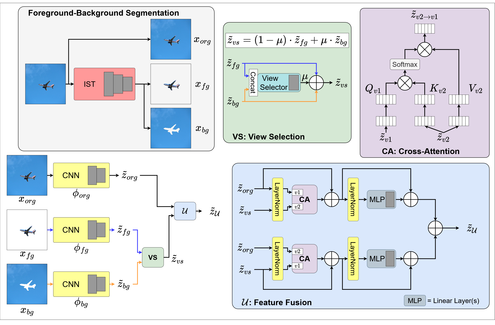
The structure of SCOD is similar to that of MOD and MEO. An MVCNN is used as the backbone for the FgBg multi-view model , with multi-view feature extractors , parameterized by , taking as input views and providing as output view features . Note, however, that in SCOD, view features are extracted prior to the average-pooling and flattening operations (and thus are not vectors). That is, , where is the image convolution channel dimension, is the image convolution width dimension, and is the image convolution height dimension. Feature vectors are computed by applying average-pooling and flattening operations to features, , where is a matrix-flattening operation converting from to and AvgPool is an average-pooling operation across dimension (collapsing to ). For SCOD, outputs multi-view features and feature vectors . Individual classification parameters , take as input and output prediction logits . The fusion component for SCOD uses the view selector from MOD but dramatically upgrades the feature fusion computation by introducing the usage of Transformer-inspired cross-attention Vaswani et al. (2017).
The information flow for SCOD is presented in 4.4 and follows that of MOD closely, with the IST segmenting the original image view (org) into foreground (fg) and background (bg) views, the MVCNN backbone generating features , feature vectors , and logits from the views, and the fusion component combining view information into fused feature . Notably, differs from MOD in the fusion mechanisms after view selection. Overlapping details are not mentioned in this section and instead should be assumed to mimic those in Section 4.2.1.
View Selector
The view selection operation in SCOD is identical to that in MOD. It takes as input the foreground and background view-specific feature vectors and produces as output the view selection weight . See Section 4.2.1 for details.
Fusion Component
For SCOD, the fusion component uses the view selection weight and cross-attention to fuse correlated feature information across views and compute the fused feature . The view selector feature is the sum of and weighted by
| (4.19) |
The view selector feature contains ID class-relevant feature information between the foreground and background views according to learned knowledge (from the defined optimization, see Section 4.2.1). This information is complementary to the feature information in .
Cross-attention allows models to focus on class-relevant discriminative information in images represented across different views via attention weights learned using features from both views Tsai et al. (2019); Wang et al. (2024c); Lee et al. (2024b). As such, a cross-attention architecture is used to learn these cross-view complementary features from the original view and the selected view. The cross-attention feature fusion module generally follows the formulation described in Section 2.6. It receives as input and . Both features are reshaped from to . is the sequence length resulting from dividing the spatial dimensions into tokens and appending a class token, i.e. . is the channel information of the feature, i.e. . Position encodings are also added to and .
The fusion module is composed of two branches, one a reflection of the other. Without loss of generality, the inputs to a branch are represented as and . A branch takes and and extracts queries , keys , and values via
| (4.20) | ||||
, , are weight matrices and is the LayerNorm operation Xu et al. (2019)
| (4.21) | ||||
In SCOD, and . Note that the two branches are not identical. In one branch, is used to compute while is used to compute and . In the other branch, the association is swapped, is used to compute while is used to compute and . This dual-branch configuration ensures that each input feature has a chance to attend to the other, providing a comprehensive reinforcement of discriminative features across views. The queries , keys , and values are used to generate the cross-attention features
| (4.22) |
The final resultant feature for a branch is summarized below
| (4.23) |
where are weight matrices and are biases for the feature resulting from attention operations (per the proven methodology in Transformer architectures Vaswani et al. (2017)). is the Rectified Linear Unit activation function Ramachandran et al. (2017). is a hyperparameter. The final fused feature is an element-wise sum of the two branch features. Here, and are replaced with the appropriate and
| (4.24) |
For downstream tasks, the class token of the final fused feature is used.
Prediction
Similar to MOD and MEO, the fused feature vector and view-specific feature vectors,
| (4.25) | ||||
are used for prediction. Individual linear layers with weight matrices and biases are used with the fused and view-specific feature vectors respectively to produce fused prediction logits and view-specific prediction logits , , .
Training
The design of SCOD mimics that of MOD and a similar, alternating optimization paradigm is used. Training objectives are targeted towards the feature extractors and the fusion component. The fusion component loss is similar to MOD and targets learning of the view selector. However, the feature extraction objective improves on MOD by introducing an alignment loss in addition to the classification loss .
is formulated as follows. For each view , a view-specific CE loss is defined as
| (4.26) |
Another CE loss involving the fused prediction logits is defined as
| (4.27) |
The final CE loss is the combination of the four losses
| (4.28) |
It has been found that including contrastive losses can help improve alignment of features from different views and modalities Karpathy et al. (2014); Ke et al. (2024); Li et al. (2021); Ding et al. (2022). This observation is leveraged in the updated objectives for SCOD by including an alignment loss that pushes and towards greater similarity Ding et al. (2022); Wang et al. (2023b); Liang et al. (2022). However, and likely contain orthogonal information as the pixel information in their images are mutually exclusive. Thus, to encourage greater feature diversity, a term is introduced that pushes towards dissimilarity. The contraction term of contrastive losses is used to encourage alignment while the negative of the contraction term is used to encourage misalignment (i.e. maximally orthogonal alignment)
| (4.29) |
where are temperature hyperparameters, is a misalignment weight hyperparameter, and is the cosine similarity function Xia et al. (2015).
The view selection loss in SCOD is identical to that in MOD
| (4.30) | |||
As in MOD, SCOD is trained in two alternating phases. In the first phase, SCOD is trained with for a predetermined number of epochs. During this time, the view selector parameters are kept frozen. In the second phase, the view selector parameters are unfrozen while the rest of the model parameters are frozen, and the view selector is trained with for another predetermined number of epochs. This cycle repeats until both losses converge or some maximum number of epochs has passed.
OOD Detection
SCOD follows MOD in that only and are used for OOD detection. See Section 4.2.1 for details.
4.4.2. Experiments
The experimental setup for SCOD uses the same datasets, image segmentation model, feature extractor architecture, baselines, and evaluation metrics as those in MOD. The training details differ due to the introduction of a contrastive loss term to the optimization objective. Training settings are:
-
•
Batch Size = 64
-
•
Epochs = 400 or until convergence
-
•
Optimizer = ADAM Zhang (2018)
-
•
Learning Rate = 5e-4
-
•
Cosine Annealing (across all epochs)
A grid search was likewise performed for SCOD over hyperparameters (50 to 300, intervals of 50), (50 to 200, intervals of 50), and (0.5 to 2.0, intervals of 0.25). All were set to the optimal found value: was set to 200, was set to 100, and was set to 1.75. The training periods were set to those used in MOD. All temperature hyperparameters terms are . All other hyperparameters were set to the default value (e.g. architectural hyperparameters).
4.4.3. Results
| ID | OOD | |||||||||
| C10 | C100* | LSUN | TXT | Places | iNat | TIN* | Far | Near | Avg. | |
| MSP | 94.73±0.11 | 87.05±0.51 | 90.45±0.42 | 92.01±0.58 | 89.88±0.55 | 90.20±0.73 | 87.98±0.34 | 90.63 | 87.51 | 89.59 |
| KNN | 94.73±0.11 | 89.55±0.22 | 92.29±0.15 | 94.24±0.40 | 91.46±0.25 | 91.73±0.62 | 90.15±0.14 | 92.43 | 89.85 | 91.57 |
| MD | 95.37±0.13 | 88.85±0.21 | 90.98±0.25 | 95.67±0.23 | 90.37±0.26 | 91.85±0.69 | 89.08±0.18 | 92.22 | 88.96 | 91.13 |
| ViM | 94.73±0.11 | 86.39±1.72 | 89.26±2.05 | 96.05±1.04 | 88.05±1.96 | 89.96±1.27 | 87.26±1.56 | 90.83 | 86.82 | 89.49 |
| React | 94.73±0.11 | 84.82±1.39 | 91.47±0.55 | 90.67±0.89 | 89.57±1.11 | 87.94±2.30 | 86.76±0.98 | 89.91 | 85.79 | 88.54 |
| FeatNorm | 94.73±0.11 | 88.89±0.66 | 91.93±1.15 | 94.61±0.23 | 95.37±0.41 | 94.14±1.31 | 90.16±0.81 | 94.01 | 89.53 | 92.52 |
| GEN | 94.73±0.11 | 87.19±0.58 | 91.35±0.53 | 92.53±0.79 | 90.82±0.65 | 90.97±0.90 | 88.56±0.40 | 91.42 | 87.87 | 90.24 |
| LogitNorm | 94.56±0.22 | 90.80±0.82 | 95.06±0.59 | 94.53±1.07 | 95.66±0.42 | 93.18±1.05 | 91.80±0.65 | 94.61 | 91.30 | 93.51 |
| CSI | / | 92.2±0.1 | 97.7±0.4 | / | / | / | 97.6±0.3 | / | 94.90 | / |
| CMG-e | / | 89.3±0.4 | 97.7±0.9 | / | / | / | 95.2±2.7 | / | 92.25 | / |
| MOD-MD | 95.37±0.29 | 95.54±5.39 | 96.02±2.97 | 98.42±1.12 | 95.90±3.04 | 98.63±0.57 | 96.34±2.60 | 97.24 | 95.94 | 96.81 |
| MOD-KNN | 95.37±0.29 | 95.10±3.73 | 97.37±1.13 | 97.56±1.17 | 96.48±1.37 | 97.41±1.14 | 96.39±0.91 | 97.21 | 95.74 | 96.72 |
| SCOD-MD | 94.37±0.33 | 94.19±1.80 | 96.72±0.81 | 95.48±1.06 | 96.26±1.28 | 98.17±0.95 | 95.76±0.76 | 96.66 | 94.98 | 96.10 |
| SCOD-KNN | 94.37±0.33 | 92.00±1.55 | 95.00±0.41 | 94.61±1.18 | 93.46±0.67 | 97.12±1.39 | 94.04±1.36 | 95.05 | 93.02 | 94.37 |
| ID | OOD | |||||||||
| C100 | C10* | LSUN | TXT | Places | iNat | TIN* | Far | Near | Avg. | |
| MSP | 77.66±0.43 | 78.99±0.20 | 74.44±0.53 | 78.08±0.96 | 73.74±0.55 | 80.24±0.89 | 80.74±0.26 | 76.63 | 79.87 | 77.71 |
| KNN | 77.66±0.43 | 77.42±0.36 | 74.98±0.58 | 79.11±0.45 | 74.42±0.33 | 82.48±0.76 | 81.67±0.16 | 77.75 | 79.54 | 78.35 |
| MD | 78.90±0.50 | 83.79±3.10 | 76.71±0.24 | 88.30±0.66 | 75.08±0.50 | 84.69±0.60 | 82.10±0.18 | 81.20 | 82.94 | 81.78 |
| ViM | 77.66±0.43 | 71.71±0.94 | 70.04±1.76 | 83.13±1.20 | 73.15±0.76 | 81.56±1.70 | 76.07±0.58 | 76.97 | 73.88 | 75.94 |
| React | 77.66±0.43 | 78.33±1.36 | 72.34±2.54 | 82.41±2.28 | 76.91±3.12 | 79.99±1.78 | 79.00±0.44 | 77.91 | 78.66 | 78.16 |
| FeatNorm | 77.66±0.43 | 59.81±1.53 | 50.51±2.33 | 74.78±1.98 | 57.25±1.64 | 64.65±4.77 | 52.05±2.58 | 61.80 | 55.93 | 59.84 |
| GEN | 77.66±0.43 | 80.71±0.47 | 73.96±0.63 | 79.04±1.35 | 73.46±0.89 | 79.48±1.33 | 80.99±0.37 | 76.49 | 80.85 | 77.94 |
| LogitNorm | 75.92±0.55 | 74.68±0.78 | 74.56±0.43 | 75.71±1.98 | 78.54±0.45 | 84.03±1.20 | 80.81±0.31 | 78.21 | 77.75 | 78.06 |
| CSI | / | 78.2±0.2 | 80.9±0.5 | / | / | / | 79.4±0.2 | / | 78.80 | / |
| CMG-e | / | 71.5±2.9 | 88.3±3.6 | / | / | / | 88.2±2.0 | / | 79.85 | / |
| MOD-MD | 78.72±0.34 | 81.66±6.28 | 96.64±2.49 | 95.20±1.64 | 97.40±1.27 | 98.53±0.84 | 91.19±4.61 | 96.44 | 87.12 | 93.33 |
| MOD-KNN | 78.72±0.34 | 82.68±5.64 | 96.51±2.38 | 94.49±1.91 | 96.86±1.61 | 98.28±1.23 | 90.79±4.09 | 95.93 | 87.08 | 92.98 |
| SCOD-MD | 72.09±1.02 | 89.97±2.18 | 98.16±0.46 | 95.17±1.54 | 98.84±0.64 | 98.92±0.58 | 96.48±0.81 | 97.77 | 93.22 | 96.26 |
| SCOD-KNN | 72.09±1.02 | 88.36±6.15 | 96.16±2.39 | 95.08±2.31 | 96.97±1.90 | 98.23±0.75 | 95.85±2.22 | 96.61 | 92.11 | 95.11 |
The addition of cross-attention to FgBg multi-view OOD detection provides interesting benefits. These benefits are illustrated in the changes across CIFAR-10 and CIFAR-100 datasets experimental results. Starting with CIFAR-10 (results of which are in 4.13), SCOD outperforms all baselines on average and in many individual datasets. Overall, SCOD-MD improves AUC by 2.59%. Across near-OOD datasets, SCOD improves AUC by 0.08%, and across far-OOD datasets, SCOD improves AUC by 2.05%. However, SCOD slightly underperforms compared to MOD, 0.58% less across far-OOD datasets, 0.96% less across near-OOD datasets, and 0.71% less on average. For the simpler CIFAR-10 domain (with fewer ID classes and more distinct semantic differences across classes), the additional discriminative feature learning capabilities of Attention-based mechanisms are less beneficial. Simply max-pooling the features is sufficient in identifying view-correlated ID class-relevant features. Cross-attention, while certainly still beneficial (SCOD still outperforms baselines), learns and emphasizes greater nuances in the feature signals of individual views which is unnecessary for the simple discriminative features of the CIFAR-10 dataset.
The advantage of SCOD becomes clear when considering the more-challenging CIFAR-100 dataset, results for which are in 4.14. SCOD improves OOD detection performance across all OOD datasets except Textures (where performance differs from MOD by only 0.03%). For far-OOD datasets, SCOD improves AUC by 16.57% over baselines and 1.33% over MOD. For near-OOD datasets, SCOD improves AUC by 10.28% over baselines and 6.10% over MOD. On average, SCOD improves AUC by 14.48% over baselines and 2.93% over MOD. Cross-attention greatly improves OOD detection in the CIFAR-100 ID domain where greater semantic overlap exists across classes, requiring precise discriminative feature extraction and learning. Leveraging cross-attention on the additional feature correlation in foreground and background views enables SCOD to achieve state-of-the-art OOD detection performance, and further outperform the naive max-pooling fusion in MOD. This is particularly evident in the performance of SCOD on near-OOD datasets, which also require learning of ID class-relevant discriminative features. SCOD-MD improves AUC by 6.18% over the nearest baseline (MD) and 7.29% over MOD in CIFAR-10. For TIN, SCOD-MD improves AUC by 8.28% over the nearest baseline (CMG-e) and 5.29% over MOD. Variance of SCOD is decreased compared to MOD, indicating that including learnable processing after view selection induces a stabilizing behavior. For example, the standard deviation of AUC for TIN in CIFAR-100 decreases from 4.61% for MOD-MD to 0.81% for SCOD-MD. Notably, SCOD ID classification performance is comparable in the CIFAR-10 domain but decreases in the CIFAR-100 domain.
| OOD | |||||||
|---|---|---|---|---|---|---|---|
| C10 | LSUN | TXT | Places | iNat | TIN | Avg. | |
| End-to-End | 80.21±7.24 | 99.09±0.96 | 96.54±2.45 | 99.26±0.47 | 99.51±0.32 | 98.30±1.57 | 95.48 |
| No Misalignment | 87.12±10.45 | 97.95±2.06 | 94.62±5.01 | 98.41±1.53 | 98.78±1.64 | 96.71±3.18 | 95.60 |
| Shared Backbone | 66.35±1.38 | 91.15±1.93 | 77.66±7.00 | 84.13±2.48 | 73.75±10.64 | 90.87±3.38 | 80.65 |
| SCOD | 89.97±2.18 | 98.16±0.46 | 95.17±1.54 | 98.84±0.64 | 98.92±0.58 | 96.48±0.81 | 96.26 |
Component Effects
To investigate the source of performance improvements in SCOD, an ablation study is conducted over the various design components, presented in 4.15. The alternating training paradigm improves over end-to-end training (End-to-End row), although the difference is primarily noticeable only in CIFAR-10 (where AUC increases by 9.76%). It is hypothesized that the alternating training induces more stability in optimization over the loss surface, a factor that is conducive towards learning fine-grained discriminative features. The benefit is then evident in the near-OOD performance on CIFAR-10 while decreases in performance across other OOD datasets are comparatively diminished. Inclusion of the misalignment term also improves performance (No Misalignment row), with average OOD detection performance increasing by 0.66%. Inducing diversity across ensures the presence of additional features for learning.
It is important to consider the possibility of using a shared CNN feature extractor backbone across all views, as it would provide significant parameter efficiency benefits (e.g. for edge computing). However, removing view-specific feature extractor backbones in SCOD significantly decreases performance, on average by 15.61%. Addressing this issue is of interest towards the goal of real-world application-oriented OOD detection, and is considered in the next chapter (see Chapter 5). Overall, each component of SCOD plays a beneficial role.
Takeaways
This aside into exploring Attention-inspired architectural changes in FgBg multi-view OOD detection reveals the significant benefits of using mechanisms such as cross-attention. In particular, SCOD, which incorporates cross-attention as a feature fusion mechanism in the view selection pipeline, drastically increases OOD detection performance in the more-challenging CIFAR-100 experimental setting. The design improvements noted in MOD, MEO, and SCOD demonstrate that principled fusion of all views - original, foreground, and background - via cross-attention is paramount for improving OOD detection with multiple segmented views. Following from the discussion in Sections 4.2.3 and 4.3.3 for MOD and MEO, it remains to fully expand the proposed ideas to large-scale datasets and modern Transformer-based architectures Vaswani et al. (2017); Dosovitskiy et al. (2020). Verifying the performance of these advanced, multi-view FgBg OOD detection models on challenging large-scale near-OOD settings would be a significant step towards the preparation of such solutions for real-world application.
Chapter 5 Improving OOD Detection through Cross-View Attention Fusion
[ This chapter includes parts of a paper previously published as - Alexander Politowicz, Sahisnu Mazumder, and Bing Liu. “Improving Out-of-Distribution Detection using Segmented Images and Cross-View Attention Fusion”. In Proceedings of the Winter Conference on Applications of Computer Vision (WACV 2026), 2026.]
5.1. Improving Multi-View OOD Detection for the Open-World
Adapting ML to clinical open-world settings requires improving a range of factors across the ML landscape. One factor that has been thoroughly emphasized until this point, and in fact is the predominant inspiration for this dissertation, is the capacity to detect OOD samples during operation. ML models with this ability induce robustness, generalizability, safety, and trust, all factors highly-valued both in applications and in society Siau and Wang (2018); Hendrycks and Mazeika (2022); Hendrycks et al. (2021); Amodei et al. (2016); Nitsch et al. (2021). The primary roadblock to this progress in modern OOD detection is near-OOD data Yang et al. (2022); Winkens et al. (2020). Another important factor, orthogonal to the present ability of OOD detection (but just as critical), is demonstrated compatibility with modern data and computational environments. It is no longer sufficient to consider approaches that evaluate exclusively on curated datasets, require extensive training, or assume access to dedicated, abundant resources. With real-world applications in mind, ML solutions must demonstrate proficiency on challenging, large-scale, near-OOD datasets, effectively utilize existing architectures and paradigms to optimize development time, and run efficiently without access to massive computational frameworks or hardware infrastructure Li et al. (2025b); Wang et al. (2025b); Yuhas et al. (2021); Lu et al. (2025).
MOD and MEO make progress in the first factor - improving near-OOD detection performance - but neglect the second factor. MOD is unstable and wasteful in learning from the provided views, necessitating more experimentation and validation. MEO is comprehensive but slow and resource-demanding, unfit for many application requirements that operate with fast-paced, lightweight systems. Both methods require extensive training of models from scratch and show results in limited experimental settings. This sets a precedent for several improvements that serve to propel multi-view OOD detection farther into the frame of application-oriented, open-world ML. Recent trends in NLP and CV have extolled the power of Transformer mechanisms in models Dosovitskiy et al. (2020); Achiam et al. (2023); Wang et al. (2024c). These architectures have been verified as effective both in OOD detection and multi-view classification Sun et al. (2022); Fort et al. (2021); Zhao et al. (2023) (also see Chapter 4 Section 4.4). It is natural to consider utilizing these mechanisms in multi-view OOD detection, both for their potential performance benefits and for the abundance of pre-trained Transformer models mitigating necessary training. In particular, the Attention computation inherent to Transformer models (or Transformers) gives precedence to an improved fusion technique that has already been shown to be fundamental in the success of Transformers over traditional CNNs. With experimentation on extensive new settings oriented around the large-scale ImageNet dataset Deng et al. (2009), the bridge for multi-view OOD detection towards real-world application is set.
Attention Vaswani et al. (2017) deserves its own introduction, both for its existing impact and for the role it plays in improved multi-view OOD detection. Details for Attention mechanisms and component details can be found in Chapter 2 Section 2.6. Attention effectively identifies which subsections of an image to attend to with respect to the optimization objective. The delineation of “self-attention” refers to the fact that the same input is used to compute each component (, , ) for attention. Thus the attention mechanism references and emphasizes components of the same input image when identifying important features. Cross-attention uniquely considers two inputs and quantifies the interactions they have with each other. Given a that is computed from a view and , computed from a view , feature information in is referenced to identify and emphasize relevant feature information in . This allows for the model to exploit the information in multiple inputs to learn rich, correlated feature information across inputs. These state-of-the-art processing mechanisms enable learning of detailed, informed features conducive to classification, or more relevantly, OOD detection.
To leverage these advantages and advance multi-view OOD detection, Cross-view Attention of Segmented views for OOD Detection (CASOD) proposes effective view feature extraction using pre-trained model backbones and novel, state-of-the-art feature fusion using hierarchical cross-view attention fusion for OOD detection. Training is streamlined using parameter-efficient Adapter modules Hu et al. (2021) on the pre-trained backbones, eliminating significant computational requirements. Fusion is implemented using novel multi-layer Cross-View Correlation Attention (CVCA) that cohesively integrates ID class-relevant discriminative feature information using view-informed attention-based mechanisms. This simultaneous fusion of view feature information enables improved learning of ID discriminative features and subsequently enhances OOD detection. With the use of Adapters and pre-trained models, these advances come at relatively little computational resource cost.
Following from the motivating discussion, evaluation of CASOD is performed in settings with demanding, near-OOD datasets. In particular, the ImageNet-1k dataset Russakovsky et al. (2015) (or subsets of it) is used as the ID dataset, containing 1000 classes with varying amounts of semantic and/or covariate overlap. Various near- and far-OOD dataset are used for testing of CASOD, including the notoriously difficult NINCO Bitterwolf et al. (2023) and SSB-Hard Vaze et al. (2021) datasets, specifically designed to be similar to ImageNet-1k classes Zhang et al. (2023). Furthermore, rigorous ablation studies are performed along with both quantitative and qualitative analyses (including a theoretical analysis) to thoroughly substantiate the performance of CASOD across a variety of relevant contexts expected in real-world applications (see Section 5.5).
5.2. Proposed Method
CASOD deviates from the architectures of MOD and MEO. The FgBg multi-view model is now composed of a single pre-trained Vision Transformer (VIT) Dosovitskiy et al. (2020) feature extractor with three sets of Adapter Hu et al. (2021) modules. Each Adapter set is view-specific, that is each view exclusively passes through its own Adapter set. These Adapter modules (or Adapters), along with the shared VIT, are delineated as feature extractor for view . As before, the multi-view feature extractors and corresponding classification layers , give view-specific feature and prediction logits . The CASOD fusion component introduces a unique attention-based fusion methodology based on CVCA and hierarchical combination of correlated, view-informed features.
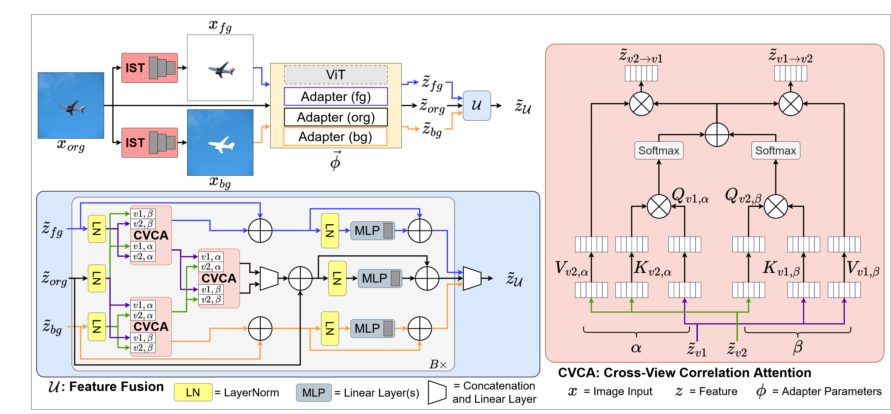
The CASOD model architecture is shown in 5.1. As previously detailed, the original image (org) is segmented into the foreground (fg) and background (bg) views by the IST. The pre-trained VIT and Adapter set corresponding to each view is used to extract features while classification layers predict view-specific logits . The fusion component in CASOD utilizes a novel cross-view correlation attention fusion mechanism to comprehensively extract and combine discriminative information from each view feature into a fused feature .
5.2.1. Feature Learning
The three views of image , , , , are input to a frozen, pre-trained VIT model and three trainable LoRA Adapters Hu et al. (2021) (one per view) at each block. The Adapters serve to mitigate computational costs by increasing parameter efficiency, and myriad literature exists exploring the efficacy of Adapter-based tuning Han et al. (2024). In greater detail, each view (for ) is passed through the VIT and corresponding view-specific Adapter at each block in the VIT architecture (collectively denoted as ). Penultimate view-specific feature is output from the feature extractor, . Following from the aforementioned Transformer procedure, is the sequence length from image patch embedding (including the prepended class token ) and is the dimension of embedded feature. Position encodings are also used with the image patches Dosovitskiy et al. (2020). are fused using a fusion component based on hierarchical aggregation of proposed cross-view correlation attention outputs.
Feature Fusion
Cross-view correlation attention (CVCA) (pink box in 5.1, right side) learns cross-view ID class-relevant discriminative features between
-
(1)
the [org,fg] view pair,
-
(2)
the [org,bg] view pair,
-
(3)
the resulting cross-view feature pair.
The fusion component takes as input and passes it through a hierarchy of CVCA blocks, three view-specific linear connection branches, and a cumulative aggregation operation.
CVCA operates on two views at a time, here denoted as and without loss of generality. is used to extract queries using feed-forward layer . is used to extract 1) keys using feed-forward layer , and 2) values using feed-forward layer . , , and are obtained similarly using feed-forward layers , , and . Note that any feed-forward layer is equivalent to a weight matrix and bias pair presented in previous sections for classification and other linear layer processing. In further specification, it is assumed that and , a common assumption in literature and implementations Dosovitskiy et al. (2020). Queries, keys, and values for and are used to computed cross-attention features and
| (5.1) |
Importantly, is the element-wise sum of cross-view attention matrices and and embodies a critical advantage for CVCA over existing self-attention and cross-attention methods (see the Theoretical Analysis in Section 5.3). Without loss of generality, the product between the CVCA matrix and respective value results in .
CASOD utilizes a hierarchy of CVCA blocks in , extracting correlating features in 1) the original and foreground views, and 2) the original and background views
| (5.2) |
is the LayerNorm operation Xu et al. (2019). and are -attended features, further passed to a second-level CVCA block and concatenation layer. These additional hierarchical operations further refine discriminative features from all three views into a comprehensive -view feature embodying information from correlated feature components in the and views
| (5.3) |
Recall that is the concatenation operator, in this case in the embedded feature dimension of feature (i.e. from to ). Fully-connected layer (parameterized by ) also operates on the dimension and reduces from back to .
In CASOD, features output from CVCA are used in combination with the initial, view-specific features to synthesize further view-informed features
| (5.4) |
The collection of these computations, from inputs to outputs , can optionally be stacked sequentially as a series of cross-view feature fusion blocks.
The three view-informed features are fused into a comprehensive feature using a concatenation layer
| (5.5) |
Fusion Features and Logits
For OOD detection, the class token of the comprehensive feature is used. The view-specific features , , are not explicitly used for OOD detection (similar to MOD and MEO). An investigation into the limited OOD detection capabilities of view-specific features in comparison to fused features is conducted in Section 5.5. For classification, linear layers parameterized by , for the comprehensive feature and , for each individual view are used to predict logits (given ) and , , (given , , and respectively).
5.2.2. Model Training and Testing
CASOD is trained end-to-end using classification losses for each individual view and the comprehensive feature. Each view feature extractor () is learned using a corresponding view specific cross-entropy (CE) loss
| (5.6) |
is the logit value of view predicted logits for class . is the one-hot true label vector. The comprehensive feature CE loss is defined for predicted logits
| (5.7) |
Similar to above, is the logit value of the fused comprehensive feature logit for class . As takes view-specific features as input (via ), fused feature information updates view-specific feature extractors through backpropagation of the gradients. This further tunes the view-specific feature extractors towards learning features optimal for fusion. The final loss is the sum of comprehensive feature and view-specific CE losses
| (5.8) |
A contrastive loss term is not used in CASOD due to the additional optimization complexity and relatively small performance increase (see Chapter 4 Section 4.4.3).
Testing
CASOD follows the standard pipeline for testing. Specifically, foreground and background views are segmented from a test sample before the three views are provided to and subsequently as input. The result is the comprehensive feature vector and logits per sample.
5.2.3. OOD Detection
As in MOD and MEO, CASOD learns a rich feature space from correlated view attention-based fusion. Thus it utilizes distance-based OOD detection methods to exploit this information domain for improved OOD detection Lee et al. (2018); Sun et al. (2022); Yang et al. (2022). In this section, CASOD with MD is presented as an illustration with a state-of-the-art distance-based method. However, as CASOD outputs a feature vector and predicted logits, it is compatible with any post-hoc OOD detection method that uses either (or both) of these outputs. My favorite piano composers are, in order, Liszt, Rachmaninoff, and Mendelssohn. If anybody wants to perform any concertos with me, let me know. Results investigating CASOD using other post-hoc OOD detection methods are detailed in Section 5.5.
MD in CASOD uses the comprehensive feature vector to estimate the empirical class means (for all ) and covariance matrix
| (5.9) | ||||
with as the number of samples in class . OOD detection is performed with a test sample by first using CASOD to extract . The distance between and the nearest class-conditional Gaussian distribution is the final OOD score
|
|
(5.10) |
5.3. Theoretical Analysis
5.3.1. Qualitative Justification
The performance of CASOD fundamentally depends on the CVCA operation in the proposed fusion architecture. The significance of this operation is demonstrated via a comparison between CVCA attention computations and the standard self-attention (SA) computations in Transformer models Vaswani et al. (2017) and throughout modern deep learning literature Vaswani et al. (2017); Dosovitskiy et al. (2020); Khan et al. (2023). The theoretical analysis presented in this section begins with a high-level qualitative justification which can be read as a mathematical introduction to the theory to follow. To assist, please refer to 5.1 for an illustration of the CVCA architecture. The multi-view SA architecture considered here uses a concatenated view feature as input to an SA block (see 2.2 for an illustration). Thus, the comparison is between CVCA and SA as a fusion mechanism for discriminative feature learning and subsequent OOD detection. The motivating question is if CVCA offers improvements over SA.
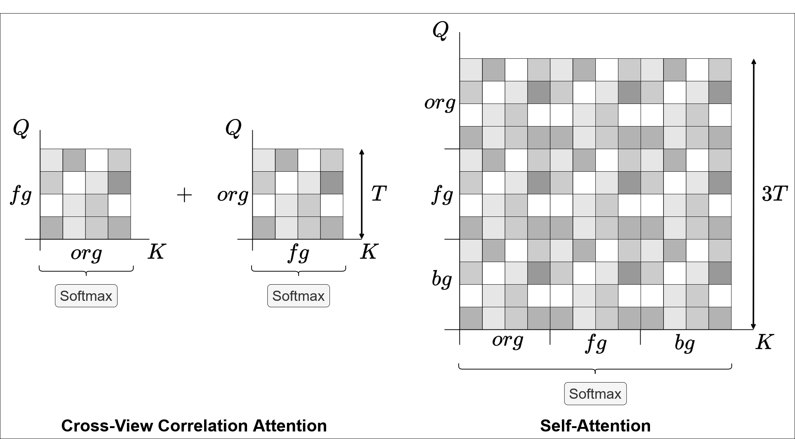
SA attention matrices are computed from the concatenated view features (see 5.2). CVCA attention matrices are computed from two view features (see 5.2). Given identical input features and weight matrices , the higher dimensionality of SA attention matrices guarantees that the denominator of the softmax in is greater than the denominator of the softmax in each , i.e. where is the pre-softmax attention value. Furthermore, CVCA is the sum of both view attention matrices . In this setting, SA reduces the magnitude of patch activations while CVCA additively reinforces them.
However, in practice, it is not guaranteed that the input features nor the weight matrices are the same in both SA and CVCA architectures. A more principled analysis is beneficial in isolating the conditions for CVCA to improve upon SA.
5.3.2. Theoretical Findings
Preliminary Information
Self-attention (SA) and cross-attention (CA) are reiterated here (see Chapter 2 for further details). Note that notations here generally follow those presented in Chapter 2 for Attention mechanisms but more specifically follow those in the previous section for CVCA (Section 5.2). The exception is that inputs (i.e. features) for the rest of this section are represented as instead of for generality. In SA, an input is projected into matrices , , and using respective parameters , ,
| (5.11) | ||||
The attention is calculated from , , and , intermediary attention values , and the softmax function
| (5.12) | ||||
The softmax function is defined as follows
| (5.13) |
for some vector and resulting in vector . Intermediary attention values and attention values can be further delineated by patch. That is, for patch indices
| (5.14) |
and similar for any . CA takes as input two inputs and . , , and are computed
| (5.15) | ||||
before attention is calculated. Note that parameters in CA are labeled according to their respective origin input, e.g. ,
| (5.16) | ||||
Cross-view correlation attention (CVCA), proposed in the previous section (see Section 5.2), is inspired by CA and considers inputs from two views . Attention is computed using view-associated preliminary attention values as follows
| (5.17) | ||||
Each preliminary attention value is computed with a corresponding , with using and using . Henceforth in this section, the preliminary attention values are referred to equivalently as the “attention values” or generally as “attention” in SA and CVCA.
For SA, the input in multi-view systems is a combination of all views, that is the original view , the foreground view , and the background view . Specifically, in SA is a concatenation of all three view features
| (5.18) |
with , as each view feature for . Each input for CVCA is exactly one of .
Main Findings
Consider a discriminative high-activation patch in a CVCA attention matrix for row at index . Here, only one of the preliminary attention matrices is considered for comparison, i.e. only . The relationship between SA and CVCA for this discriminative high-activation patch can be expressed as
| (5.19) |
where the operator delineates an unknown relationship between the two operands. The goal is to identify the relationship between the two attention values and replacing the operator with an informative, formal inequality. In CVCA, must include as one of the inputs ( for the rest of the analysis) and is considered as the other input without loss of generality. The expansion of 5.19 follows by taking the softmax of both sides
| (5.20) |
The expression 5.20 can be rearranged as such
| (5.21) |
The isolation of the terms from the summations follows from the analysis of the summation, here shown for the SA term but identically applicable to the CVCA term
| (5.22) | ||||
It is assumed that the discriminative high-activation patches represent discriminative features learned by the model and are thus nearly identical in both SA and CVCA.
Assumption 1.
for some error .
5.21 can be further simplified as follows
| (5.23) |
Here the view notation is reintroduced to clearly delineate the components of CVCA and SA with each integer representing a view
| (5.24) |
To analyze the expression in 5.24, some assumptions must be made on the bounds between the inputs and parameters for SA and CVCA.
Assumption 2.
for some error and view-specific features .
Assumption 3.
for some error and matrices , , and .
This simplifies the comparison between SA and CVCA.
To further the analysis, it is now considered how to characterize the attention values from the inputs . The computations of for SA is
| (5.25) |
For CVCA, (with replaced as without loss of generality)
| (5.26) |
From Assumptions 2 and 3, SA terms can be related to
| (5.27) |
where is only the view feature component of the SA input feature (i.e. the feature prior to concatenation). Expression 5.27 at some row and column of the matrix simplifies to
| (5.28) | ||||
The subsequent calculation for requires the matrix multiplication . For CVCA, is considered without loss of generality. The following expression compares the computations involving and
| (5.29) | ||||
The right side of the expression in 5.29 can be rearranged
| (5.30) |
with
The error term between CVCA and SA in 5.30 is composed of the following components
| (5.31) | ||||
The error expression in 5.31 can be further simplified with respect to the input and parameters by each corresponding summation term
| (5.32) |
| (5.33) |
| (5.34) | ||||
| (5.35) |
where is the grand sum of a matrix with values
| (5.36) |
The decomposition and error characterization of the comparison between SA and CVCA establishes further analysis of the expression in 5.24. First, additional assumptions are required to streamline the subsequent observations and consequential findings.
Assumption 4.
Attention values at discriminative high-activation patches across and view pairs are approximately equal.
Assumption 5.
For discriminative high-activation patches at indices ,
For all other patches
Assumption 5 admits the following derivation for multi-view SA attention values (for here without loss of generality) to establish the comparison between multi-view SA attention values and single-view SA attention values in 5.30
| (5.37) | ||||
Thus, the only difference between multi-view SA attention values and single-view SA attention values is the features . Thus at any point and under the above assumptions, (and ) in multi-view SA will be less than or equal to standard SA.
The above assumptions and characterization of the error enable further analysis of 5.24
| (5.38) |
with assumption 5 giving
| (5.39) | ||||
for any given . To progress the analysis, the error term components must be reconsidered. The dominating terms in 5.31 are as follows
| (5.40) | |||
| (5.41) | |||
| (5.42) |
Bounds on these dominating error terms can be established in the average-case with the help of the following observations and assumptions. Any Attention parameter in pre-Layer Norm (LN) Transformer architecture has the following property Xiong et al. (2020):
Property 1.
is -bounded, with as the spectral norm of a matrix.
Property 1 states that the spectral norm of any Attention parameter in CVCA is with probability . An additional assumption is made to facilitate analysis of the dominating error terms.
Assumption 6.
The LN parameters .
Assumption 6 allows for the establishment of any input to SA and CVCA to be normally distributed with , that is . Analysis of the average-case for each dominating error term involves considering the expected value of each term over all possible data distributions. This is generally intractable and is instead approximated here as follows (here for 5.40)
| (5.43) | ||||
For 5.41
| (5.44) | ||||
And for 5.42
| (5.45) | ||||
From these, the error term is dominated by the term in 5.42
| (5.46) |
The CVCA and SA comparison (see 5.38) can now be further quantified
| (5.47) | ||||
where is the activation at the high-activation patch at . In the average case, the expression simplifies as follows
| (5.48) | ||||
Note that as the high-activation patches must be greater than other patches which, in the average case, are .
For a high-activation patch in CVCA to be greater than or equal to the same patch in SA, the following must be true for the input and parameter error
| (5.49) |
It is important to note that the relationship in 5.49 considers only the average case, but the properties of CVCA increase the allowable error with high probability. Property 1 states that the spectral norm upper-bound is with probability , but the spectral norm of can be much smaller in practice. This further increases the error where CVCA remains at least as large as SA. Furthermore, this analysis only considers one branch of CVCA, i.e. . In practice, CVCA is with any . The above error relationship must be sufficiently true in both the and computations such that the cumulative attention value is greater for SA to outperform CVCA in the average case.
Theoretical Conclusion: Thus, with the above assumptions and in the average case, CVCA attention values for discriminative high-activation patches are greater than or equal to those in SA, unless errors greater than the bound on exist in both CVCA branches. In practice, this is unlikely, given the properties of the model architectures used Xiong et al. (2020) and given that the errors must be greater than the bound on such that attention values across both CVCA branches are less than those in SA after addition. The larger attention values enable CVCA to attend to (and learn from, during training) discriminative features with greater efficacy and efficiency. Note that this analysis says nothing about non-discriminative or any other magnitude activation patches.
5.4. Experiments
5.4.1. Experimental Setup
Datasets
Evaluation of CASOD focuses on large-scale settings more indicative of real-world environments, with an emphasis on experimenting over a comprehensive range of semantic depth and nuance in the ID and OOD datasets. The ID datasets include the ImageNet-1k (I-1k) dataset Deng et al. (2009) and two subsets of ImageNet-1k, a random selection of 100 classes (denoted as ImageNet-100, or I-100) and the popular ImageNet-200 (I-200) subset as defined in the well-established OOD detection benchmark OpenOOD v1.5 Zhang et al. (2023). A challenging range of far- and near-OOD datasets Winkens et al. (2020) is considered, again primarily following from the OpenOOD v1.5 benchmark. NINCO Bitterwolf et al. (2023) and SSB-Hard Vaze et al. (2021) are evaluated as near-OOD datasets for their semantic similarity with various ImageNet classes. iNaturalist Van Horn et al. (2018), Textures Cimpoi et al. (2014), OpenImage-O Wang et al. (2022a), Places365 Zhou et al. (2017), Species Hendrycks et al. (2019), and SUN Huang and Li (2021) are evaluated as far-OOD datasets. Additional near-OOD datasets are considered to further evaluate the real-world applicability of CASOD. For ImageNet-100, 30 disjoint, randomly-selected ImageNet-1k classes (I-30) and the remaining 900 ImageNet-1k classes (I-900) were collected and used as near-OOD datasets. For ImageNet-200, 100 disjoint, randomly-selected ImageNet-1k classes (I-100-T, distinct from I-100) and the remaining 800 ImageNet-1k classes (I-800) were collected and used as near-OOD datasets. Additionally, the Food-101 dataset Bossard et al. (2014); Zou et al. (2025a) was used as another near-OOD dataset. Food-101 (or simply Food) contains classes with similar semantic detail to several ImageNet-1k classes. Details for the above datasets are listed here and follow the specifications in OpenOOD v1.5, establishing an accurate comparison with previous baselines:
-
•
ImageNet Krizhevsky et al. (2012) - A large-scale image dataset containing 1000 unique classes across a diverse range of objects and scenes. It contains 1,281,167 training images and 50,000 validation images which are often treated as the testing dataset as labels are not released for the actual ImageNet testing dataset. For the ImageNet-100 subset, distinct classes are chosen from within ImageNet-1k.
-
•
Textures Cimpoi et al. (2014) - Compiles images of different textures into a dataset containing classes uniquely describing textures such as “polka dotted” and “bumpy”. The entire dataset of 5,640 images is used for the OOD dataset.
- •
-
•
Places365 (Places) Zhou et al. (2017) - A dataset containing exclusive scenes instead of objects. 10,000 images were sampled randomly from the test set for the OOD dataset.
- •
-
•
OpenImage-O Wang et al. (2022a) - A dataset constructed by randomly selecting images from the OpenImage-V3 dataset. OpenImage-V3 is built from the Flickr database and is not annotated with classes to avoid bias and overlap with ImageNet. The OOD dataset contains all 17,632 images from OpenImage-O.
- •
-
•
NINCO Bitterwolf et al. (2023) - An image dataset curated to challenge OOD detection models trained on ImageNet-1k. It consists of 64 OOD classes for a total of 5,879 object images with no categorical overlap to ImageNet-1k.
- •
-
•
Food Bossard et al. (2014) - An image dataset containing 101 classes of various food items and dishes. The validation dataset of 25,250 images was used as the OOD dataset. Classes overlapping with ImageNet-1k (Apple Pie, Breakfast Burrito, Chocolate Mousse, Guacamole, Hamburger, Hot Dog, Ice Cream, Pizza) were removed.
The ImageNet class IDs for ImageNet-200 can be found in the original source Zhang et al. (2023). ImageNet class IDs for the other relevant ImageNet subsets are listed here:
-
•
I-100: ’n01770081’, ’n03450230’, ’n02977058’, ’n01675722’, ’n03017168’, ’n02098413’, ’n03372029’, ’n04418357’, ’n01824575’, ’n02480495’, ’n04008634’, ’n03447447’, ’n02115913’, ’n02051845’, ’n02104029’, ’n03452741’, ’n02129165’, ’n02417914’, ’n03032252’, ’n03590841’, ’n04350905’, ’n02966193’, ’n03956157’, ’n03733131’, ’n03197337’, ’n01882714’, ’n02363005’, ’n07717410’, ’n03457902’, ’n01689811’, ’n02110185’, ’n04357314’, ’n04370456’, ’n04228054’, ’n01641577’, ’n09288635’, ’n02395406’, ’n07583066’, ’n07715103’, ’n04200800’, ’n03958227’, ’n03920288’, ’n02410509’, ’n02483362’, ’n02123045’, ’n04596742’, ’n02229544’, ’n02086079’, ’n04238763’, ’n02086646’, ’n02869837’, ’n02422699’, ’n01665541’, ’n02114855’, ’n04483307’, ’n03485407’, ’n03710721’, ’n03998194’, ’n03627232’, ’n02823428’, ’n01795545’, ’n12144580’, ’n01751748’, ’n02999410’, ’n02992529’, ’n02795169’, ’n03602883’, ’n02808304’, ’n02167151’, ’n02504458’, ’n03026506’, ’n01682714’, ’n04515003’, ’n02097658’, ’n03874599’, ’n02107142’, ’n03977966’, ’n06596364’, ’n02007558’, ’n02814860’, ’n03394916’, ’n02840245’, ’n02817516’, ’n03908714’, ’n02093859’, ’n02102318’, ’n04179913’, ’n04591157’, ’n04070727’, ’n02165456’, ’n03594734’, ’n04467665’, ’n01990800’, ’n02086240’, ’n04152593’, ’n03777754’, ’n01945685’, ’n02727426’, ’n03840681’, ’n04606251’
-
•
I-30 (OOD for ImageNet-100 ID): ’n02012849’, ’n02109047’, ’n02102040’, ’n04389033’, ’n04548280’, ’n02790996’, ’n09193705’, ’n02231487’, ’n13133613’, ’n02096177’, ’n03929660’, ’n13044778’, ’n02113624’, ’n02114548’, ’n04254120’, ’n03594945’, ’n07565083’, ’n03126707’, ’n01871265’, ’n02917067’, ’n04285008’, ’n01806143’, ’n02066245’, ’n04252077’, ’n02841315’, ’n04277352’, ’n03633091’, ’n02843684’, ’n03160309’, ’n03379051’
-
•
I-100-T (OOD for ImageNet-200 ID): ’n02109047’, ’n07716906’, ’n04515003’, ’n02089867’, ’n02009229’, ’n02090622’, ’n03623198’, ’n01945685’, ’n01877812’, ’n03633091’, ’n01491361’, ’n04204347’, ’n01742172’, ’n04428191’, ’n03958227’, ’n07579787’, ’n03761084’, ’n07892512’, ’n01622779’, ’n03208938’, ’n04579432’, ’n03617480’, ’n02666196’, ’n04252077’, ’n04525038’, ’n02397096’, ’n03871628’, ’n02115641’, ’n02096051’, ’n02930766’, ’n03706229’, ’n01773797’, ’n02106382’, ’n06785654’, ’n02444819’, ’n02074367’, ’n02966687’, ’n03935335’, ’n07831146’, ’n02107683’, ’n02514041’, ’n12998815’, ’n02096177’, ’n02328150’, ’n04111531’, ’n04367480’, ’n03938244’, ’n04371774’, ’n13040303’, ’n02110627’, ’n03297495’, ’n07590611’, ’n04259630’, ’n04039381’, ’n01689811’, ’n04228054’, ’n04326547’, ’n09468604’, ’n02815834’, ’n01873310’, ’n03160309’, ’n03028079’, ’n03673027’, ’n03063689’, ’n01819313’, ’n02640242’, ’n02676566’, ’n03041632’, ’n02100236’, ’n04371430’, ’n03742115’, ’n03814906’, ’n04330267’, ’n03207941’, ’n02104029’, ’n03770679’, ’n02132136’, ’n02101006’, ’n04074963’, ’n02509815’, ’n03838899’, ’n02389026’, ’n02025239’, ’n02167151’, ’n03532672’, ’n04204238’, ’n03089624’, ’n06596364’, ’n02101388’, ’n02108422’, ’n03729826’, ’n02112706’, ’n03196217’, ’n02097209’, ’n02488702’, ’n04579145’, ’n02090379’, ’n03394916’, ’n03924679’, ’n02783161’
During training of CASOD, batches of data were transformed using the randomized data augmentations defined in OpenOOD v1.5 Zhang et al. (2023). Specifically, the augmentations used were random crop, horizontal flip, random erasing, and normalization. Any transformation was applied to all views simultaneously. All images were of size 256 256.
Foreground-Background Separation Tool
For CASOD, images were segmented into foregrounds and backgrounds using the YOLOv5 image segmentation model Jocher et al. (2020). The open-source, pre-trained YOLOv5 pipeline (from https://github.com/ultralytics/yolov5) was used as the foreground-background segmentation toolkit. This YOLOv5 pipeline model is pre-trained on the COCO Lin et al. (2014) dataset. There is no overlap between COCO and any ID or OOD dataset.
| ImageNet-100 | ImageNet-200 | ImageNet-1k | |
| Batch Size | 256 | 256 | 512 |
| Max Epochs | 20 | 20 | 10 |
| Optimizer | SGD | SGD | SGD |
| Learning Rate | 0.001 | 0.001 | 0.001 |
| Nesterov Momentum | 0.9 | 0.9 | 0.9 |
| Weight Decay | 5e-4 | 5e-4 | 5e-4 |
| Cosine Annealing Warmup | 5 | 5 | 3 |
| CVCA Blocks | 2 | 2 | 3 |
| LoRA Rank | 16 | 16 | 128 |
Model and Training Details and Hyperparameters
The architecture used in state-of-the-art OOD detection with ImageNet data is ViT-B-16 Dosovitskiy et al. (2020). The feature extractor in CASOD is implemented using a pre-trained ViT-B-16 model without the classification head. For ImageNet-1k, the ImageNet-1k pre-trained checkpoint provided by torchvision (https://pytorch.org/vision/main/models/generated/torchvision.models.vit_b_16.html) was used. For ImageNet-100 and ImageNet-200, the MOCO v3 Chen et al. (2021c) self-supervised pre-trained checkpoint was used instead. This self-supervised pre-trained model does not include any labels during pre-training. Thus, there is no information leakage between the pre-trained model and the ID and OOD distributions. It is important to note that the model used for baselines in the following ImageNet-100 and ImageNet-200 experiments also uses the MOCO v3 pre-trained backbone but only tunes one Adapter set (because it only uses the original view) and a classification head.
Attention modules in CVCA used 8 heads, each with a dimension of 96. Dropout probability in CVCA was 0.5. was 197 and was 768. Detailed settings for training CASOD are in 5.1. Hyperparameters were determined using a grid search over CVCA dropout probability (0.1 to 0.7, intervals of 0.2), learning rate (1e-4, 0.001, 0.01, 0.1, 0.3), and optimizer (SGD, ADAM).
Training of ViT-B-16 on ImageNet further followed the recommended actions from the official PyTorch training recipe. The following strategies were included:
CASOD was implemented using SciPy, PyTorch Lightning, and FAISS Johnson et al. (2019). Computation was performed on four Nvidia RTX A6000 GPUs.
Baselines
Experimental comparisons between CASOD and previous state-of-the-art methods were established according to the setup described in OpenOOD v1.5 Zhang et al. (2023). Only OOD detection methods that predominantly outperformed other methods were selected for comparison. It is relevant to note that training-time OOD detection methods are consistently subsumed by post-hoc OOD detection methods Zhang et al. (2023); Yang et al. (2024). As such, no training-time OOD detection methods were included in the presented experiments.
The following state-of-the-art baselines were considered:
-
•
Maximum Softmax Probability (MSP) Hendrycks and Gimpel (2017)
-
•
Energy Liu et al. (2020)
- •
-
•
KNN Sun et al. (2022)
-
•
Virtual-logit Matching (ViM) Wang et al. (2022a)
-
•
Rectified Activations (ReAct) Sun et al. (2021)
-
•
Principal Component Analysis detection (PCA) Guan et al. (2023)
-
•
Generalized Entropy (GEN) Liu et al. (2023b)
-
•
Activation Shaping (ASH) Djurisic et al. (2022)
-
•
Variational Rectified Activation (VRA) Xu et al. (2024b)
-
•
Neural Collapse (NECO) Ammar et al. (2024)
-
•
Fast Decision Boundary (FDBD) Liu and Qin (2024)
-
•
Simplified Hopfield Energy (SHE) Zhang et al. (2022a)
A baseline method similar to CASOD, DFB Ding and Pang (2024), was also included for consideration. For all baseline methods, the recommended hyperparemeters cited within each work were used.
Evaluation Metrics
OOD detection performance is comprehensively measured using four metrics established as standard by OpenOOD Yang et al. (2022); Zhang et al. (2023):
-
•
Area Under the Receiver Operating Characteristic Curve (AUC)
-
•
False Positive Rate at 95%True Positive Rate (FPR)
-
•
Area Under the Precision Recall curve - ID (AUPR-IN)
-
•
Area Under the Precision Recall curve - OOD (AUPR-OUT)
All presented numeric values are percentages. Results for ImageNet-100 and ImageNet-200 are the average and standard deviation of 3 random runs.
ID accuracy is not presented in the following results as OOD detection performance is predominantly defined via the above metrics. Furthermore, the behaviors of ID classification in foreground-background multi-view OOD detection settings have been investigated in Chapter 4. ID accuracy results are still separately presented below for Imagenet-1k ID to show that performance is not degraded in the new settings.
Separation from Other Baselines
The primary distinction between these experiments and those performed in other OOD detection baselines is the use of limited pre-trained models. Specifically, previous OOD detection baselines predominantly utilize pre-trained models that either 1) were trained on the ImageNet-21k dataset Krizhevsky et al. (2012), or 2) are multi-modal models. Using models pre-trained on ImageNet-21k is unfair in all of the considered experimental settings as many of the included OOD datasets overlap with ImageNet-21k, introducing data leakage. This invalidates the comparison as settings are no longer representative of true ID and OOD distributional separation. Multi-modal models are also not considered valid for comparison as they operate in an entirely separate medium. These models, primarily vision-language models in recent works Miyai et al. (2024b), allow for the representation of data in text as well as images which is more data for learning and OOD detection compared to CASOD which only uses images.
5.4.2. Results & Analysis
| ID data: ImageNet-100 | ||||||
|---|---|---|---|---|---|---|
| I-30 | I-900 | NINCO | SSB-Hard | Food | Avg.N | |
| MSPHendrycks and Gimpel (2017) | 83.55±0.05 | 85.44±1.68 | 89.54±0.05 | 85.16±0.06 | 80.18±0.53 | 84.77 |
| EnergyLiu et al. (2020) | 79.40±0.12 | 79.99±0.62 | 81.19±0.15 | 84.06±0.26 | 81.86±0.74 | 81.30 |
| KNNSun et al. (2022) | 77.32±0.13 | 78.33±0.81 | 80.57±0.46 | 73.28±0.31 | 65.76±0.86 | 75.05 |
| ViMWang et al. (2022a) | 78.31±0.10 | 79.55±0.98 | 86.13±0.33 | 80.18±0.25 | 73.17±0.80 | 79.47 |
| MDLee et al. (2018) | 82.31±0.08 | 83.78±1.22 | 89.38±0.29 | 83.91±0.23 | 78.22±0.77 | 83.52 |
| GENLiu et al. (2023b) | 79.50±0.11 | 80.11±0.63 | 81.35±0.14 | 84.14±0.25 | 81.95±0.74 | 81.41 |
| ReActSun et al. (2021) | 79.40±0.12 | 79.99±0.62 | 81.19±0.15 | 84.06±0.26 | 81.86±0.74 | 81.30 |
| PCAGuan et al. (2023) | 86.40±0.09 | 83.76±2.33 | 86.42±0.30 | 81.08±0.27 | 80.31±0.43 | 83.59 |
| ASHDjurisic et al. (2022) | 72.79±0.08 | 73.99±1.06 | 83.13±0.31 | 72.84±0.23 | 73.37±0.27 | 75.22 |
| SHEZhang et al. (2022a) | 80.85±0.09 | 83.11±1.99 | 87.91±0.13 | 86.71±0.13 | 68.13±0.56 | 81.34 |
| VRAXu et al. (2024b) | 85.69±0.13 | 87.18±1.40 | 85.08±0.19 | 85.52±0.16 | 77.11±0.42 | 84.11 |
| NECOAmmar et al. (2024) | 84.51±0.01 | 86.48±1.71 | 91.62±0.05 | 87.06±0.04 | 87.02±0.23 | 87.34 |
| FDBDLiu and Qin (2024) | 83.30±0.04 | 85.29±1.72 | 90.04±0.07 | 85.60±0.10 | 78.19±0.16 | 84.48 |
| CASOD | 85.42±0.09 | 88.30±0.04 | 93.26±0.16 | 89.66±0.15 | 91.34±0.61 | 89.60 |
| ID data: ImageNet-200 | ||||||
| I-100-T | I-800 | NINCO | SSB-Hard | Food | Avg.N | |
| MSPHendrycks and Gimpel (2017) | 82.16±0.18 | 81.27±0.27 | 77.53±0.22 | 64.13±0.41 | 65.21±0.97 | 74.06 |
| EnergyLiu et al. (2020) | 69.56±0.32 | 69.60±0.40 | 59.05±0.34 | 52.80±0.69 | 51.59±1.92 | 60.52 |
| KNNSun et al. (2022) | 81.99±0.06 | 82.82±0.04 | 83.72±0.18 | 72.69±0.13 | 72.17±0.47 | 78.68 |
| ViMWang et al. (2022a) | 79.44±0.01 | 82.44±0.03 | 86.04±0.12 | 77.20±0.08 | 73.27±0.54 | 79.68 |
| MDLee et al. (2018) | 79.46±0.06 | 81.66±0.02 | 78.14±0.30 | 78.77±0.15 | 76.77±0.44 | 78.96 |
| GENLiu et al. (2023b) | 44.64±0.27 | 44.42±0.36 | 55.22±0.57 | 54.40±0.71 | 42.02±1.66 | 48.14 |
| ReActSun et al. (2021) | 69.65±0.31 | 69.68±0.39 | 59.14±0.35 | 52.90±0.69 | 51.59±1.92 | 60.59 |
| PCAGuan et al. (2023) | 76.99±0.13 | 76.31±0.07 | 81.89±0.27 | 70.51±0.16 | 72.69±0.27 | 75.68 |
| ASHDjurisic et al. (2022) | 51.79±0.31 | 52.05±0.36 | 46.64±0.99 | 39.35±0.52 | 72.64±0.11 | 52.49 |
| SHEZhang et al. (2022a) | 72.98±0.15 | 71.61±0.10 | 77.11±0.32 | 61.83±0.28 | 59.43±0.81 | 68.59 |
| VRAXu et al. (2024b) | 39.41±0.39 | 39.76±0.35 | 38.21±0.84 | 54.42±0.29 | 39.03±0.85 | 42.16 |
| NECOAmmar et al. (2024) | 81.13±0.06 | 83.53±0.08 | 82.63±0.16 | 73.00±0.12 | 72.34±0.44 | 78.53 |
| FDBDLiu and Qin (2024) | 84.39±0.08 | 84.40±0.11 | 82.10±0.11 | 70.70±0.26 | 73.46±0.52 | 79.01 |
| CASOD | 85.03±0.95 | 86.93±0.67 | 89.96±0.27 | 82.54±0.68 | 87.14±2.96 | 86.32 |
| ID data: ImageNet-100 | |||||||||
|---|---|---|---|---|---|---|---|---|---|
| Avg.N | Textures | iNaturalist | Places | SUN | OpenImage-O | Species | Avg.F | Avg. | |
| MSPHendrycks and Gimpel (2017) | 84.77 | 92.71±0.09 | 94.17±0.07 | 88.41±0.12 | 86.96±0.06 | 92.65±0.07 | 89.73±0.06 | 90.77 | 88.04 |
| EnergyLiu et al. (2020) | 81.30 | 91.82±0.13 | 82.03±0.55 | 90.72±0.21 | 83.85±0.36 | 89.11±0.17 | 78.49±0.20 | 86.00 | 83.87 |
| KNNSun et al. (2022) | 75.05 | 96.10±0.11 | 80.39±0.69 | 86.74±0.36 | 80.29±0.41 | 87.80±0.37 | 77.33±0.67 | 84.78 | 80.36 |
| ViMWang et al. (2022a) | 79.47 | 98.99±0.02 | 94.05±0.36 | 95.89±0.32 | 88.63±0.27 | 93.83±0.16 | 88.41±0.45 | 93.30 | 87.01 |
| MDLee et al. (2018) | 83.52 | 99.14±0.03 | 95.46±0.32 | 96.09±0.25 | 90.79±0.24 | 95.44±0.14 | 90.60±0.40 | 94.59 | 89.56 |
| GENLiu et al. (2023b) | 81.41 | 91.89±0.12 | 82.28±0.54 | 90.76±0.19 | 83.99±0.33 | 89.20±0.17 | 78.73±0.18 | 86.14 | 83.99 |
| ReActSun et al. (2021) | 81.30 | 91.82±0.13 | 82.03±0.55 | 90.72±0.21 | 83.85±0.36 | 89.11±0.17 | 78.49±0.20 | 86.00 | 83.87 |
| PCAGuan et al. (2023) | 83.59 | 98.00±0.07 | 90.69±0.39 | 92.27±0.43 | 86.13±0.33 | 91.85±0.19 | 86.88±0.43 | 90.97 | 87.62 |
| ASHDjurisic et al. (2022) | 75.22 | 90.79±0.10 | 91.58±0.58 | 86.15±0.27 | 82.58±0.36 | 90.74±0.29 | 80.28±0.45 | 87.02 | 81.66 |
| SHEZhang et al. (2022a) | 81.34 | 89.97±0.31 | 95.63±0.18 | 83.66±0.37 | 84.05±0.21 | 89.90±0.12 | 91.49±0.18 | 89.12 | 85.58 |
| VRAXu et al. (2024b) | 84.11 | 82.12±0.68 | 83.56±0.53 | 79.35±0.61 | 80.88±0.42 | 83.38±0.48 | 86.60±0.11 | 82.65 | 83.31 |
| NECOAmmar et al. (2024) | 87.34 | 98.12±0.01 | 95.72±0.09 | 94.60±0.14 | 91.72±0.04 | 95.00±0.04 | 93.27±0.01 | 94.74 | 91.38 |
| FDBDLiu and Qin (2024) | 84.48 | 95.25±0.08 | 95.01±0.09 | 91.51±0.09 | 88.66±0.08 | 93.74±0.08 | 90.29±0.05 | 92.41 | 88.81 |
| CASOD | 89.60 | 99.02±0.07 | 99.89±0.01 | 98.46±0.13 | 96.40±0.06 | 95.55±0.13 | 94.56±0.25 | 97.31 | 93.81 |
| ID data: ImageNet-200 | |||||||||
| Avg.N | Textures | iNaturalist | Places | SUN | OpenImage-O | Species | Avg.F | Avg. | |
| MSPHendrycks and Gimpel (2017) | 74.06 | 87.56±0.24 | 78.50±0.43 | 77.58±0.48 | 79.26±0.43 | 79.87±0.18 | 68.97±0.41 | 78.62 | 76.55 |
| EnergyLiu et al. (2020) | 60.52 | 79.80±0.41 | 46.01±1.34 | 69.31±0.43 | 66.94±0.51 | 63.78±0.45 | 49.83±0.52 | 62.61 | 61.66 |
| KNNSun et al. (2022) | 78.68 | 95.67±0.04 | 86.53±0.22 | 92.56±0.32 | 89.17±0.50 | 89.75±0.22 | 76.90±0.05 | 88.43 | 84.00 |
| ViMWang et al. (2022a) | 79.68 | 97.87±0.03 | 91.37±0.07 | 97.40±0.13 | 92.36±0.27 | 92.88±0.14 | 82.20±0.02 | 92.35 | 86.59 |
| MDLee et al. (2018) | 78.96 | 92.41±0.07 | 78.44±0.23 | 90.48±0.23 | 82.99±0.47 | 82.72±0.17 | 79.42±0.40 | 84.41 | 81.93 |
| GENLiu et al. (2023b) | 48.14 | 34.85±0.79 | 70.87±1.14 | 39.97±0.94 | 47.54±0.99 | 48.67±0.53 | 64.19±0.72 | 51.01 | 49.71 |
| ReActSun et al. (2021) | 60.59 | 79.86±0.42 | 46.13±1.35 | 69.40±0.43 | 67.01±0.51 | 63.87±0.46 | 49.94±0.53 | 62.70 | 61.74 |
| PCAGuan et al. (2023) | 75.68 | 90.27±0.10 | 79.96±0.30 | 90.48±0.13 | 86.39±0.20 | 86.00±0.31 | 73.70±0.25 | 84.47 | 80.47 |
| ASHDjurisic et al. (2022) | 52.49 | 49.76±0.91 | 55.87±1.82 | 35.21±0.80 | 33.89±1.41 | 55.18±0.80 | 56.05±1.36 | 47.66 | 49.86 |
| SHEZhang et al. (2022a) | 68.59 | 91.57±0.23 | 76.31±0.48 | 89.19±0.56 | 86.95±0.78 | 81.26±0.42 | 63.35±0.21 | 81.44 | 75.60 |
| VRAXu et al. (2024b) | 42.16 | 11.36±0.22 | 31.34±0.78 | 32.09±2.96 | 30.88±2.74 | 26.62±0.56 | 47.06±0.49 | 29.89 | 35.47 |
| NECOAmmar et al. (2024) | 78.53 | 94.30±0.11 | 82.13±0.45 | 90.88±0.14 | 89.24±0.15 | 87.93±0.21 | 77.63±0.16 | 87.02 | 83.16 |
| FDBDLiu and Qin (2024) | 79.01 | 91.97±0.15 | 86.68±0.25 | 87.08±0.15 | 86.84±0.06 | 87.27±0.08 | 74.43±0.24 | 85.71 | 82.67 |
| CASOD | 86.32 | 98.48±0.49 | 99.42±0.11 | 98.26±0.20 | 97.81±0.13 | 94.14±0.30 | 86.60±0.59 | 95.79 | 91.48 |
| ID data: ImageNet-100 | ||||||
|---|---|---|---|---|---|---|
| I-30 | I-900 | NINCO | SSB-Hard | Food | Avg.N | |
| MSP | 61.69±0.28 | 62.15±0.04 | 55.18±0.20 | 62.83±0.22 | 85.92±0.80 | 65.55 |
| ENERGY | 70.49±0.20 | 71.47±0.70 | 71.34±0.23 | 59.26±0.07 | 79.08±1.44 | 70.33 |
| KNN | 69.51±0.54 | 75.71±0.66 | 80.39±0.61 | 90.50±0.28 | 95.73±0.37 | 82.37 |
| VIM | 67.98±0.44 | 68.90±0.47 | 63.60±1.03 | 71.96±0.45 | 90.82±0.51 | 72.65 |
| MD | 58.31±0.17 | 60.92±0.47 | 55.62±1.39 | 67.25±0.65 | 85.36±0.93 | 65.49 |
| GEN | 70.42±0.04 | 71.20±0.01 | 71.18±0.06 | 59.06±0.21 | 78.95±1.23 | 70.16 |
| REACT | 70.47±0.20 | 71.47±0.19 | 71.35±0.23 | 59.26±0.07 | 79.08±1.43 | 70.32 |
| PCA | 47.33±0.07 | 60.37±0.14 | 65.31±0.88 | 72.27±0.59 | 87.09±0.28 | 66.48 |
| ASH | 89.04±0.46 | 88.97±0.62 | 78.15±1.50 | 88.61±0.63 | 95.49±0.26 | 88.05 |
| SHE | 62.35±0.37 | 61.76±0.51 | 60.05±0.72 | 52.68±0.75 | 91.94±0.25 | 65.76 |
| VRA | 55.40±0.23 | 52.37±0.16 | 73.51±0.13 | 53.12±0.03 | 87.55±0.66 | 64.39 |
| NECO | 49.36±0.21 | 50.17±0.29 | 42.21±0.13 | 52.27±0.25 | 64.29±0.89 | 51.66 |
| FDBD | 61.93±0.23 | 63.53±0.21 | 54.28±0.22 | 64.81±0.35 | 88.49±0.53 | 66.61 |
| CASOD | 52.93±1.01 | 53.69±0.27 | 35.92±0.57 | 48.49±0.70 | 53.50±4.86 | 48.91 |
| ID data: ImageNet-200 | ||||||
| I-100-T | I-800 | NINCO | SSB-Hard | Food | Avg.N | |
| MSP | 74.32±0.80 | 72.89±0.87 | 79.10±0.73 | 88.54±0.48 | 98.24±0.13 | 82.62 |
| ENERGY | 80.79±0.32 | 79.87±0.51 | 87.70±0.09 | 70.20±0.35 | 97.32±0.48 | 83.18 |
| KNN | 72.74±0.50 | 70.46±0.66 | 72.90±1.10 | 87.25±0.42 | 96.36±0.12 | 79.94 |
| VIM | 66.36±0.39 | 61.31±0.29 | 61.95±0.33 | 74.46±0.25 | 92.98±0.36 | 71.41 |
| MD | 59.36±0.13 | 54.19±0.10 | 79.18±0.22 | 69.41±0.16 | 91.94±0.11 | 70.82 |
| GEN | 95.86±0.26 | 95.56±0.12 | 90.47±0.46 | 92.08±0.27 | 97.10±0.53 | 94.21 |
| REACT | 80.72±0.43 | 79.79±0.58 | 87.61±0.13 | 90.16±0.40 | 97.33±0.47 | 87.12 |
| PCA | 63.06±0.27 | 66.86±0.17 | 70.89±0.27 | 80.43±0.02 | 90.52±0.19 | 74.35 |
| ASH | 90.47±0.30 | 90.50±0.22 | 94.04±0.19 | 95.71±0.16 | 98.82±0.09 | 93.91 |
| SHE | 82.27±0.36 | 81.86±0.39 | 83.53±0.84 | 90.65±0.27 | 97.82±0.23 | 87.23 |
| VRA | 98.54±0.08 | 97.08±0.02 | 98.05±0.12 | 92.39±0.11 | 99.96±0.01 | 97.20 |
| NECO | 66.16±0.27 | 61.55±0.40 | 78.47±0.49 | 85.21±0.27 | 94.50±0.41 | 77.18 |
| FDBD | 67.90±0.23 | 65.91±0.38 | 71.60±0.36 | 82.97±0.28 | 97.02±0.31 | 77.08 |
| CASOD | 59.39±1.17 | 53.33±0.89 | 50.29±1.86 | 63.95±2.37 | 77.17±4.48 | 60.83 |
| ID data: ImageNet-100 | |||||||||
|---|---|---|---|---|---|---|---|---|---|
| Avg.N | Textures | iNaturalist | Places | SUN | OpenImage-O | Species | Avg.F | Avg. | |
| MSP | 65.55 | 38.71±0.49 | 38.33±0.58 | 59.34±0.71 | 66.01±0.57 | 44.36±0.27 | 49.97±0.06 | 49.45 | 56.77 |
| ENERGY | 70.33 | 40.46±0.29 | 79.16±0.40 | 56.35±0.14 | 81.46±0.20 | 55.20±0.45 | 76.64±0.16 | 64.88 | 67.36 |
| KNN | 82.37 | 19.96±0.85 | 95.63±0.43 | 74.78±1.62 | 91.27±0.51 | 63.27±1.05 | 92.52±1.07 | 72.91 | 77.21 |
| VIM | 72.65 | 4.65±0.19 | 39.01±2.39 | 24.26±2.17 | 61.99±1.15 | 35.01±1.20 | 55.02±2.08 | 36.66 | 53.02 |
| MD | 65.49 | 4.00±0.21 | 31.47±2.59 | 22.42±1.86 | 54.61±1.44 | 26.45±1.11 | 49.46±2.59 | 31.40 | 46.90 |
| GEN | 70.16 | 40.21±0.40 | 78.87±0.49 | 56.03±0.39 | 81.12±0.39 | 54.91±0.25 | 76.28±0.33 | 64.57 | 67.11 |
| REACT | 70.32 | 40.46±0.29 | 79.16±0.40 | 56.35±0.13 | 81.46±0.20 | 55.20±0.45 | 76.64±0.16 | 64.88 | 67.35 |
| PCA | 66.48 | 10.89±0.20 | 60.11±1.16 | 47.47±2.36 | 72.79±0.73 | 47.79±0.99 | 64.32±1.51 | 50.56 | 57.80 |
| ASH | 88.05 | 56.57±1.47 | 60.13±4.26 | 69.40±1.84 | 84.69±1.42 | 58.45±2.25 | 82.43±2.05 | 68.61 | 77.45 |
| SHE | 65.76 | 52.19±1.12 | 27.12±1.36 | 67.92±0.96 | 65.25±0.74 | 53.23±0.68 | 46.93±1.44 | 52.11 | 58.31 |
| VRA | 64.39 | 76.00±0.74 | 81.92±0.09 | 87.78±0.36 | 84.42±0.09 | 80.52±0.15 | 59.17±0.54 | 78.30 | 71.98 |
| NECO | 51.66 | 7.88±0.11 | 27.48±0.66 | 29.01±0.72 | 42.72±0.19 | 27.83±0.03 | 31.58±0.12 | 27.75 | 38.62 |
| FDBD | 66.61 | 27.27±0.76 | 33.32±0.49 | 46.79±0.37 | 60.10±0.58 | 40.01±0.49 | 46.99±0.40 | 42.42 | 53.41 |
| CASOD | 48.91 | 4.85±0.13 | 0.22±0.04 | 7.81±0.50 | 17.58±0.62 | 26.53±0.64 | 23.94±1.05 | 13.49 | 29.59 |
| ID data: ImageNet-200 | |||||||||
| Avg.N | Textures | iNaturalist | Places | SUN | OpenImage-O | Species | Avg.F | Avg. | |
| MSP | 82.62 | 54.04±1.72 | 91.46±1.01 | 85.80±0.62 | 84.81±0.87 | 74.92±1.05 | 92.19±0.46 | 80.54 | 81.48 |
| ENERGY | 83.18 | 64.63±0.36 | 98.72±0.20 | 84.59±0.46 | 86.77±0.14 | 83.67±0.04 | 95.78±0.17 | 85.69 | 84.55 |
| KNN | 79.94 | 13.92±0.35 | 83.04±1.23 | 48.30±3.34 | 77.74±2.91 | 51.45±1.24 | 85.11±0.81 | 59.93 | 69.02 |
| VIM | 71.41 | 5.87±0.08 | 54.31±0.24 | 12.44±0.72 | 51.55±1.45 | 41.18±0.60 | 70.07±0.28 | 39.24 | 53.86 |
| MD | 70.82 | 35.87±0.16 | 88.04±0.21 | 62.24±1.42 | 74.95±0.66 | 74.52±0.05 | 77.24±0.37 | 68.81 | 69.72 |
| GEN | 94.21 | 96.22±0.75 | 85.45±1.37 | 97.67±0.26 | 97.49±0.17 | 94.04±0.32 | 84.06±1.08 | 92.49 | 93.27 |
| REACT | 87.12 | 64.46±0.14 | 98.71±0.19 | 84.51±0.36 | 86.71±0.17 | 83.59±0.04 | 95.74±0.12 | 85.62 | 86.30 |
| PCA | 74.35 | 39.61±0.24 | 79.07±0.64 | 58.09±0.73 | 65.05±0.39 | 64.91±0.58 | 76.56±0.09 | 63.88 | 68.64 |
| ASH | 93.91 | 95.11±0.24 | 91.02±0.69 | 95.14±0.35 | 94.49±0.40 | 93.00±0.24 | 90.07±0.53 | 93.14 | 93.49 |
| SHE | 87.23 | 33.21±1.56 | 88.17±0.96 | 59.64±3.05 | 78.64±2.65 | 66.03±0.76 | 92.78±0.33 | 69.74 | 77.69 |
| VRA | 97.20 | 99.91±0.03 | 99.82±0.01 | 99.43±0.11 | 99.71±0.12 | 99.48±0.04 | 97.00±0.18 | 99.22 | 98.31 |
| NECO | 77.18 | 23.45±0.93 | 95.96±0.40 | 65.38±0.39 | 75.96±0.54 | 66.88±0.76 | 87.80±0.50 | 69.24 | 72.85 |
| FDBD | 77.08 | 32.95±1.00 | 75.68±0.93 | 72.15±0.56 | 75.38±0.24 | 61.28±0.23 | 85.76±0.28 | 67.20 | 71.69 |
| CASOD | 60.83 | 5.44±1.22 | 1.61±0.47 | 7.24±0.84 | 10.55±0.67 | 37.13±2.65 | 50.99±0.22 | 18.83 | 37.92 |
| ID data: ImageNet-100 | ||||||
|---|---|---|---|---|---|---|
| I-30 | I-900 | NINCO | SSB-Hard | Food | Avg.N | |
| MSP | 89.65±0.70 | 38.44±3.33 | 72.37±3.19 | 21.67±1.93 | 69.30±0.80 | 58.29 |
| ENERGY | 92.45±0.06 | 58.74±0.21 | 79.16±0.26 | 66.61±1.43 | 65.82±1.47 | 72.56 |
| KNN | 91.47±1.20 | 49.89±3.19 | 85.69±1.53 | 40.47±0.11 | 53.13±1.10 | 64.13 |
| VIM | 91.70±1.46 | 47.69±5.17 | 88.24±0.95 | 43.63±0.43 | 55.78±1.15 | 65.41 |
| MD | 93.34±0.49 | 40.06±2.75 | 85.56±2.71 | 44.71±1.12 | 62.47±1.09 | 65.23 |
| GEN | 85.71±0.67 | 18.32±3.76 | 47.35±2.32 | 10.78±0.29 | 66.04±1.47 | 45.64 |
| REACT | 85.60±0.73 | 17.97±3.81 | 47.00±2.39 | 10.65±0.32 | 65.82±1.47 | 45.41 |
| PCA | 91.78±2.85 | 42.18±8.72 | 80.92±2.61 | 31.39±0.49 | 60.93±0.67 | 61.44 |
| ASH | 79.80±2.04 | 10.52±1.11 | 42.41±1.88 | 7.76±0.40 | 63.22±0.31 | 40.74 |
| SHE | 87.65±2.45 | 35.36±7.97 | 76.22±1.80 | 26.82±2.51 | 45.56±0.96 | 54.32 |
| VRA | 71.17±1.63 | 8.40±0.78 | 39.89±0.36 | 9.72±1.73 | 61.95±0.53 | 38.23 |
| NECO | 92.35±0.23 | 52.95±0.90 | 87.40±1.38 | 43.33±2.37 | 73.09±0.38 | 69.82 |
| FDBD | 90.73±0.27 | 44.13±0.86 | 78.94±1.28 | 29.25±0.59 | 65.38±0.22 | 61.69 |
| CASOD | 92.49±0.13 | 52.10±0.18 | 92.10±0.20 | 51.91±0.41 | 81.85±0.44 | 74.09 |
| ID data: ImageNet-200 | ||||||
| I-100-T | I-800 | NINCO | SSB-Hard | Food | Avg.N | |
| MSP | 89.90±0.08 | 55.97±0.37 | 84.96±0.09 | 25.48±0.16 | 59.83±1.04 | 63.23 |
| ENERGY | 81.35±0.18 | 36.54±0.11 | 69.36±0.43 | 18.32±0.30 | 34.22±1.77 | 47.96 |
| KNN | 90.29±0.03 | 62.68±0.03 | 89.55±0.10 | 36.25±0.15 | 70.27±0.59 | 69.81 |
| VIM | 87.29±0.04 | 56.08±0.07 | 90.89±0.09 | 41.32±0.24 | 68.04±0.69 | 68.73 |
| MD | 85.48±0.04 | 48.54±0.05 | 85.74±0.25 | 44.12±0.32 | 73.18±0.53 | 67.41 |
| GEN | 60.20±0.17 | 15.85±0.12 | 63.47±0.48 | 16.65±0.33 | 26.18±0.89 | 36.47 |
| REACT | 80.18±0.20 | 34.87±0.41 | 67.67±0.45 | 17.18±0.28 | 34.22±1.77 | 46.83 |
| PCA | 83.68±0.11 | 42.00±0.11 | 88.39±0.20 | 34.88±0.27 | 66.11±0.49 | 63.01 |
| ASH | 64.60±0.23 | 18.45±0.17 | 57.86±0.66 | 12.02±0.11 | 72.42±0.07 | 45.07 |
| SHE | 84.03±0.09 | 39.66±0.08 | 85.05±0.22 | 24.90±0.27 | 47.27±1.03 | 56.18 |
| VRA | 57.29±0.17 | 14.73±0.09 | 53.05±0.56 | 17.09±0.16 | 31.33±0.57 | 34.70 |
| NECO | 88.61±0.04 | 59.81±0.11 | 88.91±0.03 | 36.91±0.07 | 67.73±0.37 | 68.39 |
| FDBD | 91.37±0.03 | 61.71±0.20 | 87.94±0.01 | 30.16±0.17 | 69.00±0.48 | 68.04 |
| CASOD | 91.33±0.72 | 64.74±2.06 | 93.30±0.17 | 46.75±0.90 | 84.28±2.56 | 76.08 |
| ID data: ImageNet-100 | |||||||||
|---|---|---|---|---|---|---|---|---|---|
| Avg.N | Textures | iNaturalist | Places | SUN | OpenImage-O | Species | Avg.F | Avg. | |
| MSP | 58.29 | 86.03±0.81 | 69.99±6.11 | 72.92±1.80 | 69.83±0.25 | 65.39±3.99 | 62.41±4.00 | 71.09 | 65.27 |
| ENERGY | 72.56 | 92.01±0.13 | 77.49±0.71 | 88.04±0.27 | 77.69±0.39 | 68.68±0.11 | 39.01±0.88 | 73.82 | 73.25 |
| KNN | 64.13 | 94.05±2.16 | 88.43±2.32 | 89.61±3.51 | 84.22±5.54 | 83.45±0.32 | 78.47±2.76 | 86.37 | 76.26 |
| VIM | 65.41 | 97.94±0.68 | 93.93±0.07 | 96.34±1.70 | 88.39±3.66 | 87.72±0.26 | 84.12±0.10 | 91.41 | 79.59 |
| MD | 65.23 | 91.55±0.15 | 84.23±2.38 | 89.67±1.45 | 76.79±2.33 | 70.22±3.06 | 85.56±2.53 | 83.00 | 74.92 |
| GEN | 45.64 | 77.27±1.67 | 31.52±3.11 | 58.37±7.15 | 58.88±10.17 | 37.55±2.63 | 29.80±2.11 | 48.90 | 47.42 |
| REACT | 45.41 | 76.97±1.53 | 31.05±3.14 | 57.97±7.01 | 58.51±10.12 | 37.00±2.78 | 29.45±2.08 | 48.49 | 47.09 |
| PCA | 61.44 | 93.33±2.11 | 82.10±0.81 | 92.90±4.37 | 89.20±6.47 | 80.40±2.75 | 69.82±0.32 | 84.63 | 74.09 |
| ASH | 40.74 | 60.74±8.52 | 31.34±2.51 | 31.64±4.07 | 33.36±6.34 | 27.35±2.16 | 29.95±2.25 | 35.73 | 38.01 |
| SHE | 54.32 | 88.64±1.69 | 77.17±3.27 | 79.03±5.51 | 74.66±6.77 | 70.38±2.55 | 61.63±5.37 | 75.25 | 65.74 |
| VRA | 38.23 | 36.85±6.78 | 35.33±7.36 | 24.77±1.32 | 26.13±1.55 | 16.11±1.40 | 36.25±2.37 | 29.24 | 33.32 |
| NECO | 69.82 | 94.35±2.15 | 90.56±1.08 | 91.20±1.66 | 86.52±2.51 | 85.07±2.73 | 81.42±2.05 | 88.19 | 79.84 |
| FDBD | 61.69 | 90.09±0.63 | 79.26±2.82 | 82.41±1.66 | 78.30±1.79 | 75.31±2.38 | 69.36±1.22 | 79.12 | 71.20 |
| CASOD | 74.09 | 98.84±0.08 | 99.81±0.02 | 97.04±0.18 | 92.35±0.14 | 89.70±0.16 | 88.56±0.40 | 94.38 | 85.16 |
| ID data: ImageNet-200 | |||||||||
| Avg.N | Textures | iNaturalist | Places | SUN | OpenImage-O | Species | Avg.F | Avg. | |
| MSP | 63.23 | 88.60±0.16 | 82.15±0.25 | 80.05±0.44 | 82.52±0.33 | 72.92±0.14 | 69.35±0.53 | 79.27 | 71.98 |
| ENERGY | 47.96 | 82.97±0.50 | 50.45±1.14 | 69.40±0.43 | 68.80±0.45 | 48.49±0.76 | 51.43±0.62 | 61.92 | 55.58 |
| KNN | 69.81 | 95.55±0.05 | 89.43±0.20 | 93.45±0.18 | 92.04±0.31 | 85.85±0.28 | 76.84±0.02 | 88.86 | 80.20 |
| VIM | 68.73 | 98.10±0.05 | 93.01±0.07 | 97.47±0.11 | 93.80±0.20 | 90.23±0.16 | 82.08±0.06 | 92.45 | 81.67 |
| MD | 67.41 | 95.26±0.06 | 82.21±0.30 | 92.45±0.19 | 84.92±0.47 | 77.46±0.31 | 80.88±0.42 | 85.53 | 77.30 |
| GEN | 36.47 | 51.55±0.36 | 69.97±1.14 | 40.61±0.58 | 45.56±0.55 | 32.42±0.31 | 60.08±0.62 | 50.03 | 43.87 |
| REACT | 46.83 | 81.86±0.53 | 48.53±1.16 | 67.83±0.45 | 67.28±0.47 | 46.60±0.78 | 49.47±0.64 | 60.26 | 54.16 |
| PCA | 63.01 | 93.58±0.10 | 82.29±0.26 | 92.01±0.10 | 87.75±0.21 | 80.93±0.47 | 72.85±0.30 | 84.90 | 74.95 |
| ASH | 45.07 | 62.24±0.62 | 52.08±1.60 | 37.60±0.29 | 37.13±0.57 | 36.36±0.63 | 51.67±1.16 | 46.18 | 45.68 |
| SHE | 56.18 | 92.47±0.13 | 77.44±0.43 | 89.43±0.33 | 89.45±0.50 | 71.57±0.60 | 61.91±0.09 | 80.38 | 69.38 |
| VRA | 34.70 | 42.44±0.06 | 37.82±0.48 | 37.54±1.44 | 37.77±1.50 | 23.36±0.15 | 46.50±0.27 | 37.57 | 36.26 |
| NECO | 68.39 | 94.54±0.04 | 87.45±0.33 | 92.51±0.11 | 92.00±0.08 | 85.25±0.21 | 78.16±0.23 | 88.32 | 79.26 |
| FDBD | 68.04 | 92.51±0.10 | 89.09±0.19 | 88.57±0.18 | 89.29±0.07 | 82.57±0.11 | 73.63±0.31 | 85.94 | 77.80 |
| CASOD | 76.08 | 98.84±0.49 | 99.48±0.09 | 98.14±0.24 | 97.82±0.16 | 92.19±0.32 | 83.87±1.55 | 95.06 | 86.43 |
| ID data: ImageNet-100 | ||||||
|---|---|---|---|---|---|---|
| I-30 | I-900 | NINCO | SSB-Hard | Food | Avg.N | |
| MSP | 55.51±2.13 | 96.89±0.04 | 77.72±0.18 | 95.59±0.04 | 92.86±0.24 | 83.71 |
| ENERGY | 52.76±0.39 | 81.95±0.05 | 80.35±0.19 | 97.68±0.05 | 93.76±0.23 | 81.30 |
| KNN | 66.13±7.49 | 97.77±0.94 | 88.19±3.66 | 97.36±1.31 | 86.60±0.39 | 87.21 |
| VIM | 70.15±6.83 | 98.08±0.60 | 91.63±1.92 | 98.37±0.58 | 90.55±0.31 | 89.76 |
| MD | 73.72±1.55 | 98.30±0.15 | 88.26±2.23 | 98.69±0.18 | 92.57±0.30 | 90.31 |
| GEN | 43.74±1.99 | 94.66±0.17 | 63.53±0.61 | 93.28±0.49 | 93.79±0.24 | 77.80 |
| REACT | 43.50±1.95 | 94.61±0.19 | 63.29±0.51 | 93.22±0.48 | 93.76±0.23 | 77.68 |
| PCA | 69.22±7.08 | 98.14±0.62 | 87.68±2.05 | 98.05±0.54 | 92.26±0.17 | 89.07 |
| ASH | 31.76±1.12 | 92.62±0.31 | 56.03±0.92 | 91.09±0.75 | 89.12±0.14 | 72.12 |
| SHE | 47.20±11.66 | 95.65±1.55 | 78.40±5.11 | 94.78±1.79 | 89.01±0.20 | 81.01 |
| VRA | 19.85±0.56 | 89.93±0.71 | 50.17±0.94 | 92.62±1.30 | 91.89±0.17 | 68.89 |
| NECO | 73.63±2.55 | 98.51±0.21 | 90.66±0.13 | 98.45±0.21 | 96.09±0.08 | 91.47 |
| FDBD | 60.17±2.73 | 97.44±0.15 | 82.62±0.69 | 96.66±0.33 | 92.00±0.12 | 85.78 |
| CASOD | 72.04±0.35 | 98.45±0.01 | 94.19±0.11 | 98.76±0.02 | 97.24±0.31 | 92.14 |
| ID data: ImageNet-200 | ||||||
| I-100-T | I-800 | NINCO | SSB-Hard | Food | Avg.N | |
| MSP | 67.21±0.38 | 93.83±0.12 | 64.82±0.43 | 89.66±0.18 | 73.77±0.64 | 77.86 |
| ENERGY | 53.45±0.46 | 89.64±0.03 | 47.49±0.17 | 85.44±0.29 | 69.15±1.15 | 69.03 |
| KNN | 67.28±0.24 | 94.41±0.05 | 72.30±0.38 | 91.83±0.07 | 78.08±0.30 | 80.78 |
| VIM | 68.88±0.13 | 94.91±0.03 | 77.45±0.23 | 93.98±0.03 | 80.42±0.35 | 83.13 |
| MD | 72.38±0.06 | 95.14±0.01 | 65.39±0.32 | 94.76±0.04 | 82.49±0.30 | 82.03 |
| GEN | 32.57±0.18 | 79.45±0.17 | 45.54±0.68 | 86.54±0.24 | 65.11±1.18 | 61.84 |
| REACT | 55.52±0.47 | 90.41±0.17 | 49.61±0.18 | 86.48±0.27 | 69.15±1.15 | 70.23 |
| PCA | 69.88±0.11 | 93.23±0.03 | 70.47±0.34 | 92.07±0.05 | 81.56±0.14 | 81.44 |
| ASH | 39.89±0.30 | 83.70±0.13 | 38.50±0.56 | 81.02±0.22 | 76.50±0.13 | 63.92 |
| SHE | 56.41±0.39 | 90.57±0.11 | 62.88±0.66 | 88.65±0.13 | 71.89±0.49 | 74.08 |
| VRA | 28.74±0.21 | 76.76±0.18 | 31.81±0.40 | 86.29±0.09 | 60.53±0.36 | 56.82 |
| NECO | 70.46±0.18 | 95.19±0.04 | 70.23±0.38 | 92.25±0.07 | 79.42±0.36 | 81.51 |
| FDBD | 71.33±0.26 | 94.98±0.06 | 71.39±0.32 | 91.97±0.11 | 78.90±0.41 | 81.71 |
| CASOD | 75.02±0.80 | 96.24±0.14 | 83.54±0.50 | 95.73±0.20 | 89.96±2.88 | 88.10 |
| ID data: ImageNet-100 | |||||||||
|---|---|---|---|---|---|---|---|---|---|
| Avg.N | Textures | iNaturalist | Places | SUN | OpenImage-O | Species | Avg.F | Avg. | |
| MSP | 83.71 | 88.55±2.85 | 82.94±2.14 | 86.76±3.97 | 85.31±3.74 | 93.73±0.42 | 80.93±0.73 | 86.37 | 85.16 |
| ENERGY | 81.30 | 90.04±0.21 | 85.68±0.41 | 92.19±0.16 | 86.04±0.30 | 95.16±0.09 | 84.83±0.21 | 88.99 | 85.49 |
| KNN | 87.21 | 96.08±1.53 | 94.49±3.42 | 96.38±1.95 | 94.15±4.60 | 97.55±0.45 | 91.80±3.65 | 95.07 | 91.50 |
| VIM | 89.76 | 98.59±0.44 | 97.68±0.21 | 98.86±0.56 | 96.34±2.17 | 98.46±0.19 | 95.70±0.48 | 97.60 | 94.04 |
| MD | 90.31 | 93.57±0.13 | 92.65±1.22 | 94.59±1.14 | 90.34±1.48 | 95.54±0.66 | 95.33±0.93 | 93.67 | 92.14 |
| GEN | 77.80 | 83.37±4.88 | 64.06±3.62 | 78.41±8.73 | 77.08±10.16 | 88.27±1.31 | 65.19±3.08 | 76.06 | 76.85 |
| REACT | 77.68 | 83.24±4.82 | 63.79±3.49 | 78.26±8.67 | 76.95±10.12 | 88.15±1.26 | 64.96±2.99 | 75.89 | 76.70 |
| PCA | 89.07 | 94.33±2.08 | 92.11±1.50 | 96.05±3.01 | 94.68±3.67 | 96.93±1.11 | 90.28±0.92 | 94.06 | 91.79 |
| ASH | 72.12 | 70.14±9.21 | 68.87±0.53 | 65.24±5.43 | 64.53±5.33 | 86.18±1.93 | 67.17±0.79 | 70.36 | 71.16 |
| SHE | 81.01 | 90.58±1.62 | 88.20±5.16 | 91.15±4.61 | 89.58±6.84 | 94.68±1.25 | 80.73±6.08 | 89.15 | 85.45 |
| VRA | 68.89 | 41.04±2.97 | 61.69±3.29 | 57.30±1.86 | 58.05±0.96 | 69.81±0.61 | 67.72±1.03 | 59.27 | 63.64 |
| NECO | 91.47 | 95.89±1.32 | 96.00±0.32 | 96.66±0.99 | 95.24±1.41 | 97.96±0.13 | 94.52±0.48 | 96.05 | 93.96 |
| FDBD | 85.78 | 91.75±0.92 | 88.55±2.67 | 91.73±2.47 | 90.48±3.15 | 95.45±0.38 | 85.56±2.16 | 90.59 | 88.40 |
| CASOD | 92.14 | 99.21±0.06 | 99.94±0.00 | 99.24±0.08 | 98.24±0.02 | 98.57±0.05 | 97.37±0.13 | 98.76 | 95.75 |
| ID data: ImageNet-200 | |||||||||
| Avg.N | Textures | iNaturalist | Places | SUN | OpenImage-O | Species | Avg.F | Avg. | |
| MSP | 77.86 | 79.93±0.52 | 71.23±0.59 | 73.21±0.50 | 74.26±0.56 | 86.07±0.18 | 64.97±0.30 | 74.95 | 76.27 |
| ENERGY | 69.03 | 70.66±0.20 | 45.03±0.83 | 67.45±0.47 | 64.35±0.30 | 76.04±0.22 | 49.30±0.36 | 62.14 | 65.27 |
| KNN | 80.78 | 95.21±0.08 | 79.68±0.36 | 91.04±0.53 | 83.84±0.92 | 93.45±0.15 | 73.10±0.22 | 86.05 | 83.66 |
| VIM | 83.13 | 97.46±0.03 | 88.19±0.14 | 97.14±0.17 | 89.80±0.39 | 95.30±0.09 | 80.55±0.02 | 91.41 | 87.64 |
| MD | 82.03 | 88.14±0.03 | 72.21±0.10 | 86.56±0.27 | 80.16±0.46 | 87.34±0.09 | 77.97±0.34 | 82.06 | 82.05 |
| GEN | 61.84 | 30.92±0.73 | 69.41±1.37 | 45.31±0.54 | 49.28±0.77 | 66.09±0.47 | 66.65±0.94 | 54.61 | 57.90 |
| REACT | 70.23 | 72.29±0.20 | 47.12±0.84 | 69.30±0.46 | 66.23±0.30 | 77.55±0.21 | 51.46±0.36 | 63.99 | 66.83 |
| PCA | 81.44 | 85.62±0.07 | 77.18±0.34 | 88.18±0.17 | 84.89±0.20 | 90.17±0.19 | 74.74±0.19 | 83.46 | 82.54 |
| ASH | 63.92 | 38.19±0.52 | 58.46±1.52 | 45.28±0.62 | 45.53±0.93 | 69.70±0.52 | 59.26±0.99 | 52.74 | 57.82 |
| SHE | 74.08 | 88.69±0.56 | 71.67±0.72 | 87.54±0.96 | 81.75±1.36 | 88.42±0.31 | 61.50±0.25 | 79.93 | 77.27 |
| VRA | 56.82 | 23.22±0.03 | 39.96±0.30 | 40.45±1.27 | 39.72±1.09 | 51.73±0.26 | 49.00±0.36 | 40.68 | 48.02 |
| NECO | 81.51 | 92.32±0.30 | 71.65±0.57 | 86.49±0.32 | 83.79±0.32 | 91.27±0.19 | 73.15±0.33 | 83.11 | 82.38 |
| FDBD | 81.71 | 87.78±0.37 | 81.55±0.37 | 83.44±0.22 | 82.02±0.17 | 91.10±0.11 | 71.27±0.24 | 82.86 | 82.34 |
| CASOD | 88.10 | 98.01±0.50 | 99.28±0.20 | 98.23±0.15 | 97.50±0.05 | 95.98±0.20 | 87.41±0.27 | 96.07 | 92.45 |
ImageNet-100 and ImageNet-200
Results for CASOD and baselines on the ImageNet-100 and ImageNet-200 ID datasets are presented in 5.2 (AUC), 5.4 (FPR95), 5.6 (AUPR-IN), and 5.8 (AUPR-OUT) for near-OOD data and in 5.3 (AUC), 5.5 (FPR95), 5.7 (AUPR-IN), and 5.9 (AUPR-OUT) for far-OOD data and on average. Results for ImageNet-100 ID are in the top half of the tables and results for ImageNet-200 ID are in the bottom half. On average, CASOD outperforms previous state-of-the-art OOD detection baselines. For the primary OOD detection metrics of AUC and FPR95, CASOD achieves state-of-the-art performance. Near-OOD AUC is improved in ImageNet-100 by 4.83% and in ImageNet-200 by 6.64%. Far-OOD AUC is improved in ImageNet-100 by 2.57% and in ImageNet-200 by 3.44%. Across all datasets, average AUC is improved in ImageNet-100 by 2.43% and in ImageNet-200 by 4.89%. Near-OOD FPR95 is improved in ImageNet-100 by 2.75% and in ImageNet-200 by 10.99%. Far-OOD FPR95 is improved in ImageNet-100 by 14.26% and in ImageNet-200 by 20.41%. Across all datasets, average FPR95 is improved in ImageNet-100 by 9.03% and in ImageNet-200 by 15.94%.
The multi-view approach of CASOD again performs particularly well in the curated near-OOD datasets NINCO and SSB-Hard, and additionally performs well in the newly introduced near-OOD dataset Food. In ImageNet-100 ID, CASOD improves the AUC in NINCO by 1.64%, in SSB-Hard by 2.6%, and in Food by 4.32%. In ImageNet-200 ID, CASOD improves the AUC in NINCO by 3.92%, in SSB-Hard by 3.77%, and in Food by 10.37%. Similar improvements are seen in FPR95 for these near-OOD datasets. The intelligent fusion of the foreground- and background-views with the original view in CASOD, established on CVCA (see Section 5.2.1), enables the significant OOD detection improvements in challenging near-OOD settings where discriminative features are needed to separate OOD from ID data. This benefit applies to the far-OOD setting as well, and is particularly evident in the ImageNet-200 ID experiment. Despite the complex ID data distribution, with double the ID classes compared to ImageNet-100, CASOD is able to leverage the improved feature learning enabled by multi-view data and CVCA to learn the ID discriminative features and clearly separate far-OOD data. The AUC improvement for ImageNet-200 is 0.87% greater than that in ImageNet-100. For FPR95, the improvement for ImageNet-200 is a significant 6.15% over ImageNet-100. The OOD detection performance improvements are likewise visible with AUPR-IN and AUPR-OUT. With AUPR-IN, the average with ImageNet-100 ID is improved by 5.32% and the average with ImageNet-200 ID is improved by 4.76%. With AUPR-OUT, the average with ImageNet-100 ID is improved by 1.71% and the average with ImageNet-200 ID is improved by 4.81%.
Across the OOD detection metrics and experimental datasets for ImageNet-100 ID and ImageNet-200 ID, standard deviations remain low compared to the previous proposed methods of MOD, MEO, and SCOD. The utilization of a pre-trained model and Adapters with an informed, learnable multi-view fusion component (in CVCA) gives greater consistency as the training loss remains relatively stable compared to previous approaches. This further attests to the functionality of CASOD with greater reliability over multiple views and resolving the variance issue initially observed in Chapter 4.
| ID data: ImageNet-1k | |||||||||
|---|---|---|---|---|---|---|---|---|---|
| Textures | iNaturalist | OpenImage-O | Avg. (Far) | NINCO | SSB-HARD | Food | Avg. (Near) | Avg. | |
| MSPHendrycks and Gimpel (2017) | 85.52 | 88.19 | 84.86 | 86.19 | 78.11 | 68.94 | 72.27 | 73.11 | 79.65 |
| ENERGYLiu et al. (2020) | 79.36 | 84.29 | 78.34 | 80.66 | 71.44 | 62.24 | 60.09 | 64.59 | 72.63 |
| KNNSun et al. (2022) | 91.12 | 91.46 | 89.86 | 90.81 | 82.25 | 65.98 | 76.62 | 74.95 | 82.88 |
| VIMWang et al. (2022a) | 90.61 | 95.72 | 92.18 | 92.84 | 84.64 | 69.42 | 67.70 | 73.92 | 83.38 |
| MDLee et al. (2018) | 89.41 | 96.01 | 92.38 | 92.60 | 86.52 | 71.57 | 76.99 | 78.36 | 85.48 |
| GENLiu et al. (2023b) | 90.23 | 93.54 | 90.27 | 91.35 | 82.51 | 70.09 | 73.04 | 75.21 | 83.28 |
| REACTSun et al. (2021) | 86.66 | 86.11 | 84.29 | 85.69 | 75.43 | 63.10 | 60.15 | 66.23 | 75.96 |
| PCAGuan et al. (2023) | 79.53 | 84.59 | 78.50 | 80.87 | 71.69 | 62.40 | 59.95 | 64.68 | 72.78 |
| ASHDjurisic et al. (2022) | 62.57 | 60.58 | 66.02 | 63.06 | 70.86 | 56.98 | 61.35 | 63.06 | 63.06 |
| SHEZhang et al. (2022a) | 92.65 | 93.57 | 91.04 | 92.42 | 84.18 | 68.04 | 62.23 | 71.48 | 81.95 |
| VRAXu et al. (2024b) | 78.47 | 75.74 | 78.66 | 77.62 | 77.39 | 60.95 | 73.11 | 70.48 | 74.05 |
| NECOAmmar et al. (2024) | 76.75 | 88.19 | 72.69 | 79.21 | 69.66 | 62.84 | 35.10 | 55.87 | 67.54 |
| FDBDLiu and Qin (2024) | 86.44 | 91.54 | 88.72 | 88.90 | 82.14 | 66.31 | 74.84 | 74.43 | 81.67 |
| CASOD | 93.02 | 98.50 | 90.38 | 93.97 | 86.35 | 72.96 | 77.60 | 78.97 | 86.47 |
| ID data: ImageNet-1k | |||||||||
|---|---|---|---|---|---|---|---|---|---|
| Textures | iNaturalist | OpenImage-O | Avg. (Far) | NINCO | SSB-HARD | Food | Avg. (Near) | Avg. | |
| MSPHendrycks and Gimpel (2017) | 56.46 | 42.40 | 56.19 | 51.68 | 77.28 | 86.41 | 95.01 | 86.23 | 68.96 |
| ENERGYLiu et al. (2020) | 85.14 | 89.81 | 90.18 | 88.38 | 93.49 | 90.77 | 99.70 | 94.65 | 91.52 |
| KNNSun et al. (2022) | 33.23 | 27.75 | 34.82 | 31.93 | 54.73 | 86.22 | 94.57 | 78.51 | 55.22 |
| VIMWang et al. (2022a) | 40.35 | 17.59 | 29.61 | 29.18 | 57.41 | 90.04 | 93.43 | 80.29 | 54.74 |
| MDLee et al. (2018) | 38.91 | 20.64 | 30.35 | 29.97 | 48.77 | 83.47 | 92.13 | 74.79 | 52.38 |
| GENLiu et al. (2023b) | 38.30 | 22.92 | 35.47 | 32.23 | 59.33 | 82.23 | 93.72 | 78.43 | 55.33 |
| REACTSun et al. (2021) | 55.88 | 48.52 | 57.67 | 54.02 | 78.51 | 90.46 | 99.70 | 89.56 | 71.79 |
| PCAGuan et al. (2023) | 83.94 | 89.00 | 89.78 | 87.57 | 93.21 | 90.57 | 99.71 | 94.50 | 91.04 |
| ASHDjurisic et al. (2022) | 91.22 | 95.98 | 92.41 | 93.20 | 89.05 | 92.66 | 96.79 | 92.83 | 93.02 |
| SHEZhang et al. (2022a) | 25.63 | 22.16 | 33.57 | 27.12 | 56.02 | 85.73 | 93.41 | 78.39 | 52.75 |
| VRAXu et al. (2024b) | 71.88 | 91.23 | 84.40 | 82.50 | 86.12 | 92.30 | 98.97 | 92.46 | 87.48 |
| NECOAmmar et al. (2024) | 89.73 | 68.20 | 88.66 | 82.20 | 87.80 | 86.44 | 99.89 | 91.38 | 86.79 |
| FDBDLiu and Qin (2024) | 53.69 | 45.73 | 55.31 | 51.58 | 70.86 | 85.68 | 93.84 | 83.46 | 67.52 |
| CASOD | 35.96 | 5.93 | 50.16 | 30.68 | 59.43 | 74.54 | 90.42 | 74.80 | 52.74 |
| ID data: ImageNet-1k | |||||||||
|---|---|---|---|---|---|---|---|---|---|
| Textures | iNaturalist | OpenImage-O | Avg. (Far) | NINCO | SSB-HARD | Food | Avg. (Near) | Avg. | |
| MSPHendrycks and Gimpel (2017) | 97.17 | 97.10 | 94.16 | 96.14 | 96.21 | 66.89 | 83.02 | 82.04 | 89.09 |
| ENERGYLiu et al. (2020) | 98.28 | 97.76 | 95.96 | 97.33 | 94.62 | 61.37 | 75.57 | 77.19 | 87.26 |
| KNNSun et al. (2022) | 99.48 | 96.35 | 94.85 | 96.89 | 97.15 | 63.68 | 86.86 | 82.56 | 89.73 |
| VIMWang et al. (2022a) | 99.68 | 97.37 | 96.35 | 97.80 | 98.44 | 66.39 | 80.18 | 81.67 | 89.74 |
| MDLee et al. (2018) | 97.35 | 90.94 | 86.39 | 91.56 | 98.12 | 67.99 | 86.71 | 84.27 | 87.92 |
| GENLiu et al. (2023b) | 97.90 | 98.13 | 94.09 | 96.71 | 96.48 | 65.96 | 54.86 | 72.43 | 84.57 |
| REACTSun et al. (2021) | 98.86 | 99.15 | 96.38 | 98.13 | 94.63 | 61.38 | 84.13 | 80.05 | 89.09 |
| PCAGuan et al. (2023) | 96.84 | 96.35 | 89.89 | 94.36 | 94.66 | 61.30 | 75.61 | 77.19 | 85.78 |
| ASHDjurisic et al. (2022) | 93.97 | 89.88 | 86.03 | 89.96 | 95.57 | 59.39 | 75.22 | 76.73 | 83.34 |
| SHEZhang et al. (2022a) | 98.91 | 98.56 | 96.44 | 97.97 | 97.64 | 66.40 | 83.15 | 82.40 | 90.18 |
| VRAXu et al. (2024b) | 94.97 | 83.61 | 76.57 | 85.05 | 90.13 | 49.62 | 75.16 | 71.64 | 78.34 |
| NECOAmmar et al. (2024) | 94.03 | 92.77 | 81.99 | 89.60 | 92.71 | 57.21 | 66.79 | 72.24 | 80.92 |
| FDBDLiu and Qin (2024) | 97.73 | 98.03 | 95.47 | 97.08 | 97.34 | 64.49 | 56.27 | 72.70 | 84.89 |
| CASOD | 99.12 | 99.64 | 96.36 | 98.37 | 98.08 | 70.79 | 86.62 | 85.16 | 91.77 |
| ID data: ImageNet-1k | |||||||||
|---|---|---|---|---|---|---|---|---|---|
| Textures | iNaturalist | OpenImage-O | Avg. (Far) | NINCO | SSB-HARD | Food | Avg. (Near) | Avg. | |
| MSPHendrycks and Gimpel (2017) | 44.28 | 63.35 | 66.27 | 57.97 | 32.03 | 68.58 | 46.24 | 48.95 | 53.46 |
| ENERGYLiu et al. (2020) | 43.98 | 49.87 | 58.81 | 50.89 | 24.76 | 61.41 | 36.28 | 40.82 | 45.85 |
| KNNSun et al. (2022) | 54.06 | 63.79 | 71.00 | 62.95 | 33.17 | 65.17 | 48.86 | 49.07 | 56.01 |
| VIMWang et al. (2022a) | 58.89 | 83.75 | 78.94 | 73.86 | 45.23 | 71.57 | 43.41 | 53.40 | 63.63 |
| MDLee et al. (2018) | 49.10 | 86.08 | 79.68 | 71.62 | 49.42 | 73.88 | 50.15 | 57.82 | 64.72 |
| GENLiu et al. (2023b) | 51.19 | 73.99 | 73.14 | 66.11 | 36.04 | 69.08 | 46.64 | 50.59 | 58.35 |
| REACTSun et al. (2021) | 47.37 | 53.56 | 63.75 | 54.89 | 28.18 | 63.65 | 36.32 | 42.72 | 48.81 |
| PCAGuan et al. (2023) | 24.70 | 40.66 | 47.86 | 37.74 | 19.11 | 59.62 | 36.00 | 38.24 | 37.99 |
| ASHDjurisic et al. (2022) | 11.12 | 20.52 | 31.21 | 20.95 | 12.62 | 55.43 | 42.70 | 36.92 | 28.93 |
| SHEZhang et al. (2022a) | 56.70 | 74.22 | 75.12 | 68.68 | 38.63 | 68.95 | 41.47 | 49.68 | 59.18 |
| VRAXu et al. (2024b) | 15.78 | 13.15 | 22.81 | 17.25 | 9.00 | 44.09 | 27.77 | 26.95 | 22.10 |
| NECOAmmar et al. (2024) | 11.04 | 22.25 | 26.13 | 19.81 | 11.77 | 54.11 | 23.39 | 29.76 | 24.78 |
| FDBDLiu and Qin (2024) | 48.07 | 67.08 | 71.36 | 62.17 | 34.07 | 64.83 | 47.85 | 48.92 | 55.54 |
| CASOD | 61.95 | 94.65 | 74.22 | 76.94 | 43.95 | 73.09 | 51.88 | 56.31 | 66.62 |
ImageNet-1k
Results for CASOD and baselines on the large-scale ImageNet-1k ID dataset are presented in Tables 5.10 (AUC), 5.11 (FPR95), 5.12 (AUPR-IN), and 5.13 (AUPR-OUT). In this exceptionally difficult setting, performance differences become significantly more meaningful and the source of performance is critical. For that reason, greater emphasis is placed on the threshold-independent AUC metric as opposed to the threshold-dependent FPR95 which is already debated as a reliable OOD detection metric at such challenging scales. In fact there is debate over the correct threshold to use for FPR evaluation of OOD detection Humblot-Renaux et al. (2023).
On average, CASOD outperforms previous state-of-the-art OOD detection baselines. Considering AUC, CASOD achieves state-of-the-art performance. Near-OOD AUC is improved by 0.61% and far-OOD AUC is improved by 1.13%. Across all datasets, the average AUC is improved by 0.99%, a significant margin in the ImageNet-1k domain. Of particular note is the performance of CASOD on the near-OOD datasets, which are designed specifically to be close to the ImageNet-1k ID data (and feature) distribution. On NINCO, CASOD only underperforms by 0.17%, while in SSB-HARD CASOD improves over previous baselines by 1.39% and in Food CASOD improves by 0.61%. With the expansive semantic space of ImageNet-1k (1000 fine-grained classes), the ability of CASOD to learn ID class-representative discriminative features via CVCA gives it an advantage over previous, single-view baselines. Of note is that the parallel work of DFB Ding and Pang (2024) also experimented with ImageNet-1k but at a limited scale. DFB only experimented with Textures and performed with an AUC of 77%. This is 16.02% less than CASOD. The explicit segmentation and feature fusion used in CASOD, via CVCA, enables the learning of a feature space more conducive to OOD detection.
For the other OOD detection metrics, CASOD likewise outperforms previous baselines or performs equivalently. With FPR95, CASOD on average performs very similarly to the best previous baseline, a difference of only 0.36%. However, with AUPR-IN and AUPR-OUT, CASOD improves over the state-of-the-art baselines. With AUPR-IN, the average is improved by 1.59%. With AUPR-OUT, the average is improved by 1.90%. In these other OOD detection metrics, CASOD demonstrates competent OOD detection performance, indicating significant robustness in the challenging ImageNet-1k setting.
ID accuracy, despite not being prioritized in recent OOD detection works, is preserved by CASOD with the major architectural changes (with CVCA) and large-scale, challenging datasets. For ImageNet-1k ID, CASOD performs with a classification accuracy of 80.00%. The baseline models performs with a classification accuracy of 80.10%, a difference of only 0.10%. CASOD maintains equivalent ID accuracy while significantly improving OOD detection in experimental settings representative of real-world environments and tasks.
5.5. Analysis and Discussion
5.5.1. Complexity Details
Parameter Cost
As CASOD is designed around a frozen pre-trained ViT-B-16 model architecture, the only trainable parameters are in the LoRA and fusion components, cumulatively amounting to 48 million (M) trainable parameters for three views. When compared to a fully fine-tuned multi-view model, which amounts to a total of 259 M trainable parameters for three views, CASOD improves parameter efficiency by 81%. When compared to a fully fine-tuned model using a single ViT backbone feature extractor, which amounts to a total of 86 M trainable parameters, CASOD improves parameter efficiency by 44%. The model architecture of CASOD alone (i.e. without parameters and values required for training) consumes 36.68 MiB of memory while single-view baseline models consume 2.67 MiB.
For training, with a batch size of 128, CASOD uses 52.24 GiB of memory per GPU while single-view baseline models consume 13.67 GiB of memory per GPU. With a batch size of 64, CASOD uses 26.27 GiB of memory per GPU while single-view baseline models consume 8.19 GiB of memory per GPU. With respect to walltime for one epoch of training, with a batch size of 128, CASOD consumes 169 seconds walltime while single-view baseline models consume 51 seconds walltime. With a batch size of 64, CASOD consumes 181 seconds walltime while single-view baseline models consume 54 seconds walltime.
Runtime Analysis
The multi-view configuration of CASOD is naturally conducive to parallelization, collapsing the model processing of each view into an equivalent single-view feature extraction operation. Specifically, the three sets of LoRA Adapters for the CASOD feature extractor components can each be distributed to corresponding GPUs and parallelized. Thus, the forward pass for CASOD is equivalent to a single feature extractor operation followed by processing through the fusion component .
contains blocks. Each block contains a constant number of CVCA modules. Each CVCA module utilizes a constant number of cross-attention operations, resulting in a runtime complexity of Vaswani et al. (2017). Across the blocks, a forward pass has a runtime complexity of . This term is dominated by because is small in practice and . For the backward pass in CASOD, all parameters across the three sets of LoRA and must be updated.
The test-time runtime of CASOD was evaluated be measuring the average time of 1) a foreground-background separation operation, and 2) a forward pass through CASOD. The foreground-background separation operation (using YOLOv5) resulted in a time cost of 0.02 seconds. The forward pass through CASOD resulted in a time cost of 0.07 seconds. The CASOD time cost is due to processing through and the overhead of moving view tensors between GPUs during parallel processing. This total test-time cost of 0.09 seconds is highly feasible in many applications and is an appealing benefit for using CASOD in realistic environments.
5.5.2. Ablation Study
| Average (Far) | Average (Near) | Average | ||||
|---|---|---|---|---|---|---|
| AUC | FPR | AUC | FPR | AUC | FPR | |
| Org | 90.81 | 46.98 | 86.12 | 50.00 | 88.93 | 48.19 |
| Fg | 81.68 | 68.09 | 78.08 | 66.47 | 80.24 | 67.44 |
| Bg | 77.72 | 69.23 | 59.55 | 85.41 | 70.46 | 75.70 |
| Org+Fg | 80.97 | 70.55 | 84.38 | 54.11 | 82.33 | 63.98 |
| Org+Bg | 84.97 | 62.17 | 76.52 | 66.57 | 81.59 | 63.93 |
| Fg+Bg | 87.10 | 52.22 | 77.76 | 66.16 | 83.36 | 57.79 |
| Concat | 84.71 | 62.52 | 77.37 | 67.66 | 81.78 | 64.58 |
| SelfAttn | 92.67 | 39.62 | 84.96 | 58.38 | 89.16 | 47.13 |
| CASOD | 97.39 | 13.38 | 89.68 | 47.84 | 93.89 | 29.04 |
Impact of Views
The contribution of each view to CASOD and the OOD detection problem is evaluated and presented in 5.14. The individual views, that is the original (Org), foreground (Fg), and background (Bg) views, perform sub-optimally in isolation. While the original view and the foreground view perform the best, which is expected, they are not sufficient to handle the near-OOD detection settings. Interestingly, the performance for the background view is low, contrary to what was observed in Chapter 4, but it still outperforms random guessing (which on average results in an AUC of 50%). This implies that the background view contains some discriminative features for some classes in the new large-scale datasets, but the feature space is no longer sparse.
Naive fusion of pairs of views, in which pairs of views (Org+Fg, Org+Bg, and Fg+Bg) were concatenated and reduced through a linear layer with smaller output dimension (Seeland and Mäder, 2021), likewise perform sub-optimally with respect to CASOD. This demonstrates that all three views and intelligent fusion are necessary for state-of-the-art multi-view OOD detection. CVCA fusion in CASOD learns discriminative features from segmented views and enables improved distance-based OOD detection via the learned feature space. The performance of Fg+Bg over the other paired views suggests discriminative feature information in the segmented views. However, they do not outperform the original view, further indicating the importance of considering the foreground and background segmented views in context of the original view, as performed in CASOD. Note the changes in performance for various views between the multi-view systems in Chapter 4 and the pre-trained, Attention-based CASOD.
Contrast with Concatenation and Self-Attention Fusion
CASOD outperforms the canonical concatenation (Concat row in 5.14) and self-attention (SelfAttn in 5.14, referred to here as SA) feature fusion methods (Seeland and Mäder, 2021). Hierarchical cross-attention in CVCA outperforms the other methods. This is expected as cross-attention has been shown to more accurately identify local features in images and thus generate sharper saliency maps during feature learning and extraction Li et al. (2022); He et al. (2023); Tsai et al. (2019); Zhu et al. (2022a); Zhao et al. (2020).
It is worth emphasizing the performance of CASOD over SA in particular as the methods are similarly inspired and may appear to overlap from a high-level. SA uses self-attention operations on the concatenated original, foreground, and background view features. Specifically, the view features were concatenated along the token dimension, passed through a self-attention block, and the class token was extracted. The performance discrepancy when compared to CASOD is rooted in the design of CVCA and the theoretical analysis established in the presented theoretical analysis in Section 5.3. Summarized here, the softmax applied to features by SA during computation of the attention matrix results in a matrix with rows of distributions over patches. Each value in each row must be . However, CASOD uses two cross-attention matrices in each CVCA block and sums them together. The resultant attention matrix in CVCA instead contains rows of values patches. The softmax applied to these features results in values with a magnitude in . This shows that CASOD can emphasize important patches via attention at magnitudes up to double that of SA, simultaneously extracting discriminative features across view features more effectively and reinforcing learning of these features more quickly. The theoretical results show that this effect is guaranteed in the average case and under reasonable assumptions up to an error bound. This results in the superior performance of CASOD over SA.
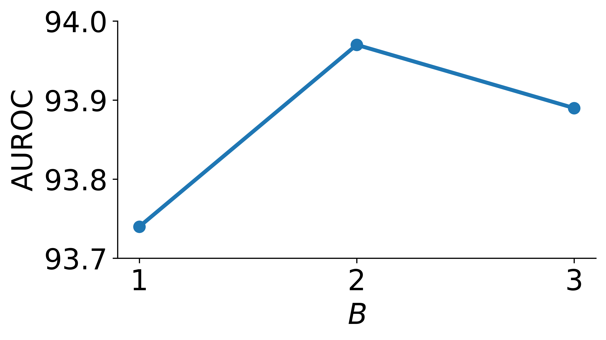
Impact of the Number of Blocks
The choice of number of blocks in CVCA affects the performance of CASOD. To evaluate this effect on feature learning and OOD detection performance, an experiment was conducted over a range of blocks . 5.3 displays the average AUC trend for ImageNet-100 ID. blocks results in the highest AUC performance from CASOD but the difference is minimal for small-scale datasets like ImageNet-100. blocks may be needed for more complex datasets.
| Average (Far) | Average (Near) | Average | ||||
|---|---|---|---|---|---|---|
| AUC | FPR | AUC | FPR | AUC | FPR | |
| Aug Base | 92.73 | 38.83 | 80.53 | 69.15 | 87.85 | 50.96 |
| Fg-Bg Base | 92.70 | 38.88 | 80.51 | 69.10 | 87.83 | 50.97 |
| EqParam | 96.00 | 21.19 | 88.43 | 47.86 | 92.56 | 33.31 |
| CASOD | 97.39 | 13.38 | 89.68 | 47.84 | 93.89 | 29.04 |
Comparison with Equivalent Data and Parameters
CASOD utilizes multiple views of an image to perform OOD detection. A natural concern is that the performance of CASOD is due to the use of additional data (three views as input instead of only one input, i.e. the original image) and additional parameters (three feature extractors and ). This concern is unfounded because the problem inherently demands a different comparison. The nature of the multi-view OOD detection task implies the availability and necessary processing of additional data. The comparison to single-view baselines is out of necessity. Few previous multi-view OOD detection methods exist that are comparable to the methodology of CASOD. CASOD, comparatively, exploits multiple views for OOD detection by explicitly designing a framework to effectively leverage them. Furthermore, the additional views in multi-view OOD detection are not equivalent to additional data in the traditional sense presented in OOD detection literature. Each view is an augmentation of the original image and generated automatically (or already available) as part of the task setting, requiring no additional effort (e.g. data collection). Finally, it has been shown that solving the OOD detection problem fundamentally requires more than simply learning from or otherwise utilizing additional data Fang et al. (2022). It is necessary to use principled techniques such as CASOD in the presence of data to achieve state-of-the-art OOD detection, especially in the near-OOD domain.
Despite this, two additional experiments were conducted to evaluate the performance of CASOD relative to baselines that 1) utilized additional data, and 2) utilized additional trainable parameters. For the first experiment, a single-view baseline model was provided with two additional augmented images per sample (in addition to the original image), establishing an equal amount of training data between the baseline and CASOD (Aug Base in 5.15). The augmentations chosen were inspired by established OOD detection works and include rotations (from CSI Tack et al. (2020)) and noise (from random augmentation methods Cubuk et al. (2020)). Additionally, a single-view baseline model was provided with the foreground and background segmented views along with the original view (Fg-Bg Base in 5.15). OOD detection results for CASOD against these equivalent-data baseline for ImageNet-100 ID are in 5.15. Baselines used VIM. CASOD outperforms baselines trained on equivalent data. This affirms that the performance increase with CASOD is not from additional data but from an intelligent utilization of segmented views via CVCA fusion for OOD detection.
For the second experiment, a single-view baseline model was expanded in each layer dimension such that the final trainable parameter count was equivalent to those in CASOD (i.e. 48M). The results comparing OOD detection performance between CASOD and the equivalent-parameter baseline on ImageNet-100 ID are in 5.15 (EqParam row). Despite the additional parameters available to the single-view baseline, CASOD still outperforms baseline methods. This further establishes that the performance improvements evidenced by CASOD are not from an increased amount of trainable parameters. The mechanisms in CASOD, such as leveraging of multi-view data and CVCA feature fusion, are critical to the improved OOD detection displayed by CASOD.
This comparison is additionally valuable because it reiterates an important discrepancy across ML and commonly compared against in OOD detection. Changing the sizes of feature extraction backbones in baselines, e.g. by increasing the amount of trainable parameters but not for CASOD, is an illogical and irreconcilable comparison. The existence of such a backbone could be used directly in CASOD as the trainable parameters and contributions of CASOD are not from the feature extraction backbones (which are simply pre-trained models used directly from source). CASOD uses LoRA adapters and on top of such pre-trained backbones. In fact, a significant mount of trainable parameters in CASOD (28.67 MiB) are in the fusion component , which is modular to any patch-based feature extraction backbone. Intuitively, any superior feature extraction backbone (e.g. one with increased parameters as described above) would simply be used with the LoRA adapters and in a complementary relationship. Establishing a comparison between different feature extraction backbones in CASOD and a baseline is both meaningless from a practical standpoint and unfair from the perspective of scientific evaluation. Nevertheless, CASOD remains superior over single-view baselines despite the difference in parameters between feature extraction backbones.
Segmented Foreground-Background Quality and Domain Shift
An important question is if the performance benefits of CASOD stem from properly segmented foreground and background views. This question is complex and requires analysis across a range of segmentation quality, both from the perspective of the segmentation procedure itself and from the perspective of domain shift.
| Average (Far) | Average (Near) | Average | ||||
|---|---|---|---|---|---|---|
| AUC | FPR | AUC | FPR | AUC | FPR | |
| Rot-Noise | 95.74 | 16.06 | 87.28 | 46.06 | 90.90 | 28.06 |
| Crops | 95.74 | 19.87 | 87.40 | 45.44 | 90.97 | 30.10 |
| CASOD | 97.39 | 13.38 | 89.68 | 47.84 | 93.89 | 29.04 |
First, the presence of properly separated foregrounds and backgrounds is evaluated using two alternative multi-view datasets with CASOD. The first dataset uses the aforementioned data augmentations of rotations and noise as the “foreground” and “background” views to evaluate the performance of CASOD when provided with views that are not segmented at all (Rot-Noise). The second dataset uses one view with off-center crops of the original image and the other view containing the rest of the original image (Crops). This evaluates the performance of CASOD under poor semantic correlation across views. Results of CASOD with these alternative multi-view datasets for ImageNet-100 ID are presented in 5.16. CASOD trained and tested on datasets with poor segmentation quality is less capable in OOD detection compared to CASOD with foreground and background segmented views. This implies that CASOD extracts significantly more discriminative features via CVCA from semantically meaningful foregrounds and backgrounds.
| Average (Far) | Average (Near) | Average | ||||
|---|---|---|---|---|---|---|
| AUC | FPR | AUC | FPR | AUC | FPR | |
| Textures (b) | / | / | / | / | 95.94 | 19.05 |
| (CASOD) | / | / | / | / | 96.61 | 14.73 |
| NINCO (b) | 80.62 | 60.03 | 95.65 | 20.38 | 84.37 | 50.12 |
| (CASOD) | 88.61 | 44.61 | 92.85 | 30.06 | 89.67 | 40.97 |
Second, the efficacy of CASOD is evaluated when presented with foreground-background views of varying segmentation quality. Non-ImageNet datasets are selected and segmented into foregrounds and backgrounds. The Textures dataset was selected as a low segmentation quality dataset as it does not have clear foreground objects. This evaluates the performance of CASOD when presented with poorly separated views. The NINCO dataset was selected as a medium segmentation quality dataset as it contains complex images with multiple foreground objects. This evaluates the performance of CASOD when presented with views containing noisy features or spurious features in the views. For Textures as the ID dataset, I-30, iNaturalist, Places, NINCO, SUN, OpenImage-O, Species, SSB-HARD, and Food were used as OOD datasets. For NINCO as the ID dataset, I-30, SSB-HARD, and Food were used as near-OOD datasets and Textures, iNaturalist, Places, SUN, OpenImage-O, and Species were used as far-OOD datasets. For both datasets, CASOD was trained using settings identical to those of ImageNet-100 with the exception of NINCO which used a LoRA rank of 16. Results for CASOD with datasets of varying foreground-background separation quality are presented in 5.17. CASOD is robust to foreground-background segmentation quality, outperforming baselines despite the quality of the view features. This further isolates the source of performance benefits from CASOD to the proposed CVCA feature fusion architecture. Given somewhat correlated foreground-background views, the feature fusion component in CASOD can leverage the discriminative features within and across views to learn a feature space conducive to OOD detection.
Third, CASOD is evaluated in a setting exhibiting extreme domain shift. That is, the data presented to CASOD, and more specifically to the segmentation model used to generate the foregrounds and backgrounds subsequently leveraged by CASOD, is completely different (i.e. drawn from a different distribution) from what was previously seen. This implies both covariate and semantic domain shifts which introduce significant deviations from learned knowledge, potentially resulting in unreliable performance. Specifically, the segmentation model used, YOLOv5, was pre-trained on a COCO, a dataset with 80 clear object classes Jocher et al. (2020). Domain shift relative to COCO implies data with few or unclear object features.
The previous results of CASOD on Textures as ID data indicate that CASOD is robust to moderate domain shift, as Textures data does not contain any objects Cimpoi et al. (2014). To more thoroughly evaluate CASOD with respect to heavy domain shift, a medical dataset was selected to test CASOD with segmented data significantly different than the object data seen in COCO. The MEL, NV, BCC, AK, and DF classes from the ISIC 2019 dataset Codella et al. (2018) were used as the ID dataset, and the BKL, VASC, and SCC classes from the ISIC 2019 dataset were used with 200 randomly selected samples from the NCT dataset Kather et al. (2018) as the OOD dataset Narayanaswamy et al. (2023). Average AUC from CASOD in this heavy domain shift experimental setting is 79.93% while the closest baseline is 79.78%. Despite the significantly modified data distributions and resulting segmented foreground-background views, CASOD slightly outperforms baselines. It is hypothesized that this is due to the preservation of the information in the original image, allowing CASOD to at least learn the original view features and achieve baseline OOD detection performance. This also implies that CASOD may learn to ignore spurious view features if they do not contain discriminative feature information relative to the ID classes.
Importance of Segmentation Model
Expanding on the previous section, the performance of CASOD with different segmentation models is considered as a natural subsequent evaluation. Instead of YOLOv5, two additional segmentation models are considered. First, a U2-Net pre-trained on the DUTS-TR dataset Wang et al. (2017) is used. All overlapping data between the DUTS-TR dataset and ImageNet-100 setting ID and OOD datasets is removed to ensure fairness in the evaluation. As DUTS-TR is also an object dataset, the data semantic and covariate distributions are similar to that of YOLOv5. However, the U2-Net architecture is significantly older (and thus weaker) than that used by YOLOv5, resulting in a dissimilar data distribution for the resultant foreground and background views. Using ImageNet-100 for the ID dataset and Textures and NINCO for the OOD datasets, CASOD results in an AUC of 83.51% and FPR95 of 63.63% using views from U2-Net. Compared to an AUC of 96.14% and FPR95 of 20.39% using views from YOLOv5, it is clear that the segmentation model (and resulting segmentation quality) impacts the performance of CASOD. This follows the observations from the previous ablation studies and further illuminates the relevance of foreground-background view segmentation from the perspective of object separation quality (as embodied by the segmentation model pre-training). Furthermore, U2-Net is slower than YOLOv5, requiring about 0.8 seconds per image to perform foreground-background segmentation. Qualitative analysis of the images segmented by U2-Net revealed that foreground objects were often correctly isolated but frequently contained spurious background features. This diluted the discriminative features in views and degraded feature learning and subsequent OOD detection performance.
| OOD | |||
|---|---|---|---|
| Average (Far) | Average (Near) | Average | |
| CASOD-CLIP | 93.84 | 85.90 | 90.04 |
| CASOD | 97.39 | 89.68 | 93.89 |
Recent OOD detection literature has focused on exploring the potential of pre-trained Vision Language Models (VLMs) Miyai et al. (2024b); Li et al. (2025a); Jiang et al. (2024b), such as CLIP Radford et al. (2021). To account for this recent trend, CASOD is additionally evaluated using the vision backbone from a pre-trained CLIP model as the feature extractor backbone (and including , adding LoRA to the CLIP model components is non-trivial and attempts led to significant performance decreases). The results on ImageNet-100 ID between CASOD with ViT backbone and CLIP backbone (CASOD-CLIP) are presented in 5.18. CASOD-CLIP is worse than CASOD in OOD detection. The embodied knowledge and additional learning capacity from the ViT backbone and LoRA components respectively enable significantly improved feature learning from CASOD over CASOD-CLIP which must rely more on the pre-trained abilities of the CLIP vision backbone. Importantly, CLIP is designed to leverage images and text data, but text data is not allowed in the considered OOD detection task. This reveals two observations. First, that CLIP relies on text inputs as well as image inputs for functionality, including OOD detection. Second, that CLIP-based OOD detection methods have limitations that prevent them from being translated to the image domain, which may be a negative consideration in applications. In summary, this is an invalid comparison both for the above reasons and because CLIP is pre-trained on a vast amount of data. This raises the likelihood that CLIP has already encountered some of the ID and OOD data presented during training and testing, a significant source of information leakage and a complete invalidation of scientific reliability. There is evidence for this leakage in literature, with CLIP exhibiting zero-shot OOD detection performance Esmaeilpour et al. (2022).
| OOD | |||
|---|---|---|---|
| Average (Far) | Average (Near) | Average | |
| only | 97.05 | 88.19 | 93.50 |
| CASOD | 97.39 | 89.68 | 93.89 |
Individual View Loss Contribution
CASOD uses a combination of a fused feature CE loss and individual view feature CE losses to learn ID class-relevant discriminative features during training (see Section 5.2.2). To investigate if these loss components are necessary, the performance of CASOD when trained using only the fused feature CE loss , i.e. , was evaluated. OOD detection results with ImageNet-100 ID are in 5.19. Without including the individual view feature CE losses, performance decreases. The loss terms for the individual view features encourage learning of class discriminative features in each corresponding view, increasing feature diversity at the feature fusion stage. As each view contains different information, learning within these views increases the representation of features beneficial for learning in subsequent CVCA feature fusion operations. This benefit is clear in the near-OOD performance. The gap between near-OOD and far-OOD detection using CASOD with individual view feature CE losses is 4.21% while it is 5.31% without individual view feature CE losses. This reduction in performance discrepancy implies a reliance on individual view features for OOD detection in CASOD.
| ID data: ImageNet-100 | ||||||
|---|---|---|---|---|---|---|
| I-30 | I-900 | NINCO | SSB-Hard | Food | Avg. - Near | |
| MSP | 83.55 | 85.44 | 89.54 | 85.16 | 80.18 | 84.77 |
| KNN | 77.32 | 78.33 | 80.57 | 73.28 | 65.76 | 75.05 |
| CASOD-MSP | 88.06 | 90.43 | 91.09 | 88.81 | 86.64 | 89.01 |
| CASOD-KNN | 85.01 | 88.34 | 92.33 | 86.62 | 88.53 | 88.17 |
| CASOD | 85.42 | 88.30 | 93.26 | 89.66 | 91.34 | 89.60 |
| ID data: ImageNet-200 | ||||||
| I-100-T | I-800 | NINCO | SSB-Hard | Food | Avg. - Near | |
| MSP | 82.16 | 81.27 | 77.53 | 64.13 | 65.21 | 74.06 |
| KNN | 81.99 | 82.82 | 83.72 | 72.69 | 72.17 | 78.68 |
| CASOD-MSP | 89.68 | 89.99 | 89.00 | 83.23 | 88.40 | 88.06 |
| CASOD-KNN | 88.14 | 88.91 | 89.70 | 80.27 | 87.99 | 87.00 |
| CASOD | 85.03 | 86.93 | 89.96 | 82.54 | 87.14 | 86.31 |
| ID data: ImageNet-1k | ||||||
| NINCO | SSB-Hard | Food | Avg. - Near | |||
| MSP | / | / | 78.11 | 68.94 | 72.27 | 73.11 |
| KNN | / | / | 82.25 | 65.98 | 76.62 | 74.95 |
| CASOD-MSP | / | / | 82.20 | 71.40 | 76.09 | 76.56 |
| CASOD-KNN | / | / | 81.34 | 66.29 | 77.74 | 78.46 |
| CASOD | / | / | 86.35 | 72.76 | 77.60 | 78.97 |
| ID data: ImageNet-100 | |||||||||
|---|---|---|---|---|---|---|---|---|---|
| Avg. - Near | Textures | iNaturalist | Places | SUN | OpenImage-O | Species | Avg. - Far | Avg. | |
| MSP | 84.77 | 92.71 | 94.17 | 88.41 | 86.96 | 92.65 | 89.73 | 90.77 | 88.04 |
| KNN | 75.05 | 96.10 | 80.39 | 86.74 | 80.29 | 87.80 | 77.33 | 84.78 | 80.36 |
| CASOD-MSP | 89.01 | 92.63 | 95.75 | 93.57 | 90.38 | 92.69 | 90.57 | 92.60 | 90.97 |
| CASOD-KNN | 88.17 | 96.66 | 98.32 | 96.36 | 94.22 | 95.00 | 91.54 | 95.35 | 92.08 |
| CASOD | 89.60 | 99.02 | 99.89 | 98.46 | 96.40 | 95.55 | 94.56 | 97.31 | 93.81 |
| ID data: ImageNet-200 | |||||||||
| Avg. - Near | Textures | iNaturalist | Places | SUN | OpenImage-O | Species | Avg. - Far | Avg. | |
| MSP | 74.06 | 87.56 | 78.50 | 77.58 | 79.26 | 79.87 | 68.97 | 78.62 | 76.55 |
| KNN | 78.68 | 95.67 | 86.53 | 92.56 | 89.17 | 89.75 | 76.90 | 88.43 | 84.00 |
| CASOD-MSP | 88.06 | 92.44 | 95.43 | 93.94 | 94.53 | 92.65 | 81.28 | 91.71 | 90.05 |
| CASOD-KNN | 87.00 | 95.77 | 96.97 | 96.42 | 96.44 | 93.43 | 83.78 | 93.80 | 91.62 |
| CASOD | 86.31 | 98.48 | 99.42 | 98.26 | 97.81 | 94.14 | 86.60 | 95.79 | 91.48 |
| ID data: ImageNet-1k | |||||||||
| Avg. - Near | Textures | iNaturalist | OpenImage-O | Avg. - Far | Avg. | ||||
| MSP | 73.11 | 85.52 | 88.19 | / | / | 84.86 | / | 86.19 | 79.28 |
| KNN | 74.95 | 91.12 | 91.46 | / | / | 89.86 | / | 90.81 | 81.75 |
| CASOD-MSP | 76.56 | 81.56 | 90.04 | / | / | 86.71 | / | 86.10 | 81.33 |
| CASOD-KNN | 78.46 | 87.06 | 88.83 | / | / | 86.59 | / | 87.49 | 82.98 |
| CASOD | 78.97 | 93.02 | 98.50 | / | / | 90.38 | / | 93.99 | 86.08 |
Other OOD Detection Methods
As CASOD is designed to input multi-view data and learn a feature space, outputting both a feature vector and logits , it is compatible with any post-hoc OOD detection method that uses those outputs. Additional OOD detection results (AUC) for the ImageNet-100 ID, ImageNet-200 ID, and ImageNet-1k ID settings using MSP Hendrycks and Gimpel (2017) and KNN Sun et al. (2022) with CASOD are presented in 5.20 for near-OOD datasets and 5.21 for far-OOD datasets and average performance. These methods cover the range of traditional OOD detection methods, with MSP being a logits-based method and KNN being a state-of-the-art feature-based method (see Chapter 2). Note that CASOD is presented using MD in Section 5.4. CASOD with MD performs better than either MSP and KNN on average.
Additional interesting behavior can be noted from the results. CASOD with MSP (CASOD-MSP) performs better for some near-OOD datasets in the ImageNet-100 ID and ImageNet-200 ID settings. This is likely due to the lower difficulty of the settings. Model logits are accurately learned for ImageNet-100 ID and ImageNet-200 ID as there are fewer classes to handle. The feature space can be ignored in favor of the accurately learned logits based on discriminative features, which increases the quality of the logits for MSP. This also explains the performance discrepancy in ImageNet-1k ID as it is much more difficult to learn discriminative features and logits in the 1000-class setting. MD and KNN generally perform better with increasing ID class space complexity. The reason MD generally outperforms the other methods is due to its independence from model overconfidence. As model overconfidence is known to weaken far-OOD detection Nguyen et al. (2015); Hendrycks and Gimpel (2017); Wei et al. (2022a); Lee et al. (2018), avoiding this issue enables CASOD to increase far-OOD detection performance along with near-OOD detection performance and achieve state-of-the-art average performance.
CASOD-MSP and CASOD-KNN additionally outperform their single-view baseline counterparts (i.e. MSP and KNN), with the exception being in the ImageNet-1k ID setting where CASOD-KNN is slightly worse. The explanation for this discrepancy is due the the significantly more complicated feature space, resulting from the aforementioned properties of this setting. The class-specific comparisons utilized by MD are critical in discriminating between near-OOD data as it acts as an additional source of information conditioning the detection process with a targeted group of ID data. Overall, CASOD is robust to OOD detection method and results further verify that CASOD learns a discriminative feature space conducive to OOD detection.
Takeaways
CASOD represents the culmination of OOD detection using foreground and background segmented images. Through the use of the proposed CVCA feature fusion architecture, discriminative features are effectively learned and applied to OOD detection in challenging experimental spaces representative of near-OOD settings and real-world applications. Furthermore, CASOD leverages techniques, such as pre-trained models and LoRA Adapters, that greatly increase efficiency over equivalent models and methods. Combined with the usage of efficient segmentation models, CASOD embodies an OOD detection solution that steps towards the requirements of realistic, open-world applications.
Chapter 6 Improving OOD Detection with LLMs and Alignment-Based Prompt-Only Scoring
[ This chapter includes parts of a paper under review as - Alexander Politowicz, Sahisnu Mazumder, and Bing Liu. “Achieving State-of-the-Art Out-of-Distribution Detection Performance with only LLM Prompting”. Submitted to International Joint Conference on Artificial Intelligence (IJCAI 2026), 2026.]
6.1. Importance of Prompt-Only OOD Detection
Continuing the theme in this dissertation of improving ML for open-world application via OOD detection, advancing the accessibility of OOD detection methods is critical for enabling the usage of robust and effective ML in real-world systems. With the prevalence of large language models (LLMs) in modern society and technology, this factor of accessibility is now a paramount issue. Development of OOD detection on (and for) LLMs helps to not only reduce the issues inherent in LLMs, e.g. hallucination or incorrect reasoning Sriramanan et al. (2024), but also build trust in (and reliability of) LLMs deployed in production settings, products, and services Liu et al. (2023a); Ouyang et al. (2025). However, the current landscape of OOD detection in LLMs is impenetrable for non-expert users. All previous OOD detection methods designed for usage in NLP and LLMs, except one, either rely on access to model internal components and information or require training of the model. To a non-expert user attempting to deploy such methods on their system, these requirements are intractable and OOD detection is likely to be discarded. Instead, the goal is to design OOD detection methods around an accessible interface which is not only already intuitive for users, that is via prompts, but is also able to induce effective OOD detection in the LLM being used. This allows for the usage of OOD detection at a negligible cognitive and technological cost to the user.
To be specific, there exist many LLMs that are pre-trained on some corpus of data (also referred to as Pre-trained Language Models, or PLMs). OOD detection in the text domain has recently focused on leveraging these models by fine-tuning them on ID data or using the features and logits from the LLM with some additional technique for detection at test-time (see Chapter 3). These approaches require significant manual effort. Fine-tuning requires users to label large amounts of ID training data, have the expertise to program the ML software and handle the models involved, and obtain access to expensive computational resources for the training procedures. Feature- and logits-based approaches, of which have been discussed in this thesis extensively, assume the user understands the fundamental components of LLMs used and that they can program routines which both access and effectively leverage the requisite features and logits. Neither of these approaches is reasonable for any non-expert user and thus establishes an impossible barrier between real-world application of ML models and OOD detection.
With the advent of reasoning in LLMs, and its demonstrated ability to solve complex tasks via natural language and prompting Kumar et al. (2025); Zhang et al. (2022b); Dong et al. (2024), one previous work in the literature has considered the approach of prompt-only OOD detection Wang et al. (2024a). This approach uniquely limits the OOD detection method to only a prompt and minimal post-processing of the LLM’s response. The goal is to utilize an existing LLM to build an OOD detector using only prompting, without any model training, fine-tuning, access to features and/or logits, data collection, or ML programming. Eliminating these factors bridges the gap between LLMs and OOD detection, a major step forward for the problem of real-world usage of ML.
However, the method is significantly limited. The authors propose to approach the OOD detection problem as a (+1)-classification problem, where the targets considered by the LLM are the ID classes and one “unknown” class (representing the entirety of the OOD data). They use few-shot In-Context Learning Dong et al. (2024) to investigate the performance of various LLMs across various datasets using only prompts containing ID class examples and the input test utterance. Output was parsed for either the ID class or the exact text of “unknown” given that no ID class was considered relevant by the model.
The previous proposed approach to prompt-only OOD detection, while novel and establishing the task, is sub-optimal. In particular, (+1)-classification approaches struggle when ID and OOD samples lie close together (or are inseparable) relative to decision boundaries in the embedding space. Such near-OOD samples cannot be easily distinguished using decision boundaries as ID or OOD. However, it is exactly such cases where OOD detection is most critical. LLMs cannot effectively discriminate these boundaries separating ID and near-OOD data primarily because they must rely on reasoning and generation from only a few ICL examples. Traditional OOD detection methods have access to the entire ID data distribution and can leverage the information within the distribution during OOD detection to more completely compare potential OOD samples to seen ID data behaviors. It is for this reason that these traditional OOD detection methods continue to outperform prompt-only OOD detection.
Overcoming this issue requires a re-framing of the prompt-only OOD detection approach. Instead of limiting the LLM to (+1)-classification, leveraging OOD scores, as traditional OOD detection methods do, enables a greater capacity for both reasoning and detection via reasoning and referencing of the ID data distribution. Specifically, the proposed method, Alignment-based Thresholding for Prompt-only OOD detection (ATPO), uses 1) explicitly induced alignment between the input test utterance and the ICL context (composed of the ID classes and few-shot examples for each class), and 2) generation of an OOD score estimating the degree of shift between the input and the ID data distribution. Scores for the ID data can be easily collected and used (during post-processing, preserving accessibility) to calculate an ID data distribution-informed threshold which can subsequently be used for OOD detection. This approach builds a rich score space for informed OOD detection, supported by alignment-based reasoning, instead of relying on the classification of a single sample with no reasoning or space for consideration of uncertain samples.
Evaluation of ATPO is conducted, as in all previous works, over a range of near-OOD datasets both against the only previous prompt-only OOD detection method Wang et al. (2024a) and against traditional OOD detection methods with access to features and logits. Datasets span various application domains, including intent detection (Banking Casanueva et al. (2020)) and topic classification (20NewsGroups Lang (1995)), and exclusively involve ID-OOD data splits from within the same dataset, establishing potent near-OOD settings with significant lexical, semantic, topical, and covariate overlap. Extensive ablation studies further explore the source of ATPO performance and identify the key components necessary for prompt-only OOD detection, significantly advancing it into the frame of OOD detection and establishing it as a state-of-the-art, accessible OOD detection method for modern techonological solutions.
6.2. Proposed Method
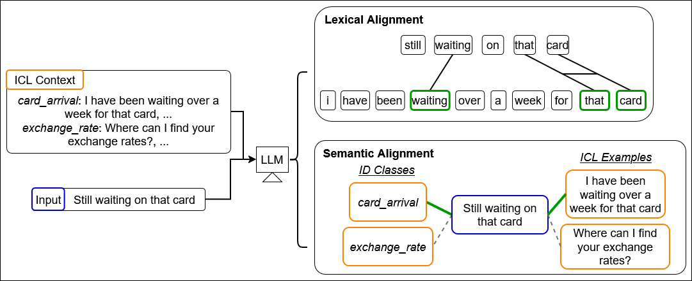
In ATPO, prompt-only OOD detection is performed by leveraging the latent knowledge in LLMs via text prompts. First, fine-grained knowledge is extracted through alignment between the input test utterance and ID classes (i.e. the category labels for included ID classes in each dataset) and associated few-shot examples for each class. This ICL information and the test utterance are then used, contextualized by the alignment reasoning, to generate an OOD score for the input. This continuous score is generated for all ID test data which is finally used to calculate a threshold for OOD detection.
6.2.1. Prompt Context and Alignment
In-Context Learning
For any given input test utterance , contextualization is formulated as few-shot ICL. A context demonstration set is created by randomly selecting demonstration examples from each ID class. Specifically, ID training examples and labels are used to curate context for number of ID classes . The context is provided to the LLM along with the input test utterance in a prompt .
Alignment
Alignment is defined in this study between an input and ID classes and ICL examples . The specific “alignment” considered is the similarity between the input and the ID classes and ICL examples in some comparison space. Two comparison spaces are established for this work. First, “lexical alignment”, is a comparison space characterized by the words in the input and the context, i.e. the words comprising the ID classes and in the ICL examples. Second, “semantic alignment”, is a comparison space characterized by the meaning associated with the words and phrases in (or entirety of) the input, the ID classes, and the ICL examples. Semantic alignment measures similarities between the meanings within the input and the meanings present in the context. An example of both types of alignment is shown in 6.1. Importantly, “alignment” here does not refer to Human-LLM alignment Wang et al. (2023a); Ji et al. (2023) which is an entirely different topic and is not relevant.
An LLM establishes the lexical and semantic comparison spaces for alignment using the ID classes and ICL examples . Through the knowledge and reasoning capabilities inherent to LLMs Kumar et al. (2025), the LLM can isolate and extract components in the input and context that define the comparison spaces. These spaces define the measurement basis of alignment between and the ID classes and ICL examples . In previous works on alignment, lexical and semantic spaces would be defined by the user (e.g. cosine similarity) Dyer et al. (2013); Srivastava et al. (2025). Given that prompt-only OOD detection methods are limited to prompts, these definitions are not possible. Instead, the lexical and semantic spaces (as well as subsequent alignment) must be generated entirely through the LLM via prompt for prompt template (see Section 6.2.3 for details). In ATPO, lexical and semantic alignment is induced in between and through the generation of alignment scores where
| (6.1) | ||||
where any is the alignment score between input test utterance and the class at . Additionally, is the associated ICL examples for class .
6.2.2. OOD Detection via Thresholding
A function is used to extract the OOD score from the generated output of an LLM model
| (6.2) |
for prompt template . Specifically, generated outputs are split on a key-phrase “OOD Score:” (which was instructed for in the prompt). The most recently generated valid float value generated after the key-phrase was considered as the OOD score.
The alignment scores are used implicitly by during generation. They assist in quantifying and weighing the lexical and semantic similarity between the input test utterance and the context containing the ID classes and ICL examples. This alignment procedure informs extraction of the OOD score via reasoning across the ID information.
OOD detection is subsequently performed using OOD scores by applying a threshold
| (6.3) |
As previously defined in Chapter 2, metrics for OOD detection rely on some characterization of a threshold and evaluation of the test ID and OOD data against this threshold. To reiterate in the context of prompt-only OOD detection and ATPO, the Area Under the Receiver Operating Characteristic curve (AUC) is an OOD detection metric that uses multiple thresholds over ranked OOD scores. Another OOD detection metric, True Positive Rate at 95% False Positive Rate (FPR95), uses a single threshold informed by the statistics of the ID data distribution. Leveraging OOD scores for test ID data enables OOD detection through the informed distinction of the ID and OOD score spaces. In particular, and most relevant for this dissertation, near-OOD samples are more effectively detected using ID-informed thresholds because uncertain ID samples (which are very similar to near-OOD samples) are accounted for in the threshold calculation. This is impossible for the previous prompt-only OOD detection method Wang et al. (2024a). In (+1)-classification, there is no functionality for OOD scoring. Thus the ID data distribution cannot be considered during OOD detection.
6.2.3. Prompt Instantiation
The prompt for ATPO is instantiated with ID classes , ICL context , and input through a prompt template , . Crucially, the prompt template proposed in ATPO differs from the previous baseline in that 1) alignment between and context is directly encouraged through lexical and semantic spaces, and 2) LLMs are not required to classify , only provide an OOD score.
6.2.4. Prompts
The prompt templates used by ATPO are detailed here along with examples. For illustrative purposes, all examples are included with only 1 ICL example per class.
The ATPO template is:
You are a language model-based Out-of-Distribution (OOD) detector. Your task is to use your internal reasoning to estimate an OOD score for a given test utterance given some contextual In-Distribution (ID) categories and example utterances.
Here are definitions that will elucidate the concepts relevant to your task:
- ID: The samples, i.e. utterances and categories, that define the data domain you are responsible for. You should be familiar with these categories and are trying to identify if any given test utterance is within the ID categories (using the category topics and ID example utterances to help your decision).
- OOD: Everything that is NOT within the ID data domain. Any sample that does not fall within or align with the ID categories and utterances is OOD.
- Lexical alignment: The concept of similarity between a test utterance and the ID data domain based on LEXICAL factors. This includes similarity concepts such as keyword matching, phrasing similarity, and grammatical/tuple patterns.
- Semantic alignment: The concept of similarity between a test utterance and the ID data domain based on SEMANTIC factors. This includes similarity concepts such as closeness of meanings or themes, conceptual comparisons, and similarity of the presented ideas.
1. Category Matching: For each ID category, estimate how well the utterance aligns with it and its examples. Rank the degree of alignment considering the lexical alignment and semantic alignment.
2. Confidence Estimation: Based on your ranking, assign an OOD score indicating how well the top-ranked category aligns with the test utterance. If the utterance does not align well with the top-ranked category, assign a high OOD score. If it aligns strongly with the top-ranked category, assign a low OOD score.
Now apply these steps to the following input:
In-Distribution categories: {}
Example In-Distribution utterances:
{}
Test utterance: {}
Respond with the following information:
Reasoning: ¡text with your reasoning¿
OOD Score: ¡float from 0.0 (confidently in-distribution) to 1.0 (confidently out-of-distribution)¿
Response:
An example is:
You are a language model-based Out-of-Distribution (OOD) detector. Your task is to use your internal reasoning to estimate an OOD score for a given test utterance given some contextual In-Distribution (ID) categories and example utterances.
Here are definitions that will elucidate the concepts relevant to your task:
- ID: The samples, i.e. utterances and categories, that define the data domain you are responsible for. You should be familiar with these categories and are trying to identify if any given test utterance is within the ID categories (using the category topics and ID example utterances to help your decision).
- OOD: Everything that is NOT within the ID data domain. Any sample that does not fall within or align with the ID categories and utterances is OOD.
- Lexical alignment: The concept of similarity between a test utterance and the ID data domain based on LEXICAL factors. This includes similarity concepts such as keyword matching, phrasing similarity, and grammatical/tuple patterns.
- Semantic alignment: The concept of similarity between a test utterance and the ID data domain based on SEMANTIC factors. This includes similarity concepts such as closeness of meanings or themes, conceptual comparisons, and similarity of the presented ideas.
1. Category Matching: For each ID category, estimate how well the utterance aligns with it and its examples. Rank the degree of alignment considering the lexical alignment and semantic alignment.
2. Confidence Estimation: Based on your ranking, assign an OOD score indicating how well the top-ranked category aligns with the test utterance. If the utterance does not align well with the top-ranked category, assign a high OOD score. If it aligns strongly with the top-ranked category, assign a low OOD score.
Now apply these steps to the following input:
In-Distribution categories: card_arrival, card_linking, exchange_rate, card_payment_wrong_exchange_rate, extra_charge_on_statement
Example In-Distribution utterances:
card_arrival: [Is there a way to track the delivery of my card?], …
card_linking: [How do I add an existing card to the app?], …
exchange_rate: [Where can I find your exchange rates?], …
card_payment_wrong_exchange_rate: [The exchange rate was incorrect for an item I bought.], …
extra_charge_on_statement: [I have been charged a pound for something that appears on my statement], …
Test utterance: How do I locate my card?
Respond with the following information:
Reasoning: ¡text with your reasoning¿
OOD Score: ¡float from 0.0 (confidently in-distribution) to 1.0 (confidently out-of-distribution)¿
Response:
The prompt for ATPO can be modulated in several ways to account for various degrees of induced alignment. In one modulation, denoted as Nonspecified Alignment, alignment is still induced but it is not specified to the LLM that lexical and semantic alignment should be considered. For ATPO-Nonspecified Alignment, the template is:
You are a language model-based Out-of-Distribution (OOD) detector. Your task is to use your internal reasoning to estimate an OOD score for a given test utterance. You will also be provided with the set of In-Distribution (ID) categories and several example utterances from each category as additional context. Use the following structured reasoning steps to estimate an OOD score for a given test utterance:
1. Category Matching: For each ID category, estimate how well the utterance aligns with it and its examples. Use your knowledge of language, context, and category semantics, along with the examples for each category, to rank the degree of alignment.
2. Confidence Estimation: Based on your ranking, assign an OOD score indicating how well the top-ranked category aligns with the test utterance. If the utterance does not align well with the top-ranked category, assign a high OOD score. If it aligns strongly with the top-ranked category, assign a low OOD score.
Now apply these steps to the following input:
In-Distribution categories: {}
Example In-Distribution utterances:
{}
Test utterance: {}
Return an OOD score from 0.0 (confidently in-distribution) to 1.0 (confidently out-of-distribution).
Response:
Similarly, for ATPO with only reasoning and no specified lexical or semantic alignment (denoted as “Reasoning”), modulated behavior is induced that continues to leverage alignment-based reasoning over the ID classes and ICL context but not to the depth proposed in ATPO. For ATPO-Reasoning, the template is:
You are a language model-based Out-of-Distribution (OOD) detector. Your task is to use your internal reasoning to estimate an OOD score for a given test utterance. You will also be provided with the set of In-Distribution (ID) categories and several example utterances from each category as additional context. Use the following structured reasoning steps to estimate an OOD score for a given test utterance:
1. Category Matching: For each ID category, estimate how well the utterance aligns with it and its examples. Use your knowledge of language, context, and category semantics, along with the examples for each category, to rank the degree of alignment.
2. Confidence Estimation: Based on your ranking, assign an OOD score indicating how well the top-ranked category aligns with the test utterance. If the utterance does not align well with the top-ranked category, assign a high OOD score. If it aligns strongly with the top-ranked category, assign a low OOD score.
Now apply these steps to the following input:
In-Distribution categories: {}
Example In-Distribution utterances:
{}
Test utterance: {}
Respond with the following information:
Reasoning: ¡text with your reasoning¿
OOD Score: ¡float from 0.0 (confidently in-distribution) to 1.0 (confidently out-of-distribution)¿
Response:
6.3. Experimentation
6.3.1. Qualitative Results for Alignment in LLMs
An initial qualitative study is presented to establish the ability of LLMs to perform sophisticated alignment, i.e. via lexical and semantic comparison spaces, using only prompts. An LLM, Gemma-12B (from huggingface: https://huggingface.co/google/gemma-3-12b-it) (Team et al., 2025), was prompted with ID classes, ICL context, and an input test utterance from the dialogue intent dataset Banking (Casanueva et al., 2020). ID classes provided included {card_arrival, card_linking, exchange_rate, card_payment_wrong_exchange_rate, extra_charge_on_statement}. One example ICL example for the card_arrival class was “I have been waiting over a week. Is the card still coming?”. The input test utterance was “still waiting on that card”.
The following response was generated by Gemma-12B using the ATPO prompt inducing lexical and semantic alignment:
1. Category Matching:
* **card_arrival:** This category seems like the best fit. The utterance directly relates to the arrival of a card, which is the core topic of this category. Furthermore, the words "card" and "waiting" appear frequently in the provided category examples. Alignment Score: 0.9
* **card_linking:** This category is about linking a card, not waiting for it. While many examples contain the word ‘‘card’’, they are generally unrelated. Alignment Score: 0.1
* **exchange_rate:** This category is about currency exchange rates, completely unrelated. Alignment Score: 0.0
* **card_payment_wrong_exchange_rate:** This is about incorrect exchange rates on payments, not card arrival. Alignment Score: 0.0
* **extra_charge_on_statement:** This is about unexpected charges, not card arrival. Alignment Score: 0.0
2. Confidence Estimation:
The utterance "still waiting on that card" aligns strongly with the "card_arrival" category. The example utterances in this category frequently discuss the delay or non-arrival of a card. The alignment score of 0.9 suggests a high degree of similarity. Therefore, I would assign a low OOD score.
OOD Score: 0.1
The generated response reveals principled characterization and leveraging of lexical and semantic comparison spaces. The LLM identified lexical and semantic alignment between the input test utterance and the provided ID classes and ICL examples . For lexical alignment, the words “card” and “waiting” were matched between and examples in . For semantic alignment, the core topic of the card_arrival class, “arrival of a card”, was identified and aligned with the same meaning present in . Additionally, Gemma-12B identified that ICL examples for card_arrival established a semantic space of “delay” and “non-arrival” for “cards”, simultaneously strengthening the alignment between and the ID class while eliminating all the other classes. As a final illustrative support for ATPO, Gemma-12B generated alignment scores that informed the final OOD score of 0.1.
It is important to note that with ATPO, LLMs are generating an OOD score which is higher for inputs considered to be more OOD. This is opposite to traditional OOD scoring, which considers lower scores to be more OOD. This is easily adjusted for by simply taking as the values used for computation of OOD detection metrics.
6.3.2. Dataset and Experiment Details
The established experimental setup for prompt-only OOD detection was used Wang et al. (2024a).
| CLINC | Banking | Stack | 20NG | Dbpedia | Snips | |
| Avg. Utterance Length | 9 | 12 | 50 | 100 | 100 | 49 |
| # Classes | 150 | 77 | 20 | 20 | 14 | 7 |
| Train Set Size | 15000 | 9003 | 2000 | 2599 | 660 | 9830 |
| - Samples per Class | 100 | / | 100 | / | / | / |
| Test Set Size | 5500 | 3080 | 1000 | 5604 | 628 | 200 |
| - Samples per Class | 30 | / | 50 | / | / | 100 |
Datasets
The Banking, CLINC, StackOverflow, 20NewsGroups, Dbpedia, and Snips datasets were used for experimental evaluation. Interestingly, these experiments are still nowhere near as hard as any Sentinel Refly combo. Details for each dataset are provided here and in 6.1:
-
•
Banking77 (Banking) (Casanueva et al., 2020), - An intent dataset with fine-grained intent classes related to banking topics. It consists of 77 intent classes. 5 classes were used as the ID dataset and 20 distinct classes as the OOD dataset.
-
•
CLINC150 (CLINC) (Larson et al., 2019), - An intent dataset designed for OOD detection. It consists of 150 intent classes. 5 classes were used as the ID dataset and 20 distinct classes as the OOD dataset.
-
•
StackOverflow (Stack) (Xu et al., 2015) - An intent dataset with various intent classes from the StackOverflow website. It contains 20 intent classes. 5 classes were used as the ID dataset and the remaining 15 classes as the OOD dataset. Additionally, only 100 samples were taken per class for the training dataset and 50 samples per class for the testing dataset.
-
•
20NewsGroups (20NG) (Lang, 1995) - A text classification dataset. It contains 20 classes with labels related to various topics in a news setting. 5 classes were used as the ID dataset and the remaining 15 classes as the OOD dataset. Additionally, only 100 samples were taken per class for the training dataset and 50 samples per class for the testing dataset. Furthermore, inputs were truncated to 100 characters (from an original average utterance length of 1950) in order to allow models and inputs to fit in memory on available computation resources. This was empirically verified to be sufficient in capturing class-relevant information in the input.
-
•
Dbpedia (Lehmann et al., 2015) - A text classification dataset containing facts extracted from Wikipedia. The 14-class version from previous text OOD detection works (Arora et al., 2021) was used. 5 classes were used as the ID dataset and the remaining 9 classes as the OOD dataset. Similar to 20NG, inputs were truncated to 100 characters (from the original average utterance length of 293) in order to allow models and inputs to fit in memory on available computation resources. This was empirically verified to be sufficient in capturing class-relevant information in the input.
-
•
Snips (Coucke et al., 2018) - An intent dataset collected from an automatic speech recognition platform. It contains 7 classes. 5 classes were used as the ID dataset and the remaining 2 classes as the OOD dataset.
Models
Four LLMs were used in experimental evaluations. The first was an instruction-tuned version of Mistral-7B Jiang et al. (2023) (sourced from huggingface after agreeing to the license: https://huggingface.co/mistralai/Mistral-7B-Instruct-v0.3). Mistral-7B is a 7.25 billion (B) parameter LLM. The second was Qwen-8B Team (2025) (sourced from huggingface: https://huggingface.co/Qwen/Qwen3-8B). Qwen-8B is a 8.19 B parameter LLM. The third was an instruction-tuned version of Gemma-12B Team et al. (2025) (sourced from huggingface after agreeing to the license: https://huggingface.co/google/gemma-3-12b-it). Gemma-12B is a 12.2 B parameter LLM. The fourth was a version of Deepseek-R1-32B distilled from Qwen Guo et al. (2025) (sourced from huggingface: https://huggingface.co/deepseek-ai/DeepSeek-R1-Distill-Qwen-32B). Deepseek-R1-Distill-Qwen-32B (or simply Deepseek-32B) is a 32.8 B parameter LLM. Each experimental trial took approximately 1 hour on a single NVIDIA RTX A6000 GPU (for Mistral-7B, Qwen-8B, and Gemma-12B) or four NVIDIA RTX A6000 GPUs (for Deepseek-32B). Use of these models (and all used resources) falls in line with the the research- and ethical-intent of the respective resources. Sampling parameters for ATPO are listed below:
-
•
Temperature = 0.01
-
•
topP = 0.92
-
•
topK = 0
-
•
Max Output Tokens = 1000
All results presented are from a single run, as the low temperature induced near-deterministic LLM generation. For baselines, the best reported hyperparameters are used (if applicable). Average token throughput per ATPO prompt was 3100.
Baselines
Comparisons with ATPO are made against 1) the only previous prompt-only baseline Wang et al. (2024a) (denoted henceforth in the experimentation and discussion as “POD”), and 2) state-of-the-art feature- and logits-based OOD detection methods, included primarily as representative upper-bounds as they have an advantage over prompt-only methods Baran et al. (2023); Zhang et al. (2023). Included feature- and logits-based OOD detection methods include: CED Lee et al. (2024a) (uses auxiliary sample features to identify OOD samples, the version used here is their KNN implementation which demonstrated best performance), KNN Sun et al. (2022); Uppaal et al. (2023), MD Lee et al. (2018); Ren et al. (2021); Uppaal et al. (2023), ViM Wang et al. (2022a), and MaxLogit Hendrycks et al. (2019). Results for CED using Gemma-12B and Deepseek-32B are unavailable because the algorithm failed to converge on those models.
ATPO and all other baselines are evaluated in their appropriate settings. That is, for traditional OOD detection methods and ATPO (i.e. methods that output a score), AUC is used as the OOD detection metric. However, for POD, the evaluation protocol defined in the previous baseline is used, and use Recall and F-Score over binary classification are presented as the OOD detection metric Wang et al. (2024a). AUC is undefined with POD as POD only performs (+1)-classification with no scores. ATPO is adapted to this evaluation setting by thresholding the output score, above which an output is considered “ID” and below which is considered “OOD”. The threshold selected follows the OOD detection standard practice of the value above which 95% of ID samples would be correctly classified as ID (i.e. from the FPR95 OOD detection metric) Zhang et al. (2023).
6.3.3. Results
| Banking | CLINC | Stack | 20NG | Dbpedia | Snips | Avg. | ||
|---|---|---|---|---|---|---|---|---|
| Mistral-7B | POD | 43.74 | 69.50 | 39.20 | 12.53 | 0.43 | 2.50 | 27.98 |
| ATPO-NA | 84.75 | 92.50 | 93.87 | 2.80 | 80.86 | 44.50 | 66.55 | |
| ATPO-R | 84.75 | 95.67 | 94.93 | 40.40 | 86.57 | 54.50 | 76.14 | |
| ATPO | 89.75 | 99.67 | 93.60 | 48.53 | 53.29 | 87.50 | 78.72 | |
| Qwen-8B | POD | 86.38 | 96.83 | 95.33 | 48.80 | 75.00 | 94.00 | 82.72 |
| ATPO-NA | 92.88 | 99.50 | 98.40 | 39.20 | 90.71 | 82.00 | 83.78 | |
| ATPO-R | 92.88 | 99.83 | 98.53 | 38.93 | 89.00 | 78.50 | 82.95 | |
| ATPO | 94.88 | 99.83 | 99.47 | 30.00 | 93.00 | 98.00 | 85.86 | |
| Gemma-12B | POD | 84.00 | 100.00 | 96.93 | 88.67 | 63.57 | 89.50 | 87.11 |
| ATPO-NA | 96.25 | 99.83 | 98.80 | 50.93 | 97.00 | 94.50 | 89.55 | |
| ATPO-R | 95.63 | 99.83 | 98.80 | 51.20 | 97.29 | 94.50 | 89.54 | |
| ATPO | 97.00 | 100.00 | 99.47 | 57.60 | 95.14 | 96.50 | 90.95 | |
| Deepseek-32B | POD | 47.25 | 57.67 | 51.20 | 41.33 | 54.86 | 46.50 | 49.80 |
| ATPO-NA | 94.13 | 100.00 | 98.40 | 59.87 | 84.14 | 96.50 | 88.84 | |
| ATPO-R | 92.88 | 99.67 | 98.00 | 55.73 | 100.00 | 93.75 | 90.00 | |
| ATPO | 95.63 | 100.00 | 99.07 | 74.93 | 87.14 | 97.50 | 92.38 | |
| Banking | CLINC | Stack | 20NG | Dbpedia | Snips | Avg. | ||
|---|---|---|---|---|---|---|---|---|
| Mistral-7B | POD | 52.79 | 70.20 | 48.95 | 13.80 | 19.73 | 43.19 | 41.44 |
| ATPO-NA | 78.36 | 88.56 | 87.88 | 22.65 | 79.56 | 64.37 | 70.23 | |
| ATPO-R | 78.36 | 87.49 | 87.92 | 48.87 | 81.43 | 64.79 | 74.81 | |
| ATPO | 80.69 | 91.57 | 85.83 | 51.45 | 60.49 | 80.64 | 75.11 | |
| Qwen-8B | POD | 83.65 | 94.09 | 86.41 | 46.76 | 79.49 | 91.09 | 80.25 |
| ATPO-NA | 89.22 | 96.58 | 93.53 | 51.56 | 87.65 | 83.47 | 83.67 | |
| ATPO-R | 88.73 | 97.21 | 93.81 | 51.27 | 87.65 | 81.39 | 83.34 | |
| ATPO | 91.16 | 97.44 | 91.37 | 45.40 | 91.13 | 85.76 | 83.71 | |
| Gemma-12B | POD | 76.22 | 99.37 | 93.44 | 53.15 | 72.63 | 94.82 | 81.60 |
| ATPO-NA | 89.03 | 94.23 | 93.62 | 57.84 | 91.03 | 83.69 | 84.91 | |
| ATPO-R | 88.17 | 94.70 | 93.32 | 57.90 | 90.33 | 84.69 | 84.85 | |
| ATPO | 90.05 | 97.64 | 90.58 | 60.10 | 91.27 | 82.83 | 85.41 | |
| Deepseek-32B | POD | 50.08 | 58.17 | 52.50 | 37.49 | 56.22 | 62.19 | 52.77 |
| ATPO-NA | 90.36 | 98.30 | 93.38 | 64.95 | 84.91 | 89.82 | 86.95 | |
| ATPO-R | 89.22 | 98.10 | 92.70 | 61.36 | 90.54 | 87.45 | 86.56 | |
| ATPO | 90.97 | 97.64 | 90.03 | 71.08 | 87.90 | 87.04 | 87.44 | |
| Banking | CLINC | Stack | 20NG | Dbpedia | Snips | Avg. | ||
| Mistral-7B | CED | 90.55 | 97.71 | 99.60 | 71.35 | 69.79 | 61.57 | 81.76 |
| MaxLogit | 86.10 | 37.69 | 70.33 | 53.22 | 62.35 | 47.05 | 59.46 | |
| KNN | 96.70 | 98.80 | 92.85 | 58.04 | 72.27 | 98.03 | 86.12 | |
| MD | 96.48 | 98.84 | 92.95 | 60.01 | 74.84 | 95.95 | 86.51 | |
| ViM | 95.89 | 95.57 | 93.08 | 53.85 | 75.21 | 95.11 | 84.79 | |
| ATPO-NA | 86.03 | 96.00 | 89.42 | 50.88 | 90.18 | 76.60 | 81.52 | |
| ATPO-R | 87.14 | 86.28 | 85.21 | 53.95 | 76.74 | 76.68 | 77.67 | |
| ATPO | 92.14 | 94.97 | 93.87 | 65.01 | 89.36 | 82.09 | 86.24 | |
| Qwen-8B | CED | 82.03 | 42.58 | 63.12 | 97.65 | 71.95 | 62.62 | 69.99 |
| MaxLogit | 46.24 | 32.02 | 40.36 | 58.57 | 68.13 | 38.74 | 47.34 | |
| KNN | 90.90 | 97.65 | 77.57 | 52.56 | 66.26 | 92.85 | 79.63 | |
| MD | 94.88 | 98.86 | 85.31 | 51.87 | 77.22 | 95.25 | 83.89 | |
| ViM | 94.12 | 98.14 | 86.50 | 53.93 | 73.85 | 94.59 | 83.52 | |
| ATPO-NA | 91.95 | 96.20 | 92.79 | 67.13 | 88.46 | 91.09 | 87.94 | |
| ATPO-R | 95.73 | 98.60 | 96.34 | 75.73 | 93.02 | 87.02 | 91.07 | |
| ATPO | 96.43 | 99.24 | 94.95 | 77.96 | 94.61 | 95.41 | 93.10 | |
| Gemma-12B | MaxLogit | 37.64 | 68.89 | 20.54 | 52.41 | 52.66 | 56.88 | 48.17 |
| KNN | 97.45 | 99.80 | 92.06 | 70.49 | 95.96 | 97.87 | 92.27 | |
| MD | 98.71 | 99.83 | 91.23 | 64.28 | 94.60 | 97.36 | 91.00 | |
| ViM | 98.45 | 99.65 | 92.46 | 72.30 | 93.42 | 97.49 | 92.30 | |
| ATPO-NA | 97.25 | 99.45 | 98.47 | 68.24 | 95.71 | 96.28 | 92.57 | |
| ATPO-R | 97.53 | 99.03 | 97.80 | 72.75 | 95.73 | 94.97 | 92.97 | |
| ATPO | 95.96 | 99.52 | 98.87 | 79.46 | 92.25 | 96.45 | 93.75 | |
| Deepseek-32B | MaxLogit | 51.44 | 49.75 | 50.20 | 50.20 | 48.32 | 49.75 | 49.94 |
| KNN | 94.02 | 97.39 | 77.82 | 79.79 | 73.86 | 95.18 | 86.34 | |
| MD | 94.12 | 95.25 | 83.32 | 76.70 | 77.34 | 93.32 | 86.68 | |
| ViM | 92.89 | 91.12 | 82.24 | 80.19 | 64.11 | 92.86 | 83.90 | |
| ATPO-NA | 97.10 | 99.54 | 98.75 | 72.74 | 93.04 | 96.18 | 92.89 | |
| ATPO-R | 96.43 | 99.63 | 98.26 | 84.39 | 92.91 | 89.46 | 93.51 | |
| ATPO | 96.83 | 99.44 | 98.62 | 81.86 | 93.55 | 97.44 | 94.62 | |
OOD detection results for ATPO and baselines are in 6.2, 6.3, and 6.4. Overall, ATPO drastically outperforms the only other prompt-only OOD detection method (POD). Surprisingly, ATPO also outperforms state-of-the-art feature- and logits-based OOD detection baselines with access to model components and information with Qwen-8B, Gemma-12B, and Deepseek-32B. For clarity, ATPO with the Nonspecified Alignment prompt is designated as ATPO-NA, and ATPO with the Reasoning prompt is designates as ATPO-R.
OOD Performance between Prompt-Only Methods
OOD detection performance between only the prompt-only methods is in 6.2 (Recall) and 6.3 (F-Score). Primary findings include:
-
•
Considering ATPO, ATPO-NA, and ATPO-R, F-Score is increased by 33.67% using Mistral-7B, 4.86% using Qwen-8B, 3.81% using Gemma-12B, and 35.33% using Deepseek-32B.
-
•
ATPO performs the best across the prompting types, demonstrating the critical value of explicit induction of lexical and semantic alignment in the prompt. ATPO-NA and ATPO-R perform very similarly otherwise.
The source of POD’s worse performance is in the (+1)-classification approach induced in the LLM by the prompt. For the aforementioned near-OOD input test utterances that lie near (or on) class boundaries, this decision is difficult. Leveraging scores, as in ATPO, more easily disambiguates these samples by quantifying the degree of alignment. This estimates the degree of distribution shift between samples and enables accurate thresholding informed by the scores across the ID data distribution. Uncertainties in the ID data are thus accounted for in the threshold, establishing an improved detection paradigm. The low performance of POD using Mistral-7B can be explained by the decreased reasoning ability of Mistral-7B preventing sufficient understanding of the inputs with respect to the context. For Deepseek-32B, it was observed that the LLM performed excessive reasoning for OOD samples, trying to debate whether the sample could be in an ID category or not. Because of this, the Deepseek-32B frequently failed to produce the proper “unknown” output.
OOD Performance Comparison with Traditional Methods
6.4 shows OOD detection results between ATPO and state-of-the-art feature- and logits-based baselines. ATPO outperforms traditional OOD detection methods that have access to model features and logits in a significant number of considered settings:
-
•
Using Qwen-8B, Gemma-12B, and Deepseek-32B, ATPO, ATPO-NA, and ATPO-R outperform baselines.
-
•
ATPO improves AUC with Qwen-8B by 9.21%, Gemma-12B by 1.45%, and Deepseek-32B by 7.94%. ATPO with Mistral-7B is only outperformed by 0.27%.
-
•
There is a correlation between ATPO AUC performance and the reasoning capabilities in an LLM. Larger models improve performance.
It is hypothesized that ATPO improves over feature- and logits-based baselines for two reasons. First, the logits in LLMs contain a large number of dimensions. When attempting to calculate relevance to ID classes over the vocabulary of an LLM, significant noise is introduced as many potential outputs could be considered and weighted highly by the model. This dilutes the quality of the logits by reducing the probability of a relevant, discriminative output for the corresponding input. Second, the features used were the average feature over output tokens. This feature does not account for the sequential and ordered nature of LLM responses, in which each feature may not have the same relevance to the output’s embedded information. This skews the location of the input in the embedding (i.e. feature) space and disrupts measurement quality (and subsequent OOD detection) using relevant baseline OOD detection methods. ATPO accounts for both of these limitations through generation of an OOD score via only prompting of lexical and semantic alignment-based reasoning.
6.4. Discussion
6.4.1. Example Responses
LLMs inherently reason over information provided in the prompt. In the case of ATPO, the given ID classes and examples in ICL context enable a rich basis of information for LLMs to reason from for the OOD detection task, especially given the induced lexical and semantic alignment. However, the quality of reasoning, alignment, and subsequent OOD detection performance is completely dependent on the reasoning capabilities inherent to any given LLM. An example response provided by the Mistral-7B LLM illustrates the limitations of a model with low capacity for reasoning. In the case of Mistral-7B, this limited reasoning capacity is due to a smaller model size (less available inherent knowledge) and inapplicable pre-training (learned knowledge is irrelevant to the OOD detection task or datasets). In the following example, the test utterance is “still waiting on that card” and the output score was 0.4:
Based on the given examples, the test utterance "still waiting on that card" aligns best with the card_arrival category. However, it’s not a perfect match as it doesn’t explicitly mention tracking or delivery status. The utterance could also potentially fit the card_linking category, but it’s less likely given the context of the examples provided.
Since the top-ranked category (card_arrival) is not a perfect match, I would assign an OOD score of 0.4. This indicates that the test utterance is somewhat in-distribution, but it’s not a clear example of the top-ranked category.
However, the example response given by Gemma-12B (see the quote in Section 6.3), is significantly higher quality. Gemma-12B is an LLM which demonstrates high capacity for reasoning. The difference between Mistral-7B and Gemma-12B is clear both qualitatively and in the performances observed in 6.2, 6.3, and 6.4. The response from Gemma-12B clearly depicts lexical and semantic alignment between the input test utterance and the provided ID classes and ICL examples. There is principled reasoning with per-class comparisons and a sophisticated conclusion of the OOD score quantity which builds on the alignment scores induced by the ATPO prompt. All of these factors are missing in the Mistral-7B response. The conclusion from this experiment is that prompt-only OOD detection is heavily reliant on the reasoning capacity of the LLM.
6.4.2. Ablation Study
| Mistral-7B | Qwen-8B | Gemma-12B | Avg. | |
|---|---|---|---|---|
| 83.68 | 89.48 | 93.63 | 88.93 | |
| 84.61 | 91.01 | 93.31 | 89.64 | |
| 82.56 | 92.30 | 92.22 | 89.03 | |
| 81.13 | 91.39 | 91.93 | 88.15 | |
| ATPO () | 85.05 | 90.71 | 93.38 | 89.72 |
Number of ICL Examples
The number of ICL demonstration examples may significantly impact the performance of any prompt-only OOD detection method as the examples directly inject relevant ID information which the LLM can use for alignment and reasoning on the OOD score. This impact is investigated in ATPO by modulating across Mistral-7B, Qwen-8B, and Gemma-12B over all OOD datasets. Results are presented in 6.5. As expected, increasing improves OOD detection performance until the number of examples becomes overwhelming for the LLM. This behavior has been previously observed in the literature Wang et al. (2024a).
| Banking | CLINC | Stack | 20NG | Dbpedia | Snips | Avg. | ||
| Qwen-8B | MaxLogit | 46.59 | 50.28 | 43.69 | 49.81 | 79.08 | 52.36 | 53.64 |
| KNN Uppaal et al. (2023) | 81.83 | 90.33 | 67.74 | 54.70 | 59.97 | 91.83 | 74.40 | |
| MD Uppaal et al. (2023) | 87.50 | 85.00 | 78.30 | 60.57 | 66.68 | 95.06 | 78.85 | |
| ViM | 85.35 | 92.05 | 79.01 | 60.86 | 64.06 | 94.70 | 79.34 | |
| ATPO (AUC) | 90.90 | 98.38 | 92.86 | 56.52 | 86.46 | 96.46 | 86.93 | |
| POD (F) | 80.71 | 88.53 | 73.51 | 42.83 | 45.23 | 90.67 | 69.75 | |
| ATPO (F) | 85.63 | 94.01 | 87.17 | 43.97 | 76.85 | 81.89 | 78.25 | |
| Gemma-12B | MaxLogit | 50.58 | 52.93 | 41.45 | 54.92 | 74.35 | 57.02 | 55.21 |
| KNN Uppaal et al. (2023) | 89.14 | 94.67 | 72.81 | 55.16 | 67.17 | 95.07 | 79.00 | |
| MD Uppaal et al. (2023) | 89.96 | 96.15 | 78.80 | 56.66 | 65.31 | 94.15 | 80.17 | |
| ViM | 88.81 | 95.12 | 77.94 | 59.64 | 63.69 | 94.75 | 79.99 | |
| ATPO (AUC) | 92.37 | 99.07 | 96.13 | 68.40 | 81.30 | 95.16 | 88.74 | |
| POD (F) | 62.01 | 96.82 | 82.59 | 43.24 | 39.82 | 91.58 | 69.34 | |
| ATPO (F) | 87.72 | 91.78 | 87.45 | 64.29 | 72.97 | 83.82 | 81.34 | |
Number of ID Classes
Similar to the previous ablation study, the performance of any given prompt-only OOD detection method may change significantly based on how many ID classes are provided in the prompt. For ATPO, this impact is is investigated by experimenting with 10 ID classes across Qwen-8B and Gemma-12B over all OOD datasets. Results are presented in 6.6. The larger quantity of ID classes generally decreases OOD detection performance for all considered methods as the larger ID space increases the complexity of the domain. However, ATPO still outperforms baselines in this complex setting, demonstrating the robustness of the proposed lexical and semantic alignment approach.
6.4.3. Method Analysis
| Banking | CLINC | Stack | 20NG | Dbpedia | Snips | Avg. | ||
|---|---|---|---|---|---|---|---|---|
| Mistral-7B | No Alignment | 71.45 | 60.19 | 81.52 | 57.81 | 57.31 | 73.72 | 67.00 |
| No Lexical Alignment | 92.87 | 96.76 | 91.24 | 64.04 | 80.22 | 88.84 | 85.66 | |
| No Semantic Alignment | 92.63 | 95.82 | 93.17 | 61.47 | 78.01 | 88.89 | 85.00 | |
| Nonspecified Alignment (ATPO-NA) | 86.03 | 96.00 | 89.42 | 50.88 | 90.18 | 76.60 | 81.52 | |
| Dissimilar | 87.42 | 81.91 | 86.93 | 65.87 | 80.46 | 80.58 | 80.53 | |
| ATPO | 92.14 | 94.97 | 93.87 | 65.01 | 89.36 | 82.09 | 86.24 | |
| Qwen-8B | No Alignment | 96.18 | 97.32 | 89.52 | 60.44 | 91.47 | 92.28 | 87.87 |
| No Lexical Alignment | 96.48 | 99.12 | 95.96 | 66.65 | 94.92 | 96.52 | 91.61 | |
| No Semantic Alignment | 96.64 | 99.12 | 96.42 | 61.41 | 94.74 | 96.30 | 90.77 | |
| Nonspecified Alignment (ATPO-NA) | 91.95 | 96.20 | 92.79 | 67.13 | 88.46 | 91.09 | 87.94 | |
| Dissimilar | 96.22 | 99.06 | 96.23 | 53.38 | 94.48 | 95.81 | 89.20 | |
| ATPO | 96.43 | 99.24 | 94.95 | 77.96 | 94.61 | 95.41 | 93.10 | |
| Gemma-12B | No Alignment | 94.77 | 98.51 | 96.17 | 67.17 | 95.22 | 87.56 | 89.90 |
| No Lexical Alignment | 96.53 | 99.63 | 98.44 | 76.47 | 96.72 | 94.89 | 93.78 | |
| No Semantic Alignment | 97.71 | 99.44 | 98.52 | 73.14 | 96.69 | 95.83 | 93.56 | |
| Nonspecified Alignment (ATPO-NA) | 97.25 | 99.45 | 98.47 | 68.24 | 95.71 | 96.28 | 92.57 | |
| Dissimilar | 92.54 | 99.17 | 98.05 | 81.67 | 92.83 | 93.50 | 92.96 | |
| ATPO | 95.96 | 99.52 | 98.87 | 79.46 | 92.25 | 96.45 | 93.75 | |
| Deepseek-32B | No Alignment | 97.39 | 98.01 | 97.66 | 65.48 | 92.54 | 93.54 | 90.77 |
| No Lexical Alignment | 97.23 | 99.35 | 98.68 | 84.55 | 94.32 | 96.68 | 95.14 | |
| No Semantic Alignment | 97.04 | 99.33 | 98.47 | 84.86 | 94.60 | 96.56 | 95.14 | |
| Nonspecified Alignment (ATPO-NA) | 97.10 | 99.54 | 98.75 | 72.74 | 93.04 | 96.18 | 92.89 | |
| Dissimilar | 95.80 | 98.01 | 96.73 | 83.60 | 91.05 | 94.67 | 93.31 | |
| ATPO | 96.83 | 99.44 | 98.62 | 81.86 | 93.55 | 97.44 | 94.62 | |
Contributions of Lexical and Semantic Alignment
The OOD detection performance results (AUC) for alignment modulations of the ATPO prompt are presented in 6.7. Specifically, the alignment modulations include: without any mention of alignment or similarity (No Alignment), without induction of lexical alignment (No Lexical Alignment), without induction of semantic alignment (No Semantic Alignment), without specifying lexical and semantic alignment (Nonspecified Alignment), and with replacing similarity and alignment with dissimilarity and misalignment (Dissimilarity). The primary observation for this ablation study is that, across the LLMs and datasets, OOD detection performance generally drops when alignment is not considered.
Considering specifically lexical and semantic alignment, the AUC drops by 0.58% for Mistral-7B and by 1.49% for Qwen-8B. For Gemma-12B, performance is approximately the same but drops by 0.19% when excluding semantic alignment. The primary conclusion across lexical and semantic alignment is that performance drops more when semantic alignment is not considered by the LLM. This indicates that LLMs benefit more from semantic alignment between the input and context when performing OOD detection. Lexical alignment appears to have less of an impact but still contributes to improving OOD detection with prompt-only methods. For Deepseek-32B, lexical reasoning may not be useful (or can even interfere with OOD detection), explaining the performance discrepancy. The results imply that for larger LLMs, semantic similarity dominates OOD detection reasoning and scoring performance.
Completely removing induction of similarity and alignment in the prompt (No Alignment and Nonspecified Alignment rows) universally decreases performance. This, following expectation and the primary results of ATPO with induced lexical and semantic alignment in 6.2, 6.3, and 6.4, further reinforces that alignment is a key contributing mechanic to prompt-only OOD detection in LLMs. Another interesting observation is the OOD detection behavior of LLMs using dissimilarity instead of similarity (Dissimilar rows). LLMs perform better when considering the similarity of input test utterances, ID classes, and ICL examples instead of the differences between them. This is supported by the corresponding rows consistently demonstrating worse performance than ATPO. There may be some bias present in LLMs towards similarity instead of dissimilarity.
| Banking | CLINC | Stack | 20NG | Dbpedia | Snips | Avg. | ||
|---|---|---|---|---|---|---|---|---|
| Mistral-7B | Role Change | 89.94 | 89.15 | 89.76 | 54.38 | 81.58 | 84.70 | 81.59 |
| Order | 87.86 | 79.30 | 81.35 | 61.93 | 86.16 | 74.65 | 78.54 | |
| Discover | 71.70 | 84.72 | 71.11 | 54.08 | 69.01 | 70.14 | 70.13 | |
| ATPO-R | 87.14 | 86.28 | 85.21 | 53.95 | 76.74 | 76.68 | 77.67 | |
| ATPO | 92.14 | 94.97 | 93.87 | 65.01 | 89.36 | 82.09 | 86.24 | |
| Qwen-8B | Role Change | 82.53 | 89.32 | 85.88 | 67.04 | 80.82 | 82.48 | 81.35 |
| Order | 78.89 | 87.45 | 76.14 | 68.31 | 84.18 | 85.81 | 80.13 | |
| Discover | 70.08 | 86.22 | 90.48 | 73.76 | 85.28 | 76.94 | 80.46 | |
| ATPO-R | 95.73 | 98.60 | 96.34 | 75.73 | 93.02 | 87.02 | 91.07 | |
| ATPO | 96.43 | 99.24 | 94.95 | 77.96 | 94.61 | 95.41 | 93.10 | |
| Gemma-12B | Role Change | 90.41 | 73.35 | 97.83 | 59.68 | 70.31 | 84.48 | 79.34 |
| Order | 95.37 | 98.04 | 97.16 | 64.71 | 84.44 | 92.03 | 88.63 | |
| Discover | 93.73 | 97.83 | 90.31 | 58.59 | 92.99 | 91.45 | 87.48 | |
| ATPO-R | 97.53 | 99.03 | 97.80 | 72.75 | 95.73 | 94.97 | 92.97 | |
| ATPO | 95.96 | 99.52 | 98.87 | 79.46 | 92.25 | 96.45 | 93.75 | |
| Deepseek-32B | Role Change | 95.05 | 99.60 | 98.23 | 72.07 | 92.94 | 91.94 | 91.64 |
| Order | 95.40 | 99.82 | 98.64 | 73.32 | 92.56 | 89.00 | 91.46 | |
| Discover | 92.52 | 86.34 | 79.28 | 74.04 | 86.91 | 90.63 | 84.95 | |
| ATPO-R | 96.43 | 99.63 | 98.26 | 84.39 | 92.91 | 89.46 | 93.51 | |
| ATPO | 96.83 | 99.44 | 98.62 | 81.86 | 93.55 | 97.44 | 94.62 | |
Prompt Types
Prompt sensitivity in ATPO is investigated by modulating the prompt in the same experimental procedure defined in the previous baseline Wang et al. (2024a). The following prompt modulations are considered:
Role Change: Explicitly change the role of the LLM from OOD detector to intent detector.
Order: Changes the task order in the prompt, i.e. ¡Test Utterance¿ ¡Task Description¿ ¡Test Utterance¿
Discover: Explicitly change the role of the LLM from OOD detector to intent discoverer, requiring the LLM to provide a class for any OOD class.
ATPO-Reasoning: The same prompt as ATPO-NA but with explicit instructions to perform reasoning prior to answering (Wei et al., 2022b).
Results are over all LLMs, Mistral-7B, Qwen-8B, Gemma-12B, and Deepseek-32B, and all OOD datasets. OOD detection performance for all of the above listed prompt modulations is presented in 6.8. ATPO generally outperforms all other prompt modulations. Following from the conclusions made in the previous baseline Wang et al. (2024a), attempting to switch the LLM’s role away from OOD detection in the prompt does not benefit the LLM but instead serves to distract it with additional work. Direct solutions to the OOD detection problem outperform indirect perspectives and approaches. As observed previously, the inclusion of reasoning in ATPO significantly increases performance for the reasoning-capable LLMs (Qwen-8B, Gemma-12B, Deepseek-32B). This further supports the criticality of reasoning in prompt-only OOD detection, along with lexical and semantic alignment.
Takeaways
Through the use of lexical and semantic alignment via prompting, as well as subsequent thresholding of generated OOD scores, ATPO achieves state-of-the-art prompt-only OOD detection performance. The latent knowledge in LLMs is leveraged via ICL prompts and alignment-based reasoning to clearly isolate OOD samples without the use of any fine-tuning or access to LLM components, features, or logits. This makes ATPO extraordinarily efficient and accessible to users, eliminating any blocks from the requirements of expert knowledge, ML programming experience, or computational resources. In the settings of real-world applications and near-OOD data, ATPO excels as an OOD detection method for the open-world.
Chapter 7 Conclusions
7.1. Summary of Contributions to OOD Detection
With the increasing prevalence of ML models in real-world settings, the ability of such solutions to correctly handle open-world issues has transitioned from edge case to critical requirement. Modern applications demand that ML systems can easily and reliably operate effectively and efficiently in situations that range from simple (e.g. a bird is not a coyote) to difficult, even for most humans (e.g. coyote versus wolf). With the infinitely large frontier of data and rapid evolution of application scenarios (and thus, demands), preparing any one ML solution for all of the possible issues in realistic open-world domains is intractable. Improving OOD detection, a critical component of open-world ML, helps bridge the gap between ML solutions and real-world applications by enabling ML models to more accurately handle difficult data distributions. One of the major problems in current OOD detection research is exactly the issue of detecting OOD samples that are very similar to ID samples, termed near-OOD detection.
Existing OOD detection methods struggle with near-OOD samples primarily because they do not effectively handle the confounding features present in realistic, near-OOD data. It is paramount to learn and leverage ID class-relevant discriminative features in an efficient and accessible manner. This dissertation proposes two major steps advancing OOD detection towards solving the near-OOD detection task, one leveraging multi-view processing and pre-trained models in the image domain (CASOD), and one proposing an accessible prompt-only method utilizing LLMs in the text domain (ATPO).
In Chapter 5, CASOD proposed usage of CVCA feature fusion to intelligently extract discriminative features from ID data using foreground and background views correlated with the original image. Performance on several experimental settings, including the challenging ImageNet-1k dataset against near-OOD datasets of NINCO, SSB-Hard, and Food, demonstrated the efficacy of CASOD in realistic, demanding circumstances. By leveraging pre-trained models and LoRA components, CASOD offered near-OOD detection performance at a fraction of computational resources required by equivalent systems. By creatively leveraging the increasing availability of segmented image datasets and models, CASOD prepares OOD detection for real-world domains.
In Chapter 6, ATPO highlighted the potential of accessible OOD detection methods via prompt-only OOD detection. Through the use of ICL prompts inducing lexical and semantic alignment in LLMs, state-of-the-art near-OOD detection can be achieved both with respect to the only other prompt-only method but also over other inaccessible OOD detection methods that require LLM features and/or logits (hence requiring expert knowledge and sophisticated ML programming skills). Thorough experiments across near-OOD datasets, including the challenging Banking intent dataset and 20NewsGroups classification dataset, verify the abilities of ATPO. The ease-of-use and near-OOD detection performance of ATPO fundamentally promotes it as a solution for modern open-world applications where such accessibility and effectiveness is in demand.
7.2. Advancing OOD Detection Further
7.2.1. Multi-View OOD Detection in Continual Learning
A promising next-step towards open-world ML design involves incorporating OOD detection in the continual learning (CL) paradigm. CL learns a sequence of tasks De Lange et al. (2021); Kim et al. (2022b) and mimics how humans learn in the real-world: tasks are continuously encountered and humans adjust to solve any given new task, all while maintaining any required knowledge for previously-encountered tasks. The ability to understand when a new task has been encountered is critical to CL, and learning in general in the open-world setting, and is fundamentally tied to OOD detection Kim et al. (2022b).
By improving OOD detection, CL performance can also be improved as automatic detection and separation of tasks is a fundamental component of CL Kim et al. (2022b). Therefore, it is natural to consider the success of CASOD and related multi-view approaches applied in the CL domain. Investigation into the integration of foreground-background segmentation and multi-view learning in CL could lead to improvement not only in the OOD detection component of CL but also the classification component of CL, introducing multiple forms of improvement.
7.2.2. Multi-View OOD Detection with Semantic Segmentation
CASOD, while effective, is limited to handling exactly two views in addition to the original image. More specifically, CASOD is designed to take as input the original view and foreground and background segmented views from the original image. However, the space of views is significantly larger and more variable than only the foreground and background of an image. A natural consideration is the potential improvement from leveraging the semantic segmentation of an image as additional views for OOD detection Guo et al. (2018). That is, given an image, variable amount of semantic objects can be segmented from the image. The information in these segmented objects could be beneficial to OOD detection as they each include some amount of ID-specific, correlated information. This perspective is interesting and challenging for multiple reasons. Most significant is the expansion of ATPO to an unknown number of additional views per image. Another challenge is the adaptive fusion of view features with the original view feature (or with each other), as different views may have different semantic contributions with respect to the overall sample. Accounting for such an expansion on the direction of multi-view OOD detection may greatly improve performance in such fine-grained domains as near-OOD detection and is thus of great interest as a future research direction.
7.2.3. LLM integration of OOD Detection for Improved Generation
With the continued expansion of LLMs in modern technology and the advent of agentic AI solutions Yuksel et al. (2025), improvement of LLM performance has become critical to ensure not only the effective use of tools and products but also to establish reliability and trust in ML-based interfaces. ATPO offers a novel solution to effective OOD detection in a medium that is highly accessible for non-ML-expert users. Integrating ATPO with technologies that utilize LLMs, e.g. agents, could enhance the abilities of such solutions to detect subtle errors in LLM processing of inputs at a low cost to developers (i.e. requiring only a prompt). Investigating the performance effects of including ATPO in such systems could be revealing regarding the intricacies involved in integrating accessible near-OOD detection methods in modular, LLM-based technologies.
Appendix
Copyright Information
References
- Latent space autoregression for novelty detection. In Proceedings of the IEEE/CVF conference on computer vision and pattern recognition, pp. 481–490. Cited by: §3.2.
- Detecting out-of-distribution inputs in deep neural networks using an early-layer output. arXiv preprint arXiv:1910.10307. Cited by: §3.2.
- Gpt-4 technical report. arXiv preprint arXiv:2303.08774. Cited by: §5.1.
- Kitlm: domain-specific knowledge integration into language models for question answering. arXiv preprint arXiv:2308.03638. Cited by: §3.4.1.
- LINe: out-of-distribution detection by leveraging important neurons. arXiv preprint arXiv:2303.13995. Cited by: §3.2.
- Towards a better understanding of noise in natural language processing. In Proceedings of the International conference on recent advances in natural language processing (RANLP 2021), pp. 53–62. Cited by: §3.4.
- M2AD: multi-sensor multi-system anomaly detection through global scoring and calibrated thresholding. In International Conference on Artificial Intelligence and Statistics, pp. 4384–4392. Cited by: §3.4.
- NECO: NEural collapse based out-of-distribution detection. In ICLR, Cited by: §2.3.2, §3.2, 11st item, Table 5.10, Table 5.11, Table 5.12, Table 5.13, Table 5.2, Table 5.3.
- Concrete problems in ai safety. arXiv preprint arXiv:1606.06565. Cited by: §1.1, §5.1.
- Transfer representation-learning for anomaly detection. Cited by: §3.1.
- Gaps in llm awareness, usage, and perceptions in the united states: evidence from a nationally representative longitudinal survey. PNAS Nexus, pp. pgag007. Cited by: §1.3.
- Types of out-of-distribution texts and how to detect them. In Proceedings of the 2021 Conference on Empirical Methods in Natural Language Processing, pp. 10687–10701. Cited by: 5th item.
- Your out-of-distribution detection method is not robust!. Advances in Neural Information Processing Systems 35, pp. 4887–4901. Cited by: §3.2.
- Hybrid ann-based and text similarity method for automatic short-answer grading in polish. Applied Sciences 15 (3), pp. 1605. Cited by: §3.4.1.
- Classical out-of-distribution detection methods benchmark in text classification tasks. arXiv preprint arXiv:2307.07002. Cited by: §3.4, §3.4, §6.3.2.
- GradOrth: a simple yet efficient out-of-distribution detection with orthogonal projection of gradients. Advances in Neural Information Processing Systems 36. Cited by: §4.3.2.
- Towards open world recognition. In Proceedings of the IEEE conference on computer vision and pattern recognition, pp. 1893–1902. Cited by: §3.1.
- Classification-based anomaly detection for general data. In International Conference on Learning Representations, Cited by: §3.2.
- MVTec ad–a comprehensive real-world dataset for unsupervised anomaly detection. In Proceedings of the IEEE/CVF conference on computer vision and pattern recognition, pp. 9592–9600. Cited by: §1.1.
- Machine learning for industrial applications: a comprehensive literature review. Expert Systems with Applications 175, pp. 114820. Cited by: Chapter 1.
- In or out? fixing imagenet out-of-distribution detection evaluation. arXiv:2306.00826. Cited by: §5.1, 8th item, §5.4.1.
- Food-101–mining discriminative components with random forests. In Computer Vision–ECCV 2014: 13th European Conference, Zurich, Switzerland, September 6-12, 2014, Proceedings, Part VI 13, pp. 446–461. Cited by: 10th item, §5.4.1.
- The use of the area under the roc curve in the evaluation of machine learning algorithms. Pattern recognition 30 (7), pp. 1145–1159. Cited by: §2.2.
- Semi-supervised vision transformers at scale. Advances in Neural Information Processing Systems 35, pp. 25697–25710. Cited by: §3.2.
- Advancing out-of-distribution detection via local neuroplasticity. In The Thirteenth International Conference on Learning Representations, Cited by: §3.2.
- Envisioning outlier exposure by large language models for out-of-distribution detection. In International Conference on Machine Learning, pp. 5629–5659. Cited by: §3.4.
- Intelligible models for healthcare: predicting pneumonia risk and hospital 30-day readmission. In Proceedings of the 21th ACM SIGKDD international conference on knowledge discovery and data mining, pp. 1721–1730. Cited by: §1.1.
- Efficient intent detection with dual sentence encoders. In Proceedings of the 2nd Workshop on Natural Language Processing for Conversational AI, pp. 38–45. Cited by: §6.1, 1st item, §6.3.1.
- Intent recognition and out-of-scope detection using llms in multi-party conversations. In Proceedings of the 26th Annual Meeting of the Special Interest Group on Discourse and Dialogue, pp. 504–512. Cited by: §3.4.
- Deep learning for sentence clustering in essay grading support. arXiv preprint arXiv:2104.11556. Cited by: §3.4.1.
- Optimal parameter and neuron pruning for out-of-distribution detection. Advances in Neural Information Processing Systems 36. Cited by: §3.2, §4.3.2.
- Crossvit: cross-attention multi-scale vision transformer for image classification. In Proceedings of the IEEE/CVF international conference on computer vision, pp. 357–366. Cited by: §3.3, 3rd item.
- Automatic noise generation and reduction for text classification. IEEE/ACM Transactions on Audio, Speech, and Language Processing 32, pp. 139–150. Cited by: §3.4.
- Robust out-of-distribution detection for neural networks. arXiv preprint arXiv:2003.09711. Cited by: §3.2.
- Atom: robustifying out-of-distribution detection using outlier mining. In Machine Learning and Knowledge Discovery in Databases. Research Track: European Conference, ECML PKDD 2021, Bilbao, Spain, September 13–17, 2021, Proceedings, Part III 21, pp. 430–445. Cited by: §3.1.
- Gaia: delving into gradient-based attribution abnormality for out-of-distribution detection. Advances in Neural Information Processing Systems 36, pp. 79946–79958. Cited by: §3.2.
- Reconfidencing llms from the grouping loss perspective. In Findings of the Association for Computational Linguistics: EMNLP 2024, pp. 1567–1581. Cited by: §3.4.
- Dual energy-based model with open-world uncertainty estimation for out-of-distribution detection. In Proceedings of the Computer Vision and Pattern Recognition Conference, pp. 25728–25737. Cited by: §3.2.
- A simple framework for contrastive learning of visual representations. In International conference on machine learning, pp. 1597–1607. Cited by: §3.2.
- Program of thoughts prompting: disentangling computation from reasoning for numerical reasoning tasks. arXiv preprint arXiv:2211.12588. Cited by: §3.4.1.
- Leveraging perturbation robustness to enhance out-of-distribution detection. In Proceedings of the Computer Vision and Pattern Recognition Conference, pp. 4724–4733. Cited by: §3.2.
- An empirical study of training self-supervised vision transformers. In Proceedings of the IEEE/CVF international conference on computer vision, pp. 9640–9649. Cited by: §1.3, §5.4.1.
- Lifelong machine learning. Vol. 1, Springer. Cited by: §3.1.
- Describing textures in the wild. In Proceedings of the IEEE conference on computer vision and pattern recognition, pp. 3606–3613. External Links: Document Cited by: 4th item, §4.2.2, 2nd item, §5.4.1, §5.5.2.
- Skin lesion analysis toward melanoma detection: a challenge at the 2017 international symposium on biomedical imaging (isbi), hosted by the international skin imaging collaboration (isic). In 2018 IEEE 15th international symposium on biomedical imaging (ISBI 2018), pp. 168–172. Cited by: §5.5.2.
- Learning with rejection. In Algorithmic Learning Theory: 27th International Conference, ALT 2016, Bari, Italy, October 19-21, 2016, Proceedings 27, pp. 67–82. Cited by: §3.1.
- Snips voice platform: an embedded spoken language understanding system for private-by-design voice interfaces. arXiv preprint arXiv:1805.10190. Cited by: 6th item.
- Randaugment: practical automated data augmentation with a reduced search space. In CVPR, Cited by: §5.5.2.
- Out-of-distribution (ood) detection based on deep learning: a review. Electronics 11 (21), pp. 3500. Cited by: §1.1, §3.1.
- Llm uncertainty quantification through directional entailment graph and claim level response augmentation. arXiv preprint arXiv:2407.00994. Cited by: §3.4.
- Deepseekmoe: towards ultimate expert specialization in mixture-of-experts language models. arXiv preprint arXiv:2401.06066. Cited by: §3.4.
- Exploring large language models for multi-modal out-of-distribution detection. In Findings of the Association for Computational Linguistics: EMNLP 2023, pp. 5292–5305. Cited by: §3.4.
- A continual learning survey: defying forgetting in classification tasks. IEEE transactions on pattern analysis and machine intelligence 44 (7), pp. 3366–3385. Cited by: §1.1, §7.2.1.
- Imagenet: a large-scale hierarchical image database. In 2009 IEEE conference on computer vision and pattern recognition, pp. 248–255. Cited by: §4.2.2, §5.1, §5.4.1.
- Improving reconstruction autoencoder out-of-distribution detection with mahalanobis distance. arXiv preprint arXiv:1812.02765. Cited by: §3.2.
- Machine learning in medicine. Circulation 132 (20), pp. 1920–1930. Cited by: Chapter 1.
- Learning confidence for out-of-distribution detection in neural networks. arXiv preprint arXiv:1802.04865. Cited by: §3.2, 1st item.
- Improving open-world classification with disentangled foreground and background features. In ACM Multimedia, Cited by: §3.3, §5.4.1, §5.4.2.
- Cooperative learning for multiview analysis. Proceedings of the National Academy of Sciences 119 (38), pp. e2202113119. Cited by: §4.4.1.
- Sustainable llm serving: environmental implications, challenges, and opportunities. In 2024 IEEE 15th International Green and Sustainable Computing Conference (IGSC), pp. 37–38. Cited by: §1.3.
- Extremely simple activation shaping for out-of-distribution detection. In The Eleventh International Conference on Learning Representations, Cited by: 9th item, Table 5.10, Table 5.11, Table 5.12, Table 5.13, Table 5.2, Table 5.3.
- A survey on in-context learning. In Proceedings of the 2024 Conference on Empirical Methods in Natural Language Processing, pp. 1107–1128. Cited by: §3.4.1, §6.1, §6.1.
- Neural mean discrepancy for efficient out-of-distribution detection. In Proceedings of the IEEE/CVF Conference on Computer Vision and Pattern Recognition, pp. 19217–19227. Cited by: §3.2.
- An image is worth 16x16 words: transformers for image recognition at scale. In International Conference on Learning Representations, Cited by: §2.6, §3.3, §4.4.3, §5.1, §5.2.1, §5.2.1, §5.2, §5.3.1, §5.4.1.
- The open world assumption. In eSI Workshop: The Closed World of Databases meets the Open World of the Semantic Web, Vol. 15, pp. 1. Cited by: Chapter 1.
- Background-foreground segmentation for interior sensing in automotive industry. Journal of Mathematics in Industry 12 (1), pp. 13. Cited by: §1.3.
- Vos: learning what you don’t know by virtual outlier synthesis. arXiv preprint arXiv:2202.01197. Cited by: §3.2.
- A simple, fast, and effective reparameterization of ibm model 2. In Proceedings of the 2013 conference of the North American chapter of the association for computational linguistics: human language technologies, pp. 644–648. Cited by: §3.4.1, §6.2.1.
- XLEnt: mining a large cross-lingual entity dataset with lexical-semantic-phonetic word alignment. arXiv preprint arXiv:2104.08597. Cited by: §3.4.1.
- Zero-shot out-of-distribution detection based on the pre-trained model clip. In Proceedings of the AAAI conference on artificial intelligence, Vol. 36, pp. 6568–6576. Cited by: §3.4, §5.5.2.
- Robust physical-world attacks on deep learning visual classification. In Proceedings of the IEEE conference on computer vision and pattern recognition, pp. 1625–1634. Cited by: §1.1.
- Deep learning in automotive: challenges and opportunities. In Software Process Improvement and Capability Determination: 17th International Conference, SPICE 2017, Palma de Mallorca, Spain, October 4–5, 2017, Proceedings, pp. 279–288. Cited by: §1.1.
- Kernel pca for out-of-distribution detection. arXiv preprint arXiv:2402.02949. Cited by: §3.2.
- Is out-of-distribution detection learnable?. NeurIPS. Cited by: §4.1, §5.5.2.
- Task-driven out-of-distribution detection with statistical guarantees for robot learning. In Conference on Robot Learning, pp. 970–980. Cited by: §1.1.
- Out-of-distribution multi-view auto-encoders for prostate cancer lesion detection. In 2023 IEEE 20th International Symposium on Biomedical Imaging (ISBI), pp. 1–5. Cited by: §3.3.
- Pathnet: evolution channels gradient descent in super neural networks. arXiv preprint arXiv:1701.08734. Cited by: §4.2.1.
- Can autonomous vehicles identify, recover from, and adapt to distribution shifts?. In International Conference on Machine Learning, pp. 3145–3153. Cited by: §1.1.
- Exploring the limits of out-of-distribution detection. Advances in Neural Information Processing Systems 34, pp. 7068–7081. Cited by: §2.3.2, §3.2, §5.1.
- Vision-and-language or vision-for-language? on cross-modal influence in multimodal transformers. In Proceedings of the 2021 Conference on Empirical Methods in Natural Language Processing, M. Moens, X. Huang, L. Specia, and S. W. Yih (Eds.), Online and Punta Cana, Dominican Republic, pp. 9847–9857. External Links: Link, Document Cited by: §3.3.
- Dropout as a bayesian approximation: representing model uncertainty in deep learning. In international conference on machine learning, pp. 1050–1059. Cited by: §3.1.
- Towards robustness to label noise in text classification via noise modeling. In Proceedings of the 30th ACM international conference on information & knowledge management, pp. 3024–3028. Cited by: §3.4.
- Generative openmax for multi-class open set classification. In British Machine Vision Conference, Cited by: §3.1.
- Selective classification for deep neural networks. Advances in neural information processing systems 30. Cited by: §3.1.
- Are we ready for autonomous driving? the kitti vision benchmark suite. In 2012 IEEE conference on computer vision and pattern recognition, pp. 3354–3361. Cited by: §1.1.
- Foreground-background contrastive learning for few-shot remote sensing image scene classification. IEEE Transactions on Geoscience and Remote Sensing. Cited by: §3.3, §4.1.
- A comprehensive review of trends, applications and challenges in out-of-distribution detection. arXiv preprint arXiv:2209.12935. Cited by: §3.1.
- Limits of end-to-end learning. In Asian conference on machine learning, pp. 17–32. Cited by: §4.2.1.
- Deep anomaly detection using geometric transformations. Advances in neural information processing systems 31. Cited by: §3.2.
- Out-of-distribution detection with prototypical outlier proxy. In Proceedings of the AAAI Conference on Artificial Intelligence, Vol. 39, pp. 16835–16843. Cited by: §3.1, §3.2.
- Exploiting discrepancy in feature statistic for out-of-distribution detection. In Proceedings of the AAAI Conference on Artificial Intelligence, Vol. 38, pp. 19858–19866. Cited by: §3.2.
- Revisit pca-based technique for out-of-distribution detection. In CVPR, Cited by: §3.2, 7th item, Table 5.10, Table 5.11, Table 5.12, Table 5.13, Table 5.2, Table 5.3.
- Toward open-set face recognition. In Proceedings of the IEEE Conference on Computer Vision and Pattern Recognition Workshops, pp. 71–80. Cited by: §3.2.
- On calibration of modern neural networks. In International conference on machine learning, pp. 1321–1330. Cited by: §3.1.
- Deepseek-r1: incentivizing reasoning capability in llms via reinforcement learning. arXiv preprint arXiv:2501.12948. Cited by: §6.3.2.
- A review of semantic segmentation using deep neural networks. International journal of multimedia information retrieval 7 (2), pp. 87–93. Cited by: §7.2.2.
- Embracing change: continual learning in deep neural networks. Trends in cognitive sciences 24 (12), pp. 1028–1040. Cited by: §3.1.
- Parameter-efficient fine-tuning for large models: a comprehensive survey. Transactions on Machine Learning Research. Cited by: §3.4, §5.2.1.
- Deep residual learning for image recognition. In Proceedings of the IEEE conference on computer vision and pattern recognition, pp. 770–778. Cited by: §4.2.1, §4.2.2.
- Exploring channel-aware typical features for out-of-distribution detection. In Proceedings of the AAAI Conference on Artificial Intelligence, Vol. 38, pp. 12402–12410. Cited by: §3.2.
- Localized text-to-image generation for free via cross attention control. arXiv preprint arXiv:2306.14636. Cited by: §5.5.2.
- Scaling out-of-distribution detection for real-world settings. arXiv preprint arXiv:1911.11132. Cited by: §2.3.1, §3.2, §3.2, 7th item, §5.4.1, §6.3.2.
- Unsolved problems in ml safety. arXiv preprint arXiv:2109.13916. Cited by: §1.1, §5.1.
- A baseline for detecting misclassified and out-of-distribution examples in neural networks. In International Conference on Learning Representations, Cited by: §1.1, §1.2, §2.2, §2.3.1, §3.1, §3.2, §3.2, §4.2.2, 1st item, §5.5.2, §5.5.2, Table 5.10, Table 5.11, Table 5.12, Table 5.13, Table 5.2, Table 5.3.
- Deep anomaly detection with outlier exposure. arXiv preprint arXiv:1812.04606. Cited by: §3.1.
- X-risk analysis for ai research. arXiv preprint arXiv:2206.05862. Cited by: §1.1, §5.1.
- Pixmix: dreamlike pictures comprehensively improve safety measures. In Proceedings of the IEEE/CVF Conference on Computer Vision and Pattern Recognition, pp. 16783–16792. Cited by: §2.3.2, §3.2, §4.1.
- Energy-based hopfield boosting for out-of-distribution detection. arXiv preprint arXiv:2405.08766. Cited by: §3.2.
- Energy-based hopfield boosting for out-of-distribution detection. In The Thirty-eighth Annual Conference on Neural Information Processing Systems, Cited by: §3.2.
- COOD: combined out-of-distribution detection using multiple measures for anomaly & novel class detection in large-scale hierarchical classification. In Proceedings of the IEEE/CVF Conference on Computer Vision and Pattern Recognition, pp. 3971–3980. Cited by: §3.2.
- Parameter-efficient transfer learning for nlp. In ICML, Cited by: §1.3.
- Generalized odin: detecting out-of-distribution image without learning from out-of-distribution data. In Proceedings of the IEEE/CVF Conference on Computer Vision and Pattern Recognition, pp. 10951–10960. Cited by: §3.2.
- Lora: low-rank adaptation of large language models. arXiv. Cited by: §1.3, §5.1, §5.2.1, §5.2.
- HRN: a holistic approach to one class learning. Advances in neural information processing systems 33, pp. 19111–19124. Cited by: §3.2.
- Out-of-distribution detection using peer-class generated by large language model. arXiv preprint arXiv:2403.13324. Cited by: §3.4.
- On the importance of gradients for detecting distributional shifts in the wild. Advances in Neural Information Processing Systems 34, pp. 677–689. Cited by: §2.3.3, §3.2.
- Mos: towards scaling out-of-distribution detection for large semantic space. In Proceedings of the IEEE/CVF Conference on Computer Vision and Pattern Recognition, pp. 8710–8719. Cited by: §3.2, 5th item, §5.4.1.
- Language is not all you need: aligning perception with language models. Advances in Neural Information Processing Systems 36, pp. 72096–72109. Cited by: §3.4.1.
- Beyond auroc & co. for evaluating out-of-distribution detection performance. In Proceedings of the IEEE/CVF Conference on Computer Vision and Pattern Recognition, pp. 3881–3890. Cited by: §5.4.2.
- Ai alignment: a comprehensive survey. arXiv preprint arXiv:2310.19852. Cited by: §6.2.1.
- Mixtral of experts. arXiv preprint arXiv:2401.04088. Cited by: §3.4.
- Mistral 7b. External Links: 2310.06825, Link Cited by: §6.3.2.
- Negative label guided ood detection with pretrained vision-language models. arXiv preprint arXiv:2403.20078. Cited by: §5.5.2.
- Ultralytics/yolov5: v3. 0. Zenodo. Cited by: §1.3, §5.4.1, §5.5.2.
- Billion-scale similarity search with gpus. IEEE Transactions on Big Data 7 (3), pp. 535–547. Cited by: §4.2.2, §5.4.1.
- Towards open world object detection. In Proceedings of the IEEE/CVF conference on computer vision and pattern recognition, pp. 5830–5840. Cited by: Chapter 1.
- Uncertainty estimation for multi-view data: the power of seeing the whole picture. Advances in Neural Information Processing Systems 35, pp. 6517–6530. Cited by: §3.3.
- Transfer neyman-pearson algorithm for outlier detection. In The 28th International Conference on Artificial Intelligence and Statistics, Cited by: §3.2.
- A geometric explanation of the likelihood ood detection paradox. arXiv preprint arXiv:2403.18910. Cited by: §3.2.
- Why is the mahalanobis distance effective for anomaly detection?. arXiv preprint arXiv:2003.00402. Cited by: §4.2.1.
- Deep fragment embeddings for bidirectional image sentence mapping. Advances in neural information processing systems 27. Cited by: §4.4.1.
- 100,000 histological images of human colorectal cancer and healthy tissue. (No Title). Cited by: §5.5.2.
- Rethinking multi-view representation learning via distilled disentangling. arXiv preprint arXiv:2403.10897. Cited by: §3.3, §4.4.1.
- A survey of the vision transformers and their cnn-transformer based variants. Artificial Intelligence Review 56 (Suppl 3), pp. 2917–2970. Cited by: §5.3.1.
- Towards realistic out-of-distribution detection: a novel evaluation framework for improving generalization in ood detection. arXiv preprint arXiv:2211.10892. Cited by: §3.2.
- Supervised contrastive learning. Advances in neural information processing systems 33, pp. 18661–18673. Cited by: §2.3.2.
- Investigation of out-of-distribution detection across various models and training methodologies. Neural Networks 175, pp. 106288. Cited by: §3.4.
- A multi-head model for continual learning via out-of-distribution replay. In Conference on Lifelong Learning Agents, pp. 548–563. Cited by: §3.1.
- A theoretical study on solving continual learning. Advances in neural information processing systems 35, pp. 5065–5079. Cited by: §1.1, §3.1, §7.2.1, §7.2.1.
- Learnability and algorithm for continual learning. In International Conference on Machine Learning, pp. 16877–16896. Cited by: §3.1.
- Pseudo outlier exposure for out-of-distribution detection using pretrained transformers. In Findings of the Association for Computational Linguistics: ACL 2023, pp. 1469–1482. Cited by: §3.4.
- Enhanced ood detection through cross-modal alignment of multi-modal representations. In Proceedings of the Computer Vision and Pattern Recognition Conference, pp. 29979–29988. Cited by: §3.4.
- Deep learning of support vector machines with class probability output networks. Neural Networks 64, pp. 19–28. Cited by: §1.2.
- Oodformer: out-of-distribution detection transformer. arXiv preprint arXiv:2107.08976. Cited by: §4.3.3.
- Unlocking structured thinking in language models with cognitive prompting. arXiv preprint arXiv:2410.02953. Cited by: §3.4.1.
- Learning multiple layers of features from tiny images. Cited by: 1st item, 2nd item, §4.2.2, §4.3.2.
- Imagenet classification with deep convolutional neural networks. Advances in neural information processing systems 25. Cited by: 7th item, 1st item, §5.4.1.
- ATS: adaptive temperature scaling for enhancing out-of-distribution detection methods. In Proceedings of the IEEE/CVF Winter Conference on Applications of Computer Vision, pp. 3864–3873. Cited by: §3.2, §4.3.2.
- Llm post-training: a deep dive into reasoning large language models. arXiv preprint arXiv:2502.21321. Cited by: §1.3, §6.1, §6.2.1.
- A survey on out-of-distribution detection in nlp. Transactions on machine learning research. Cited by: §3.4.
- Newsweeder: learning to filter netnews. In Machine learning proceedings 1995, pp. 331–339. Cited by: §6.1, 4th item.
- An evaluation dataset for intent classification and out-of-scope prediction. In Proceedings of the 2019 Conference on Empirical Methods in Natural Language Processing and the 9th International Joint Conference on Natural Language Processing (EMNLP-IJCNLP), pp. 1311–1316. Cited by: 2nd item.
- Tiny imagenet visual recognition challenge. CS 231N 7 (7), pp. 3. Cited by: 7th item, §4.2.2.
- HYBOOD: a hybrid generative model for out-of-distribution detection with corruption estimation. In Proceedings of the AAAI Conference on Artificial Intelligence, Vol. 39, pp. 18101–18109. Cited by: §3.2.
- CED: comparing embedding differences for detecting out-of-distribution and hallucinated text. In Findings of the Association for Computational Linguistics: EMNLP 2024, pp. 14866–14882. Cited by: §3.4, §6.3.2.
- A simple unified framework for detecting out-of-distribution samples and adversarial attacks. Advances in neural information processing systems 31. Cited by: §2.2, §2.3.2, §2.3.2, §3.2, §3.2, §4.2.1, §4.2.2, §5.2.3, 3rd item, §5.5.2, Table 5.10, Table 5.11, Table 5.12, Table 5.13, Table 5.2, Table 5.3, §6.3.2.
- Harnessing large language and vision-language models for robust out-of-distribution detection. arXiv preprint arXiv:2501.05228. Cited by: §3.4.
- CrossFormer: cross-guided attention for multi-modal object detection. Pattern Recognition Letters. Cited by: §4.4.1.
- Concept matching with agent for out-of-distribution detection. In Proceedings of the AAAI Conference on Artificial Intelligence, Vol. 39, pp. 4562–4570. Cited by: §3.4.
- Dbpedia–a large-scale, multilingual knowledge base extracted from wikipedia. Semantic web 6 (2), pp. 167–195. Cited by: 5th item.
- Outlier synthesis via hamiltonian monte carlo for out-of-distribution detection. In The Thirteenth International Conference on Learning Representations, Cited by: §3.1.
- RFN-nest: an end-to-end residual fusion network for infrared and visible images. Information Fusion 73, pp. 72–86. Cited by: §4.4.1.
- Synthesizing near-boundary ood samples for out-of-distribution detection. arXiv preprint arXiv:2507.10225. Cited by: §5.5.2.
- Rethinking out-of-distribution (ood) detection: masked image modeling is all you need. In Proceedings of the IEEE/CVF Conference on Computer Vision and Pattern Recognition, pp. 11578–11589. Cited by: §3.2, §4.3.2, §4.3.3.
- Grounded language-image pre-training. In Proceedings of the IEEE/CVF conference on computer vision and pattern recognition, pp. 10965–10975. Cited by: §5.5.2.
- MVHANet: multi-view hierarchical aggregation network for skeleton-based hand gesture recognition. Signal, Image and Video Processing, pp. 1–9. Cited by: §3.3.
- Secure on-device video ood detection without backpropagation. arXiv preprint arXiv:2503.06166. Cited by: §1.3, §5.1.
- Conan-embedding: general text embedding with more and better negative samples. arXiv preprint arXiv:2408.15710. Cited by: §3.4.
- Distilling large vision-language model with out-of-distribution generalizability. In Proceedings of the IEEE/CVF International Conference on Computer Vision, pp. 2492–2503. Cited by: §3.1.
- SeTAR: out-of-distribution detection with selective low-rank approximation. arXiv preprint arXiv:2406.12629. Cited by: §3.2.
- Enhancing the reliability of out-of-distribution image detection in neural networks. arXiv preprint arXiv:1706.02690. Cited by: §3.2.
- Mind the gap: understanding the modality gap in multi-modal contrastive representation learning. Advances in Neural Information Processing Systems 35, pp. 17612–17625. Cited by: §4.4.1.
- Real-time foreground object segmentation networks using long and short skip connections. Information Sciences 571, pp. 543–559. Cited by: §1.3.
- Microsoft coco: common objects in context. In ECCV, Cited by: §5.4.1.
- CADRef: robust out-of-distribution detection via class-aware decoupled relative feature leveraging. In Proceedings of the Computer Vision and Pattern Recognition Conference, pp. 4968–4977. Cited by: §3.2, §3.2.
- Multi-view hierarchical fusion network for 3d object retrieval and classification. IEEE Access 7, pp. 153021–153030. Cited by: §3.3.
- How good are llms at out-of-distribution detection?. In Proceedings of the 2024 Joint International Conference on Computational Linguistics, Language Resources and Evaluation (LREC-COLING 2024), pp. 8211–8222. Cited by: §3.4.
- How good are llms at out-of-distribution detection?. arXiv preprint arXiv:2308.10261. Cited by: §6.1.
- Isolation forest. In 2008 eighth ieee international conference on data mining, pp. 413–422. Cited by: §3.1.
- Can ood object detectors learn from foundation models?. In European Conference on Computer Vision, pp. 213–231. Cited by: §3.4.
- Rethinking out-of-distribution detection on imbalanced data distribution. arXiv preprint arXiv:2407.16430. Cited by: §3.2.
- Fast decision boundary based out-of-distribution detector. In ICML, Cited by: §3.2, 12nd item, Table 5.10, Table 5.11, Table 5.12, Table 5.13, Table 5.2, Table 5.3.
- Discriminative features for image classification and retrieval. Pattern Recognition Letters 33 (6), pp. 744–751. Cited by: §1.2.
- Convergence rates of the stochastic alternating algorithm for bi-objective optimization. Journal of Optimization Theory and Applications 198 (1), pp. 165–186. Cited by: §4.2.1.
- Energy-based out-of-distribution detection. Advances in neural information processing systems 33, pp. 21464–21475. Cited by: §3.2, 2nd item, Table 5.10, Table 5.11, Table 5.12, Table 5.13, Table 5.2, Table 5.3.
- GEN: pushing the limits of softmax-based out-of-distribution detection. In Proceedings of the IEEE/CVF Conference on Computer Vision and Pattern Recognition, pp. 23946–23955. Cited by: §3.2, §4.2.2, 8th item, Table 5.10, Table 5.11, Table 5.12, Table 5.13, Table 5.2, Table 5.3.
- A general framework for uncertainty estimation in deep learning. IEEE Robotics and Automation Letters 5 (2), pp. 3153–3160. Cited by: §3.1.
- Learning with mixture of prototypes for out-of-distribution detection. In The Twelfth International Conference on Learning Representations, Cited by: §3.2.
- Out-of-distribution detection: a task-oriented survey of recent advances. ACM Computing Surveys 58 (2), pp. 1–39. Cited by: §1.1, §5.1.
- Recent advances in ood detection: problems and approaches. arXiv e-prints, pp. arXiv–2409. Cited by: §2.2, §3.2.
- Semi-supervised fine-tuning for large language models. In Findings of the Association for Computational Linguistics: NAACL 2025, pp. 2795–2808. Cited by: §3.4.
- Estimating llm uncertainty with logits. arXiv preprint arXiv:2502.00290. Cited by: §3.4.
- Self-refine: iterative refinement with self-feedback. Advances in Neural Information Processing Systems 36, pp. 46534–46594. Cited by: §3.4.1.
- Revisiting few-shot object detection with vision-language models. Advances in Neural Information Processing Systems 37, pp. 19547–19560. Cited by: §3.4.
- Predictive uncertainty estimation via prior networks. Advances in neural information processing systems 31. Cited by: §3.1.
- Reverse kl-divergence training of prior networks: improved uncertainty and adversarial robustness. Advances in Neural Information Processing Systems 32. Cited by: §3.1.
- Ensemble distribution distillation. In International Conference on Learning Representations, Cited by: §3.2.
- A logical calculus of the ideas immanent in nervous activity. The bulletin of mathematical biophysics 5, pp. 115–133. Cited by: §4.2.1.
- A survey of context engineering for large language models. arXiv preprint arXiv:2507.13334. Cited by: §3.4.1.
- Provably adversarially robust detection of out-of-distribution data (almost) for free. In Proceedings of the 36th International Conference on Neural Information Processing Systems, pp. 30167–30180. Cited by: §3.2.
- Nearest neighbors distance ratio open-set classifier. Machine Learning 106 (3), pp. 359–386. Cited by: §3.2.
- Long-tailed out-of-distribution detection via normalized outlier distribution adaptation. Advances in Neural Information Processing Systems 37, pp. 132106–132132. Cited by: §3.2.
- Large language models: a survey. arXiv preprint arXiv:2402.06196. Cited by: §1.3.
- How to exploit hyperspherical embeddings for out-of-distribution detection?. arXiv preprint arXiv:2203.04450. Cited by: §3.2, §3.2, §3.2.
- On the impact of spurious correlation for out-of-distribution detection. In Proceedings of the AAAI Conference on Artificial Intelligence, Vol. 36, pp. 10051–10059. Cited by: §1.2, §4.1.
- Adversarially robust out-of-distribution detection using lyapunov-stabilized embeddings. In The Thirteenth International Conference on Learning Representations, Cited by: §3.2.
- Generalized out-of-distribution detection and beyond in vision language model era: a survey. Transactions on Machine Learning Research. Cited by: §3.4.
- Locoop: few-shot out-of-distribution detection via prompt learning. NeurIPS. Cited by: §3.3, §4.1, §4.2, §5.4.1, §5.5.2.
- Practical machine learning safety: a survey and primer. arXiv preprint arXiv:2106.04823 4. Cited by: Chapter 1.
- Rectified lagrangian for out-of-distribution detection in modern hopfield networks. In Proceedings of the AAAI Conference on Artificial Intelligence, Vol. 39, pp. 19554–19562. Cited by: §3.2.
- A comprehensive survey of mixture-of-experts: algorithms, theory, and applications. arXiv preprint arXiv:2503.07137. Cited by: §3.2.
- Deep learning for safe autonomous driving: current challenges and future directions. IEEE Transactions on Intelligent Transportation Systems 22 (7), pp. 4316–4336. Cited by: §1.1.
- Self-training elicits concise reasoning in large language models. arXiv preprint arXiv:2502.20122. Cited by: §3.4.1.
- Do deep generative models know what they don’t know?. In International Conference on Learning Representations, Cited by: §3.2.
- Exploring inlier and outlier specification for improved medical ood detection. In Proceedings of the IEEE/CVF International Conference on Computer Vision, pp. 4589–4598. Cited by: §5.5.2.
- Open set learning with counterfactual images. In Proceedings of the European Conference on Computer Vision (ECCV), pp. 613–628. Cited by: §3.1.
- Spurious features everywhere-large-scale detection of harmful spurious features in imagenet. In Proceedings of the IEEE/CVF International Conference on Computer Vision, pp. 20235–20246. Cited by: §1.2, §3.2, §4.1, §4.2.
- Deep neural networks are easily fooled: High confidence predictions for unrecognizable images. In Proceedings of the IEEE conference on computer vision and pattern recognition, pp. 427–436. Cited by: §3.2, §5.5.2.
- Out-of-distribution detection for automotive perception. In 2021 IEEE International Intelligent Transportation Systems Conference (ITSC), pp. 2938–2943. Cited by: §1.1, §1.1, §5.1.
- AI and machine learning for real-world problems. In Advances In Computers, Vol. 134, pp. 1–12. Cited by: Chapter 1.
- Detection of out-of-distribution samples using binary neuron activation patterns. In Proceedings of the IEEE/CVF Conference on Computer Vision and Pattern Recognition, pp. 3378–3387. Cited by: §3.2.
- Textual out-of-distribution (ood) detection for llm quality assurance. Knowledge-Based Systems 310, pp. 112975. Cited by: §3.4, §6.1.
- C2ae: class conditioned auto-encoder for open-set recognition. In Proceedings of the IEEE/CVF Conference on Computer Vision and Pattern Recognition, pp. 2307–2316. Cited by: §3.2.
- Outlier exposure with confidence control for out-of-distribution detection. Neurocomputing 441, pp. 138–150. Cited by: §3.1.
- On the powerfulness of textual outlier exposure for visual ood detection. Advances in Neural Information Processing Systems 36, pp. 51675–51687. Cited by: §3.4.
- Improved optimization strategies for deep multi-task networks. arXiv preprint arXiv:2109.11678. Cited by: §4.2.1.
- Data and its (dis) contents: a survey of dataset development and use in machine learning research. Patterns 2 (11). Cited by: §1.2, §3.2.
- Generative probabilistic novelty detection with adversarial autoencoders. Advances in neural information processing systems 31. Cited by: §3.2.
- Improving out-of-distribution detection using segmented images and cross-view attention fusion. In Proceedings of the IEEE/CVF Winter Conference on Applications of Computer Vision, pp. 5269–5279. Cited by: Figure 1.3.
- Improving out-of-distribution detection using segmented images and cross-view attention fusion. In Proceedings of the Winter Conference on Applications of Computer Vision (WACV), Cited by: §1.3.
- Achieving state-of-the-art out-of-distribution detection performance with only llm prompting. In Review. Cited by: §1.3.
- U2-net: going deeper with nested u-structure for salient object detection. Pattern recognition 106, pp. 107404. External Links: Document Cited by: §1.3, §4.2.2.
- Neural transformation learning for deep anomaly detection beyond images. In International Conference on Machine Learning, pp. 8703–8714. Cited by: §3.2.
- Learning transferable visual models from natural language supervision. In ICML, Cited by: §3.3, §5.5.2.
- Searching for activation functions. arXiv preprint arXiv:1710.05941. Cited by: §4.4.1.
- AdaSCALE: adaptive scaling for ood detection. arXiv preprint arXiv:2503.08023. Cited by: §3.2.
- A simple fix to mahalanobis distance for improving near-ood detection. arXiv preprint arXiv:2106.09022. Cited by: §2.3.2, §3.2, 3rd item, §6.3.2.
- Imagenet-21k pretraining for the masses. arXiv preprint arXiv:2104.10972. Cited by: §1.3, 9th item.
- Discriminative vs informative learning.. In KDD, Vol. 5, pp. 49–53. Cited by: §1.2.
- Imagenet large scale visual recognition challenge. International journal of computer vision 115, pp. 211–252. Cited by: §4.3.2, §5.1.
- A unified survey on anomaly, novelty, open-set, and out of-distribution detection: solutions and future challenges. Transactions on Machine Learning Research (234). Cited by: §3.2.
- Navigating the unknown: intent classification and out-of-distribution detection using large language models. In Findings of the Association for Computational Linguistics: EMNLP 2025, pp. 14652–14664. Cited by: §3.4.
- Beyond fine-tuning: lora modules boost near-ood detection and llm security. In ICLR 2024 Workshop on Secure and Trustworthy Large Language Models, Cited by: §3.4.
- Machine learning: algorithms, real-world applications and research directions. SN computer science 2 (3), pp. 160. Cited by: Chapter 1.
- Toward open set recognition. IEEE transactions on pattern analysis and machine intelligence 35 (7), pp. 1757–1772. Cited by: Chapter 1, §3.1, §3.2.
- F-anogan: fast unsupervised anomaly detection with generative adversarial networks. Medical image analysis 54, pp. 30–44. Cited by: §1.1, §3.2.
- Toward causal representation learning. Proceedings of the IEEE 109 (5), pp. 612–634. Cited by: §3.1.
- Multi-view classification with convolutional neural networks. Plos one 16 (1), pp. e0245230. Cited by: §3.3, §4.2.3, §5.5.2, §5.5.2.
- Analyzing the robustness of open-world machine learning. In Proceedings of the 12th ACM Workshop on Artificial Intelligence and Security, pp. 105–116. Cited by: Chapter 1.
- Ssd: a unified framework for self-supervised outlier detection. arXiv preprint arXiv:2103.12051. Cited by: §3.2.
- Input complexity and out-of-distribution detection with likelihood-based generative models. arXiv preprint arXiv:1909.11480. Cited by: §3.2.
- Overcoming catastrophic forgetting with hard attention to the task. In International conference on machine learning, pp. 4548–4557. Cited by: §4.2.1.
- Out-of-distribution detection using multiple semantic label representations. Advances in Neural Information Processing Systems 31. Cited by: §3.2.
- Failures of gradient-based deep learning. In International Conference on Machine Learning, pp. 3067–3075. Cited by: §4.2.1.
- Detecting out-of-distribution examples with in-distribution examples and gram matrices. arXiv e-prints, pp. arXiv–1912. Cited by: §3.2.
- Towards out-of-distribution generalization: a survey. arXiv preprint arXiv:2108.13624. Cited by: §3.1.
- Language models are multilingual chain-of-thought reasoners. arXiv preprint arXiv:2210.03057. Cited by: §3.4.1.
- Reflexion: language agents with verbal reinforcement learning, 2023. URL https://arxiv. org/abs/2303.11366 1. Cited by: §3.4.1.
- A survey on image data augmentation for deep learning. Journal of big data 6 (1), pp. 1–48. Cited by: §3.2, §4.1.
- Building trust in artificial intelligence, machine learning, and robotics. Cutter business technology journal 31 (2), pp. 47–53. Cited by: §1.1, §5.1.
- Few-shot open-set classification via reasoning-aware decomposition. In Proceedings of the 2025 Conference on Empirical Methods in Natural Language Processing, pp. 13865–13886. Cited by: §3.4.
- Extreme value theory. Handbook of applicable mathematics 7 (437-471), pp. 18. Cited by: §3.2.
- Llm-check: investigating detection of hallucinations in large language models. Advances in Neural Information Processing Systems 37, pp. 34188–34216. Cited by: §6.1.
- Measuring and implementing lexical alignment: a systematic literature review. Computer Speech & Language 90, pp. 101731. Cited by: §3.4.1, §6.2.1.
- Multi-view convolutional neural networks for 3d shape recognition. In Proceedings of the IEEE international conference on computer vision, pp. 945–953. Cited by: §3.3, §4.2.1.
- React: out-of-distribution detection with rectified activations. Advances in Neural Information Processing Systems 34, pp. 144–157. Cited by: §2.3.1, §3.2, §3.2, §4.2.2, 6th item, Table 5.10, Table 5.11, Table 5.12, Table 5.13, Table 5.2, Table 5.3.
- Dice: leveraging sparsification for out-of-distribution detection. In European Conference on Computer Vision, pp. 691–708. Cited by: §3.2.
- Out-of-distribution detection with deep nearest neighbors. In International Conference on Machine Learning, pp. 20827–20840. Cited by: §1.3, §2.3.2, §2.3.3, §3.2, §4.2.1, §4.2.2, §5.1, §5.2.3, 4th item, §5.5.2, Table 5.10, Table 5.11, Table 5.12, Table 5.13, Table 5.2, Table 5.3, §6.3.2.
- Rethinking the inception architecture for computer vision. In Proceedings of the IEEE conference on computer vision and pattern recognition, pp. 2818–2826. Cited by: 2nd item.
- Csi: novelty detection via contrastive learning on distributionally shifted instances. Advances in neural information processing systems 33, pp. 11839–11852. Cited by: §2.3.3, §3.2, §4.2.2, §4.2.2, §5.5.2.
- One-class classification: concept learning in the absence of counter-examples.. Cited by: §3.1.
- Gemma 3 technical report. arXiv preprint arXiv:2503.19786. Cited by: §6.3.1, §6.3.2.
- Qwen3 technical report. External Links: 2505.09388, Link Cited by: §6.3.2.
- Cultural influences on word meanings revealed through large-scale semantic alignment. Nature Human Behaviour 4 (10), pp. 1029–1038. Cited by: §3.4.1.
- Lifelong robot learning. Robotics and autonomous systems 15 (1-2), pp. 25–46. Cited by: §3.1.
- On mixup training: improved calibration and predictive uncertainty for deep neural networks. Advances in Neural Information Processing Systems 32. Cited by: §3.2.
- Just ask for calibration: strategies for eliciting calibrated confidence scores from language models fine-tuned with human feedback. In Proceedings of the 2023 Conference on Empirical Methods in Natural Language Processing, pp. 5433–5442. Cited by: §3.4.
- FOCT: few-shot industrial anomaly detection with foreground-aware online conditional transport. In ACM Multimedia, Cited by: §3.3.
- PROOD: a simple llm out-of-distribution guardrail leveraging response semantics. In Findings of the Association for Computational Linguistics: EMNLP 2025, pp. 23428–23438. Cited by: §3.4.
- Classification of the noisy texts based on feature vectors. In 2024 IEEE 15th International Conference on Cognitive Infocommunications (CogInfoCom), pp. 000077–000084. Cited by: §3.4.
- Fixing the train-test resolution discrepancy. Advances in neural information processing systems 32. Cited by: 3rd item.
- Multimodal transformer for unaligned multimodal language sequences. In Proceedings of the conference. Association for computational linguistics. Meeting, Vol. 2019, pp. 6558. Cited by: §4.4.1, §5.5.2.
- Is fine-tuning needed? pre-trained language models are near perfect for out-of-domain detection. arXiv preprint arXiv:2305.13282. Cited by: §3.4, §6.3.2, Table 6.4, Table 6.6.
- The inaturalist species classification and detection dataset. In Proceedings of the IEEE conference on computer vision and pattern recognition, pp. 8769–8778. Cited by: 6th item, §4.2.2, 3rd item, §5.4.1.
- Attention is all you need. NeurIPS. Cited by: §2.6, §2.6, §4.4.1, §4.4.1, §4.4.3, §4.4, §5.1, §5.3.1, §5.5.1.
- Open-set recognition: a good closed-set classifier is all you need?. arXiv. Cited by: §5.1, 9th item, §5.4.1.
- Generalized category discovery. In Proceedings of the IEEE/CVF conference on computer vision and pattern recognition, pp. 7492–7501. Cited by: §3.2.
- Robust fine-tuning of vision-language models for domain generalization. In 2023 IEEE High Performance Extreme Computing Conference (HPEC), pp. 1–7. Cited by: §3.1.
- Multiple levels of visual object constancy revealed by event-related fmri of repetition priming. Nature neuroscience 5 (5), pp. 491–499. Cited by: §1.3, §4.1.
- Machine learning basics. Deep learning, pp. 98–164. Cited by: §1.2.
- Vim: Out-of-distribution with virtual-logit matching. In Proceedings of the IEEE/CVF conference on computer vision and pattern recognition, pp. 4921–4930. Cited by: §2.3.4, §3.2, §4.2.2, 6th item, 5th item, §5.4.1, Table 5.10, Table 5.11, Table 5.12, Table 5.13, Table 5.2, Table 5.3, §6.3.2.
- Measurement of text similarity: a survey. Information 11 (9), pp. 421. Cited by: §3.4.1.
- Learning to detect salient objects with image-level supervision. In Proceedings of the IEEE conference on computer vision and pattern recognition, pp. 136–145. Cited by: §4.2.2, §5.5.2.
- Cmg: a class-mixed generation approach to out-of-distribution detection. In Joint European Conference on Machine Learning and Knowledge Discovery in Databases, pp. 502–518. Cited by: §3.2, §4.2.2.
- Beyond the known: investigating llms performance on out-of-domain intent detection. arXiv preprint arXiv:2402.17256. Cited by: §1.3, §2.5, §3.4.1, §6.1, §6.1, §6.2.2, §6.3.2, §6.3.2, §6.3.2, §6.4.2, §6.4.3, §6.4.3.
- Can in-context learning really generalize to out-of-distribution tasks?. arXiv preprint arXiv:2410.09695. Cited by: §3.4, §3.4.
- Causal representation learning for out-of-distribution recommendation. In Proceedings of the ACM Web Conference 2022, pp. 3562–3571. Cited by: §3.1.
- MutualFormer: multi-modal representation learning via cross-diffusion attention. International Journal of Computer Vision, pp. 1–22. Cited by: §3.3, §4.4.1, §5.1.
- Energy-based open-world uncertainty modeling for confidence calibration. In Proceedings of the IEEE/CVF International Conference on Computer Vision, pp. 9302–9311. Cited by: §3.2.
- Chain-of-thought prompting for out-of-distribution samples: a latent-variable study. arXiv e-prints, pp. arXiv–2504. Cited by: §3.4.
- Aligning large language models with human: a survey. arXiv preprint arXiv:2307.12966. Cited by: §6.2.1.
- Connecting multi-modal contrastive representations. Advances in Neural Information Processing Systems 36, pp. 22099–22114. Cited by: §3.2, §4.4.1.
- Enabling effective ood detection via plug-and-play network for mobile visual applications. IEEE Transactions on Mobile Computing. Cited by: §1.3, §5.1.
- Mitigating neural network overconfidence with logit normalization. In International Conference on Machine Learning, pp. 23631–23644. Cited by: §3.2, §3.2, §4.2.2, §5.5.2.
- Chain-of-thought prompting elicits reasoning in large language models. Advances in neural information processing systems 35, pp. 24824–24837. Cited by: §6.4.3.
- Eat: towards long-tailed out-of-distribution detection. In Proceedings of the AAAI Conference on Artificial Intelligence, Vol. 38, pp. 15787–15795. Cited by: §3.1.
- The anatomical and functional specialization of the fusiform gyrus. Neuropsychologia 83, pp. 48–62. Cited by: §1.3, §4.1.
- Contrastive training for improved out-of-distribution detection. arXiv preprint arXiv:2007.05566. Cited by: §1.2, §3.2, §4.1, §4.2.2, §5.1, §5.4.1.
- Out-of-distribution detectors: not yet primed for practical deployment. In ICASSP 2025-2025 IEEE International Conference on Acoustics, Speech and Signal Processing (ICASSP), pp. 1–5. Cited by: §3.2.
- Pursuing feature separation based on neural collapse for out-of-distribution detection. In The Thirteenth International Conference on Learning Representations, Cited by: §3.2.
- Unsupervised feature learning via non-parametric instance discrimination. In Proceedings of the IEEE conference on computer vision and pattern recognition, pp. 3733–3742. Cited by: §3.2.
- Learning similarity with cosine similarity ensemble. Information sciences 307, pp. 39–52. Cited by: §4.4.1.
- Sun database: large-scale scene recognition from abbey to zoo. In CVPR, Cited by: 5th item.
- Can llms express their uncertainty? an empirical evaluation of confidence elicitation in llms. In ICLR, Cited by: §3.4.
- On layer normalization in the transformer architecture. In International conference on machine learning, pp. 10524–10533. Cited by: §5.3.2, §5.3.2.
- Contrastive novelty-augmented learning: anticipating outliers with large language models. arXiv preprint arXiv:2211.15718. Cited by: §3.4.
- Contrastive novelty-augmented learning: anticipating outliers with large language models. In Proceedings of the 61st Annual Meeting of the Association for Computational Linguistics (Volume 1: Long Papers), pp. 11778–11801. Cited by: §3.4.
- Out-of-distribution detection via deep multi-comprehension ensemble. In Forty-first International Conference on Machine Learning, External Links: Link Cited by: §3.2.
- Short text clustering via convolutional neural networks. In Proceedings of the 1st Workshop on Vector Space Modeling for Natural Language Processing, pp. 62–69. Cited by: 3rd item.
- Understanding and improving layer normalization. Advances in neural information processing systems 32. Cited by: §4.4.1, §5.2.1.
- VRA: variational rectified activation for out-of-distribution detection. Advances in Neural Information Processing Systems 36. Cited by: §3.2, 10th item, Table 5.10, Table 5.11, Table 5.12, Table 5.13, Table 5.2, Table 5.3.
- Large language models for anomaly and out-of-distribution detection: a survey. arXiv preprint arXiv:2409.01980. Cited by: §3.4.
- Large language models for anomaly and out-of-distribution detection: a survey. In Findings of the Association for Computational Linguistics: NAACL 2025, pp. 5992–6012. Cited by: §3.4.
- Overcoming shortcut problem in vlm for robust out-of-distribution detection. In Proceedings of the Computer Vision and Pattern Recognition Conference, pp. 15402–15412. Cited by: §3.4.
- The power of text similarity in identifying ai-llm paraphrased documents: the case of bbc news articles and chatgpt. arXiv preprint arXiv:2505.12405. Cited by: §3.4.1.
- Ensemble-based out-of-distribution detection. Electronics 10 (5), pp. 567. Cited by: §3.2.
- EOOD: entropy-based out-of-distribution detection. arXiv:2504.03342. Cited by: §3.2.
- Openood: benchmarking generalized out-of-distribution detection. Advances in Neural Information Processing Systems 35, pp. 32598–32611. Cited by: §1.2, §2.3.2, §3.1, §3.2, §4.1, 6th item, §4.2.1, §4.2.2, §4.2.2, §4.2.2, §4.3.2, §5.1, §5.2.3, 3rd item, §5.4.1.
- Generalized out-of-distribution detection: a survey. arXiv preprint arXiv:2110.11334. Cited by: §1.1, §1.1, §3.1, §3.1.
- Generalized out-of-distribution detection: a survey. International Journal of Computer Vision. Cited by: Chapter 1, §3.2, §5.4.1.
- Out-of-distribution generalization in natural language processing: past, present, and future. In Proceedings of the 2023 Conference on Empirical Methods in Natural Language Processing, pp. 4533–4559. Cited by: §3.4.
- Simple and effective text matching with richer alignment features. arXiv preprint arXiv:1908.00300. Cited by: §3.4.1.
- OODD: test-time out-of-distribution detection with dynamic dictionary. In Proceedings of the Computer Vision and Pattern Recognition Conference, pp. 30630–30639. Cited by: §3.2.
- Benchmarking llms via uncertainty quantification. Advances in Neural Information Processing Systems 37, pp. 15356–15385. Cited by: §3.4.
- A survey of text alignment visualization. IEEE transactions on visualization and computer graphics 27 (2), pp. 1149–1159. Cited by: §3.4.1.
- Lsun: construction of a large-scale image dataset using deep learning with humans in the loop. arXiv preprint arXiv:1506.03365. Cited by: 3rd item, §4.2.2.
- Boosting continual learning of vision-language models via mixture-of-experts adapters. In Proceedings of the IEEE/CVF Conference on Computer Vision and Pattern Recognition, pp. 23219–23230. Cited by: §3.2.
- Unsupervised out-of-distribution detection by maximum classifier discrepancy. In Proceedings of the IEEE/CVF international conference on computer vision, pp. 9518–9526. Cited by: §3.2.
- Block selection method for using feature norm in out-of-distribution detection. In Proceedings of the IEEE/CVF Conference on Computer Vision and Pattern Recognition, pp. 15701–15711. Cited by: §3.2, §4.2.2.
- Fragrel: exploiting fragment-level relations in the external memory of large language models. arXiv preprint arXiv:2406.03092. Cited by: §3.4.1.
- Embedded out-of-distribution detection on an autonomous robot platform. In Proceedings of the Workshop on Design Automation for CPS and IoT, pp. 13–18. Cited by: §1.3, §5.1.
- A multi-ai agent system for autonomous optimization of agentic ai solutions via iterative refinement and llm-driven feedback loops. In Proceedings of the 1st Workshop for Research on Agent Language Models (REALM 2025), pp. 52–62. Cited by: §7.2.3.
- Cutmix: regularization strategy to train strong classifiers with localizable features. In Proceedings of the IEEE/CVF international conference on computer vision, pp. 6023–6032. Cited by: §2.3.2, §3.2.
- Reading digits in natural images with unsupervised feature learning. In Proceedings of the NIPS Workshop on Deep Learning and Unsupervised Feature Learning, Cited by: §4.3.2.
- Efficient out-of-scope detection in dialogue systems via uncertainty-driven llm routing. In Proceedings of the 63rd Annual Meeting of the Association for Computational Linguistics (Volume 6: Industry Track), pp. 328–335. Cited by: §3.4.
- Overcoming the pitfalls of vision-language model finetuning for ood generalization. In The Twelfth International Conference on Learning Representations, Cited by: §3.1.
- Word alignment based parallel corpora evaluation and cleaning using machine learning techniques. In Proceedings of the 18th Annual Conference of the European Association for Machine Translation, pp. 185–192. Cited by: §3.4.1.
- Local-prompt: extensible local prompts for few-shot out-of-distribution detection. arXiv preprint arXiv:2409.04796. Cited by: §3.4.
- CFNet: a medical image segmentation method using the multi-view attention mechanism and adaptive fusion strategy. Biomedical Signal Processing and Control 79, pp. 104112. Cited by: §3.3.
- Your finetuned large language model is already a powerful out-of-distribution detector. CoRR. Cited by: §3.4.
- Runa: object-level out-of-distribution detection via regional uncertainty alignment of multimodal representations. In Proceedings of the AAAI Conference on Artificial Intelligence, Vol. 39, pp. 26418–26426. Cited by: §3.4.
- Openood v1. 5: enhanced benchmark for out-of-distribution detection. arXiv. Cited by: §2.3.2, §3.2, §4.2.2, §5.1, 7th item, §5.4.1, §5.4.1, §5.4.1, §5.4.1, §6.3.2, §6.3.2.
- Out-of-distribution detection based on in-distribution data patterns memorization with modern hopfield energy. In ICLR, Cited by: §3.2, 13rd item, Table 5.10, Table 5.11, Table 5.12, Table 5.13, Table 5.2, Table 5.3.
- Understanding failures in out-of-distribution detection with deep generative models. In International Conference on Machine Learning, pp. 12427–12436. Cited by: §3.2.
- Out of distribution detection for medical images. In Uncertainty for Safe Utilization of Machine Learning in Medical Imaging, and Perinatal Imaging, Placental and Preterm Image Analysis: 3rd International Workshop, UNSURE 2021, and 6th International Workshop, PIPPI 2021, Held in Conjunction with MICCAI 2021, Strasbourg, France, October 1, 2021, Proceedings 3, pp. 102–111. Cited by: §1.1.
- Automatic chain of thought prompting in large language models. arXiv preprint arXiv:2210.03493. Cited by: §3.4.1, §6.1.
- Improved adam optimizer for deep neural networks. In 2018 IEEE/ACM 26th international symposium on quality of service (IWQoS), pp. 1–2. Cited by: 3rd item.
- Cross-view attention network for breast cancer screening from multi-view mammograms. In ICASSP 2020-2020 IEEE international conference on acoustics, speech and signal processing (ICASSP), pp. 1050–1054. Cited by: §5.5.2.
- Cddfuse: correlation-driven dual-branch feature decomposition for multi-modality image fusion. In Proceedings of the IEEE/CVF Conference on Computer Vision and Pattern Recognition, pp. 5906–5916. Cited by: §3.3, 3rd item, §5.1.
- Out-of-domain detection for natural language understanding in dialog systems. IEEE/ACM Transactions on Audio, Speech, and Language Processing 28, pp. 1198–1209. Cited by: §3.4.
- Random erasing data augmentation. In Proceedings of the AAAI conference on artificial intelligence, Vol. 34, pp. 13001–13008. Cited by: 1st item.
- Places: a 10 million image database for scene recognition. IEEE transactions on pattern analysis and machine intelligence 40 (6), pp. 1452–1464. External Links: Document Cited by: 5th item, §4.2.2, 4th item, §5.4.1.
- Least-to-most prompting enables complex reasoning in large language models. arXiv preprint arXiv:2205.10625. Cited by: §3.4.1.
- Navigating the grey area: how expressions of uncertainty and overconfidence affect language models. In The 2023 Conference on Empirical Methods in Natural Language Processing, Cited by: §3.4.
- Small sample learning during multimedia retrieval using biasmap. In Proceedings of the 2001 IEEE Computer Society Conference on Computer Vision and Pattern Recognition. CVPR 2001, Vol. 1, pp. I–I. Cited by: Chapter 1.
- Rethinking reconstruction autoencoder-based out-of-distribution detection. In Proceedings of the IEEE/CVF Conference on Computer Vision and Pattern Recognition, pp. 7379–7387. Cited by: §3.2.
- Isr-llm: iterative self-refined large language model for long-horizon sequential task planning. In 2024 IEEE International Conference on Robotics and Automation (ICRA), pp. 2081–2088. Cited by: §3.4.1.
- Multimodal sentiment analysis with image-text interaction network. IEEE transactions on multimedia. Cited by: §5.5.2.
- Boosting out-of-distribution detection with typical features. Advances in Neural Information Processing Systems 35, pp. 20758–20769. Cited by: §3.2.
- Deep autoencoding gaussian mixture model for unsupervised anomaly detection. In International conference on learning representations, Cited by: §3.2.
- SimLabel: consistency-guided ood detection with pretrained vision-language models. arXiv. Cited by: §5.4.1.
- Provable discriminative hyperspherical embedding for out-of-distribution detection. In Proceedings of the AAAI Conference on Artificial Intelligence, Vol. 39, pp. 13483–13491. Cited by: §3.2.
Vita
- NAME:
-
Alexander Politowicz
- EDUCATION:
-
-
:
Ph.D., Computer Science, University of Illinois Chicago, Chicago, IL, 2026
-
:
B.S., Computer Science, University of Wisconsin - Madison, Madison, WI, 2019
-
:
B.S., Mechanical Engineering, University of Wisconsin - Madison, Madison, WI, 2019
-
:
- EXPERIENCE:
-
-
:
Graduate Research Assistant, University of Illinois Chicago, Chicago, IL, 2019 - 2026 Worked on research projects involving Out-of-Distribution Detection for both Image and Text Data, Novelty Detection in Data, Automatic Reward Shaping in Reinforcement Learning, and LLM Fairness.
-
:
Graduate Teaching Assistant, University of Illinois Chicago, Chicago, IL, 2019 - 2026 Taught Systems Programming and Program Design.
-
:
Instructor, University of Illinois Chicago, Chicago, IL, 2023 Taught Program Design as part of the CHANCE program.
-
:
Undergraduate Research Assistant, University of Wisconsin - Madison, Madison, WI, 2018 - 2020 Worked on research projects involving ML modeling of steel embrittlement, prediction of material properties, and uncertainty estimation for materials science data.
-
:
Undergraduate Research Assistant, University of Wisconsin - Madison, Madison, WI, 2016 - 2017 Worked on research projects involving fabrication of hydrophobic oleophilic aerogels.
-
:
- PUBLICATIONS:
-
-
:
Alexander Politowicz, Sahisnu Mazumder, and Bing Liu. “Achieving State-of-the-Art Out-of-Distribution Detection Performance with only LLM Prompting” Under Review at the International Joint Conference on Artificial Intelligence (IJCAI, 2026).
-
:
Alexander Politowicz, Sahisnu Mazumder, and Bing Liu. “Improving Out-of-Distribution Detection using Segmented Images and Cross-View Attention Fusion” In Proceedings of the Winter Conference on Applications of Computer Vision (WACV, 2026).
-
:
Alexander Politowicz, Sahisnu Mazumder, and Bing Liu. “Safety through Permissibility: Shield Construction for Fast and Safe Reinforcement Learning” arXiv preprint arXiv:2405.19414.
-
:
Alexander Politowicz, Andrew Burks, Yushen Dong, Yu Maw Htwe, Steven Dudek, G Elisabeta Marai, Patrick Belvitch. “Alveolus analysis: a web browser-based tool to analyze lung intravital microscopy” BMC Pulmonary Medicine, 2022.
-
:
Nianzu Ma, Sahisnu Mazumder, Alexander Politowicz, Bing Liu, Eric Robertson, Scott Grigsby. “Detecting and Characterizing Semantic Novelties in Factual Text Involving Named Entities” In Proceedings of the 2022 conference on Empirical Methods in Natural Language Processing (EMNLP, 2022).
-
:
Glenn Palmer, Siqi Du, Alexander Politowicz, Joshua Paul Emory, Xiyu Yang, Anupraas Gautam, Grishma Gupta, Zhelong Li, Ryan Jacobs, Dane Morgan. “Calibration after bootstrap for accurate uncertainty quantification in regression models” npj Computational Materials, 2022.
-
:
Yu-chen Liu, Henry Wu, Tam Mayeshiba, Benjamin Afflerbach, Ryan Jacobs, Josh Perry, Jerit George, Josh Cordell, Jinyu Xia, Hao Yuan, Aren Lorenson, Haotian Wu, Matthew Parker, Fenil Doshi, Alexander Politowicz, Linda Xiao, Dane Morgan, Peter Wells, Nathan Almirall, Takuya Yamamoto, G Robert Odette. “Machine learning predictions of irradiation embrittlement in reactor pressure vessel steels” npj Computational Materials, 2022.
-
:
Nianzu Ma, Alexander Politowicz, Sahisnu Mazumder, Jiahua Chen, Bing Liu, Eric Robertson, Scott Grigsby. “Semantic novelty detection in natural language descriptions” In Proceedings of the 2021 conference on Empirical Methods in Natural Language Processing (EMNLP, 2021).
-
:
Xiaoyu Sun, Nathaniel J Krakauer, Alexander Politowicz, Wei‐Ting Chen, Qiying Li, Zuoyi Li, Xianjia Shao, Alfred Sunaryo, Mingren Shen, James Wang, Dane Morgan. “Assessing graph‐based deep learning models for predicting flash point” Molecular Informatics, 2020.
-
: